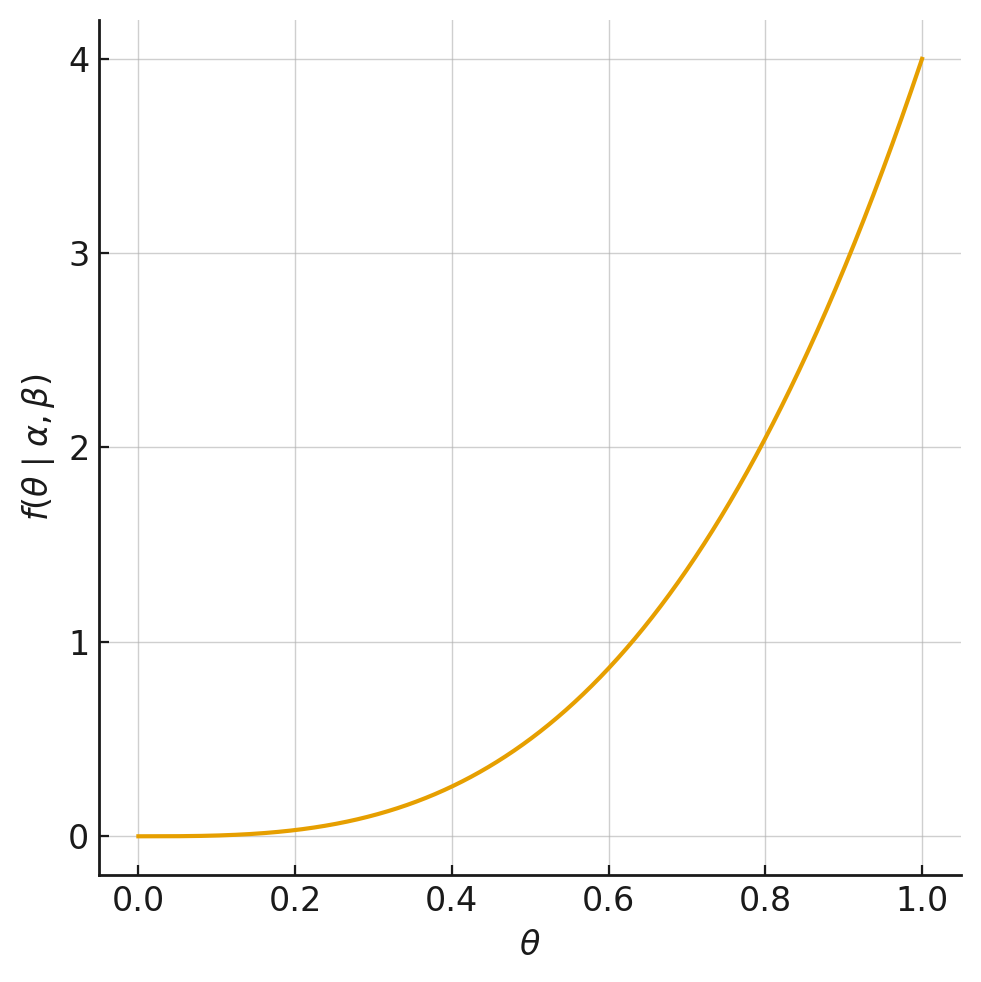
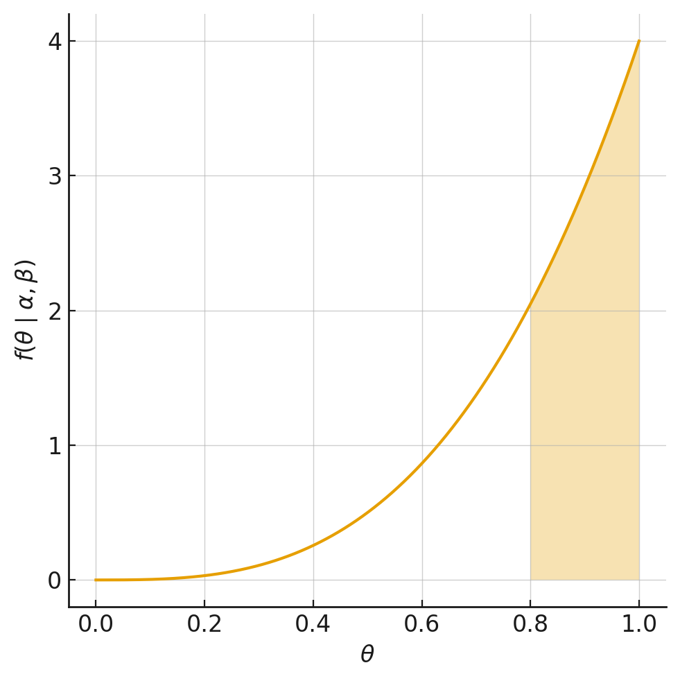

Capítulo 2 Modelos Probabilísticos
Para qué sirve esta unidad. En marketing, resulta frecuente enfrentar situaciones en las que la información disponible sobre el comportamiento individual de los clientes es limitada o agregada: ¿cuánto tiempo permanecerá un suscriptor?, ¿cuántas veces visitará un portal web?, ¿responderá o no a una campaña promocional? Los modelos probabilísticos permiten abordar estas preguntas asumiendo que las decisiones de los agentes provienen de un proceso estocástico, lo cual posibilita describir, predecir y gestionar el comportamiento de los clientes sin requerir grandes volúmenes de datos individuales.
Habilidades previas requeridas. Variable aleatoria y distribuciones de probabilidad básicas (Bernoulli, Binomial, Poisson, Exponencial), cálculo integral elemental, noción de función de verosimilitud y estimación por máxima verosimilitud, conceptos de valor esperado y varianza.
Qué debería poder hacer el estudiante al terminar.
- Identificar cuándo un fenómeno de marketing corresponde a un problema de duración, conteo o elección binaria.
- Formular la distribución individual y la distribución de heterogeneidad adecuadas para cada problema.
- Derivar la distribución agregada mediante integración (mezcla).
- Construir funciones de log-verosimilitud para estimar los parámetros de los modelos propuestos.
- Calcular esperanzas condicionales (actualización bayesiana) para personalizar predicciones a nivel individual.
- Incorporar heterogeneidad observable mediante regresiones sobre los parámetros del modelo.
- Evaluar y comparar modelos mediante criterios de información (AIC, BIC) y log-verosimilitud.
Conexión con ejercicios. A lo largo del capítulo se intercalan ejercicios guiados (E1–E7) que permiten verificar la comprensión de cada concepto a medida que se avanza. Al final del capítulo se incluyen problemas aplicados (P1–P9) con soluciones completas.
Purpose of this unit. In marketing, it is common to face situations where the available information on individual customer behavior is limited or aggregated: how long will a subscriber stay?, how many times will they visit a web portal?, will they respond to a promotional campaign? Probabilistic models address these questions by assuming that agent decisions arise from a stochastic process, which makes it possible to describe, predict, and manage customer behavior without requiring large volumes of individual-level data.
Required prior skills. Random variables and basic probability distributions (Bernoulli, Binomial, Poisson, Exponential), elementary integral calculus, notion of the likelihood function and maximum likelihood estimation, concepts of expected value and variance.
What the student should be able to do upon completion.
- Identify when a marketing phenomenon corresponds to a duration, count, or binary choice problem.
- Formulate the appropriate individual distribution and heterogeneity distribution for each problem.
- Derive the aggregate distribution through integration (mixing).
- Construct log-likelihood functions to estimate the parameters of the proposed models.
- Compute conditional expectations (Bayesian updating) to personalize predictions at the individual level.
- Incorporate observable heterogeneity through regressions on model parameters.
- Evaluate and compare models using information criteria (AIC, BIC) and log-likelihood.
Connection with exercises. Throughout the chapter, guided exercises (E1–E7) are interspersed to verify comprehension of each concept as the material progresses. At the end of the chapter, applied problems (P1–P9) with complete solutions are included.
2.1 Definiciones clave
Antes de introducir la notación formal, conviene precisar los conceptos centrales que se emplearán a lo largo de la unidad:
Before introducing the formal notation, it is useful to clarify the key concepts that will be used throughout this unit:
Definiciones clave
- Modelo probabilístico: representación de un fenómeno en la que el comportamiento de los agentes se describe mediante distribuciones de probabilidad, en contraste con el enfoque estructural que supone maximización racional de utilidad.
- Comportamiento individual: conducta observable de un agente (abandonar, comprar, responder), caracterizada por una distribución con parámetro latente \(\theta\).
- Heterogeneidad no observable: variación en los parámetros latentes entre individuos de la población, representada por una distribución de mezcla \(g(\theta)\).
- Distribución agregada: distribución resultante de integrar el comportamiento individual sobre la distribución de heterogeneidad; es la que se confronta con los datos observados.
- Función de supervivencia \(S(t)\): probabilidad de que un evento no haya ocurrido hasta el instante \(t\).
- Tasa de riesgo (hazard rate) \(h(t)\): probabilidad instantánea de que el evento ocurra en \(t\), condicionada a que no ha ocurrido hasta ese momento.
- Esperanza condicional: valor esperado del parámetro latente de un individuo, actualizado a la luz de su comportamiento observado (actualización bayesiana).
- Customer Lifetime Value (CLV): valor presente neto de los flujos futuros esperados de un cliente, considerando su probabilidad de permanencia (Fader et al., 2005b; Fader & Hardie, 2010).
Key definitions
- Probabilistic model: a representation of a phenomenon in which agent behavior is described by probability distributions, in contrast with the structural approach that assumes rational utility maximization.
- Individual behavior: observable conduct of an agent (churning, purchasing, responding), characterized by a distribution with latent parameter \(\theta\).
- Unobservable heterogeneity: variation in the latent parameters across individuals in the population, represented by a mixture distribution \(g(\theta)\).
- Aggregate distribution: the distribution resulting from integrating individual behavior over the heterogeneity distribution; it is the one confronted with observed data.
- Survival function \(S(t)\): probability that an event has not occurred by time \(t\).
- Hazard rate \(h(t)\): instantaneous probability that the event occurs at \(t\), conditional on it not having occurred up to that point.
- Conditional expectation: expected value of an individual’s latent parameter, updated in light of their observed behavior (Bayesian updating).
- Customer Lifetime Value (CLV): net present value of the expected future cash flows of a customer, considering their probability of retention (Fader et al., 2005b; Fader & Hardie, 2010).
2.2 Enfoque y metodología
En el contexto de marketing, interesa estudiar el comportamiento de las personas para realizar acciones estratégicas. Es posible distinguir dos enfoques según los supuestos sobre el comportamiento de los agentes:
- Enfoque estructural: supone que los agentes se comportan de manera racional, tomando decisiones que maximizan su utilidad. Resulta apropiado cuando se dispone de grandes volúmenes de datos individuales.
- Modelos probabilísticos: suponen que las decisiones de los agentes pueden describirse como realizaciones de procesos aleatorios. Resultan adecuados cuando la información disponible es reducida o agregada.
In the marketing context, understanding consumer behavior is essential for making strategic decisions. Two approaches can be distinguished based on the assumptions about agent behavior:
- Structural approach: assumes that agents behave rationally, making decisions that maximize their utility. It is appropriate when large volumes of individual-level data are available.
- Probabilistic models: assume that agent decisions can be described as realizations of random processes. They are suitable when the available information is limited or aggregated.
La metodología de modelamiento probabilístico (Fader et al., 2005a; Schmittlein et al., 1987) sigue una secuencia de siete pasos:
- Determinar el problema de decisión a estudiar y la información requerida.
- Identificar el comportamiento observable de interés a nivel individual.
- Seleccionar la distribución de probabilidad que caracterice el comportamiento individual. Los parámetros de esta distribución se interpretan como características latentes a nivel individual.
- Escoger la distribución que describa cómo las características latentes están distribuidas en la población (distribución de mezcla o heterogénea), típicamente denotada \(g(\theta)\).
- Derivar la distribución agregada del comportamiento de interés:
The probabilistic modeling methodology (Fader et al., 2005a; Schmittlein et al., 1987) follows a sequence of seven steps:
- Determine the decision problem to study and the required information.
- Identify the observable behavior of interest at the individual level.
- Select the probability distribution that characterizes individual behavior. The parameters of this distribution are interpreted as latent characteristics at the individual level.
- Choose the distribution that describes how the latent characteristics are distributed across the population (mixture distribution or heterogeneity distribution), typically denoted \(g(\theta)\).
- Derive the aggregate distribution of the behavior of interest:
\[f(x) = \int f(x \mid \theta)\, g(\theta)\, d\theta \quad \text{(caso continuo)} \tag{2.1}\] \[p(x) = \sum_{i} f(x \mid \theta)\, \Pr(\theta = \theta_i) \quad \text{(caso discreto)} \tag{2.2}\]
- Estimar los parámetros del modelo mediante el ajuste de la distribución agregada a los datos observados (máxima verosimilitud).
- Usar los resultados para tomar decisiones sobre el problema de marketing en cuestión.
- Estimate the model parameters by fitting the aggregate distribution to the observed data (maximum likelihood).
- Use the results to make decisions about the marketing problem at hand.
Ejemplo 1 (Motivación). Un cliente realizó 2 compras el año pasado. ¿Esto implica que mantendrá ese patrón de consumo? ¿Existe alguna posibilidad de que incremente o disminuya su nivel de compra? ¿Cuál es el proceso subyacente? Los modelos probabilísticos permiten responder estas preguntas asumiendo que el número de compras proviene de una distribución (por ejemplo, Poisson) cuyo parámetro varía entre individuos.
Example 1 (Motivation). A customer made 2 purchases last year. Does this imply that the same purchasing pattern will continue? Is there any chance that the customer will increase or decrease the purchase level? What is the underlying process? Probabilistic models address these questions by assuming that the number of purchases comes from a distribution (for example, Poisson) whose parameter varies across individuals.
El enfoque probabilístico permite abordar tres tipos fundamentales de problemas en marketing:
- Duración: ¿cuándo ocurre un evento? Situaciones ligadas a la permanencia de un cliente en una compañía, al tiempo de adopción de un producto innovador, entre otras.
- Conteo: ¿cuántas veces ocurre un evento? Situaciones ligadas al número de visitas a un portal web, la cantidad de productos comprados, el número de exposiciones publicitarias.
- Elección binaria: ¿ocurre o no el evento? Situaciones asociadas a la decisión de responder a una campaña publicitaria, de comprar o no un producto, de cambiar o no de proveedor.
Comportamientos más complejos pueden describirse mediante combinaciones de estos modelos básicos.
The probabilistic approach allows addressing three fundamental types of problems in marketing:
- Duration: when does an event occur? Situations related to customer retention in a company, time to adoption of an innovative product, among others.
- Count: how many times does an event occur? Situations related to the number of visits to a web portal, the quantity of products purchased, the number of advertising exposures.
- Binary choice: does the event occur or not? Situations associated with the decision to respond to an advertising campaign, to buy or not buy a product, to switch providers or not.
More complex behaviors can be described through combinations of these basic models.
2.3 Modelos de duración
En años recientes, las mejoras en las tecnologías de información han generado como resultado un aumento en la disponibilidad de data acerca de los individuos en determinadas situaciones de consumo. Esta tendencia se relaciona íntimamente con el creciente deseo de los gerentes de marketing respecto a utilizar esta data disponible para aprender de manera exhaustiva sobre el comportamiento de los clientes. Muchos analistas tratan de describir y predecir el comportamiento de los consumidores usando variables observables, como lo son variables transaccionales (monto gastado, tienda donde se adquirió un determinado producto, fecha de la compra, etc.), como así también variables que caracterizan a los individuos (edad, nivel socio-económico, estado civil, etc.). A partir de esta información es posible aplicar modelos de regresión lineal o árboles de decisión, con el objetivo de poder proyectar comportamientos, o bien rebatir hipótesis que previamente se tenían respecto a un escenario determinado.
En este capítulo, se considera un enfoque distinto al anterior, en el cual las decisiones de los individuos se desprenden de un comportamiento aleatorio, en que las decisiones no dependen únicamente de variables descriptivas del modelo, sino que también provienen del resultado de un proceso estocástico no observable que opera intrínsecamente en los individuos. Es decir, la asunción que el comportamiento se desprende de una distribución de probabilidades que puede variar dependiendo del modelo a estimar y de la complejidad del mismo. Alternativamente, se puede considerar el enfoque racionalista que contempla a los individios que siempre actúan racionalmente, lo que, de acuerdo a la experiencia empírica, no se cumple siempre.
Ejemplo 1: Supongamos que un cliente hizo 2 compras el año pasado de nuestro producto. ¿Esto implica inmediatamente que el consumidor mantendrá ese patrón y este año volverá a ese nivel de consumo? ¿O existe alguna posibilidad de que el cliente incremente o disminuya su consumo? ¿Cuál es el proceso que hay detrás?
En lo que sigue, se considera 3 tipos de modelos de duración a estimar:
Modelos de duración en tiempo discreto.
Modelos de duración en tiempo continuo sin dependencia en la duración.
Modelos de duración en tiempo continuo con dependencia en la duración.
In recent years, improvements in information technologies have led to an increase in the availability of data about individuals in specific consumption situations. This trend is closely related to marketing managers’ growing desire to use this available data to learn exhaustively about customer behavior. Many analysts attempt to describe and predict consumer behavior using observable variables, such as transactional variables (amount spent, store where a given product was acquired, purchase date, etc.), as well as variables that characterize individuals (age, socioeconomic level, marital status, etc.). Based on this information, linear regression models or decision trees can be applied in order to project behaviors or challenge previously held hypotheses about a given scenario.
In this chapter, a different approach is considered, one in which the decisions of individuals arise from random behavior, where decisions do not depend solely on descriptive variables of the model, but also come from the result of an unobservable stochastic process that operates intrinsically within individuals. That is, the assumption is that behavior arises from a probability distribution that can vary depending on the model to be estimated and its complexity. Alternatively, one may consider the rationalist approach, which assumes individuals always act rationally, something that, according to empirical experience, does not always hold.
Example 1: Suppose that a customer made 2 purchases of our product last year. Does this immediately imply that the consumer will maintain that pattern and return to that same level of consumption this year? Or is there some possibility that the customer increases or decreases their consumption? What process lies behind this?
In what follows, 3 types of duration models are considered:
Discrete-time duration models.
Continuous-time duration models without duration dependence.
Continuous-time duration models with duration dependence.
2.3.1 Modelos de duración en tiempo discreto
Como ejemplo, se tiene el siguiente escenario: a través de una propuesta de valor atractiva, una empresa consigue un cliente. ¿Durante cuántos periodos estará afiliado a la compañía?
Se considera que cada periodo se puede cuantificar en términos discretos (días, semanas, meses, años). Algunos ejemplos a considerar:
- Un usuario descarga una aplicación para su teléfono inteligente. ¿Por cuántos meses la utilizará?
- Adquirimos un cliente en un banco. ¿Durante cuántos años permanecerá como cliente?
- Un cliente se suscribe a un plan telefónico o de internet. ¿Por cuántos periodos se mantendrá suscrito?
As an example, consider the following scenario: through an attractive value proposition, a company acquires a customer. For how many periods will the customer remain affiliated with the company?
Each period is considered to be quantifiable in discrete terms (days, weeks, months, years). Some examples to consider:
- A user downloads a smartphone application. For how many months will they use it?
- A customer is acquired by a bank. For how many years will they remain a customer?
- A customer subscribes to a phone or internet plan. For how many periods will the subscription last?
Modelo Geométrico Desplazado
Como ejemplo, se asume que se tiene una cartera de clientes que van abandonando la relación comercial para nunca más retomarla en cualquier periodo definido. Al final de cada periodo, un cliente decide de manera aleatoria si continúa afiliado. De acuerdo a un proceso de Bernoulli, hay una probabilidad \(\theta\) de cancelar la relación comercial con la empresa y con el complemento \(1-\theta\) decide su permanencia.
Para cada individuo, se asume que la probabilidad con la que decide no cambia en el tiempo. Como primer acercamiento, se asume que dicha probabilidad es igual e idénticamente distribuida (iid). Sea T la variable aleatoria relativa a la duración de la relación comercial entre el cliente y la compañía, es decir la variable que describe el instante en el cual esta relación se acaba. De acuerdo a la descripción anterior, la variable aleatoria T sigue una distribución Geométrica Desplazada (sG) con parámetro \(\theta\), es decir, el comportamiento de los individuos puede ser descrito formalmente de acuerdo a la siguiente relación:
- Probabilidad de que un individuo cualquiera abandone la relación comercial exactamente en el periodo t:
Consider a customer portfolio where customers leave the business relationship never to return in any given period. At the end of each period, a customer randomly decides whether to continue the relationship. According to a Bernoulli process, there is a probability \(\theta\) of canceling the business relationship and, with probability \(1-\theta\), of staying.
For each individual, the churn probability is assumed to be constant over time. As a first approximation, this probability is assumed to be the same for all individuals (homogeneous case). Let \(T\) be the random variable describing the duration of the business relationship. Then \(T\) follows a Shifted Geometric (sG) distribution with parameter \(\theta\):
- Probability that an individual leaves the business relationship exactly in period \(t\):
\[P(T=t \mid \theta) = \theta(1 - \theta)^{t-1} \tag{2.3}\]
- Probabilidad de que un individuo cualquiera abandone la relación comercial en un periodo posterior al periodo t:
- Probability that an individual leaves the business relationship in a period after period \(t\):
\[P(T > t \mid \theta) = (1 - \theta)^{t} \tag{2.4}\]
No es muy difícil aplicar un modelamiento a partir de lo anterior para intentar dilucidar de qué forma se debería comportar un determinado grupo de individuos a partir de la data transaccional que se tiene.
It is not too difficult to apply modeling based on the above in order to clarify how a given group of individuals should behave based on the transactional data available.
Ejemplo 2 (Modelo Geométrico Desplazado). Se considera una cohorte inicial de 1.000 clientes (indexado por el año 0). Se asume que, año a año, un determinado número de clientes se retira del negocio de acuerdo a un proceso de Bernoulli con probabilidad \(\theta\) de abandono. La data histórica se presenta a continuación:
| Año | # de Clientes | % de Permanencia | % de Retención |
|---|---|---|---|
| 0 | 1.000 | 100% | – |
| 1 | 631 | 63% | 63% |
| 2 | 468 | 47% | 74% |
| 3 | 382 | 38% | 82% |
| 4 | 326 | 33% | 85% |
| 5 | 289 | 29% | 89% |
| 6 | 262 | 26% | 91% |
| 7 | 241 | 24% | 92% |
El porcentaje de retención corresponde al porcentaje de clientes que se mantuvo en la relación comercial respecto al período anterior.
Example 2 (Shifted Geometric Model). Consider an initial cohort of 1,000 customers (indexed at year 0). It is assumed that, year after year, a certain number of customers leave the business according to a Bernoulli process with churn probability \(\theta\). The historical data are presented below:
| Year | # Customers | % Remaining | % Retention |
|---|---|---|---|
| 0 | 1,000 | 100% | – |
| 1 | 631 | 63% | 63% |
| 2 | 468 | 47% | 74% |
| 3 | 382 | 38% | 82% |
| 4 | 326 | 33% | 85% |
| 5 | 289 | 29% | 89% |
| 6 | 262 | 26% | 91% |
| 7 | 241 | 24% | 92% |
The retention percentage is the proportion of customers who remained in the business relationship relative to the previous period.
Sin embargo, aún no se desconoce el valor de \(\theta\) (es un parámetro poblacional). Dicho valor se estima mediante el método de máxima verosimilitud, que busca encontrar el valor del parámetro óptimo de acuerdo a los datos observados y asumiendo independencia entre las muestras:
- Densidad de probabilidades conjunta:
The value of \(\theta\) is still unknown (it is a population parameter). This value is estimated through the maximum likelihood method, which seeks to find the optimal parameter value according to the observed data and assuming independence across samples:
- Joint probability density:
\[f(x_1,x_2,\ldots,x_n\mid\theta) = f(x_1\mid\theta) \cdot f(x_2\mid\theta) \cdot \ldots \cdot f(x_n\mid\theta) \tag{2.5}\]
- Función de verosimilitud:
- Likelihood function:
\[ \begin{aligned} L(\theta) &= \left\{\prod_{t=1}^{\tau} P(T=t \mid \theta)^{n_t}\right\} P(T>\tau \mid \theta)^{n_\tau} \\ &= \left\{\prod_{t=1}^{\tau} \big[\theta(1-\theta)^{t-1}\big]^{n_t}\right\} \big[(1-\theta)^{\tau}\big]^{n_\tau} \end{aligned} \tag{2.6} \]
Notar que \(n_\tau\) es el número de clientes activos después del máximo tiempo observable \(\tau\), \(n_t\) es el número de abandonos (si hay 369 abandonos, se multiplica 369 veces), y \(x_i\) el año. A partir de esto y de la data disponible, las contribuciones a la verosimilitud son las siguientes (asumiendo como modelo de comportamiento la distribución geométrica desplazada)
| Año | # de Clientes | # de Abandonos | Pr |
|---|---|---|---|
| 0 | 1000 | - | - |
| 1 | 631 | 369 | \(P(T=1\|\theta) = \theta^{369}\) |
| 2 | 468 | 163 | \(P(T=2\|\theta) = ((1 - \theta)^{(2-1)} \cdot \theta)^{163}\) |
| 3 | 382 | 86 | \(P(T=3\|\theta) = ((1 - \theta)^{(3-1)} \cdot \theta)^{86}\) |
| 4 | 326 | 56 | \(P(T=4\|\theta) = ((1 - \theta)^{(4-1)} \cdot \theta)^{56}\) |
| 5 | 289 | 37 | \(P(T=5\|\theta) = ((1 - \theta)^{(5-1)} \cdot \theta)^{37}\) |
| 6 | 262 | 27 | \(P(T=6\|\theta) = ((1 - \theta)^{(6-1)} \cdot \theta)^{27}\) |
| 7 | 241 | 21 | \(P(T=7\|\theta) = ((1 - \theta)^{(7-1)} \cdot \theta)^{21}\) |
| >7 | - | - | \(P(T>7\|\theta) = ((1-\theta)^7)^{241}\) |
Dado que maximizar un producto es complicado, se aplica logaritmo a lo anterior, de modo de construir la función de log verosimilitud:
- Función de log verosimilitud:
Note that \(n_\tau\) is the number of customers still active after the maximum observable time \(\tau\), \(n_t\) is the number of churns (if there are 369 churns, the term is multiplied 369 times), and \(x_i\) denotes the year. Based on this and the available data, the contributions to the likelihood are the following (assuming the shifted geometric distribution as the behavioral model):
| Year | # Customers | # Churns | Pr |
|---|---|---|---|
| 0 | 1000 | - | - |
| 1 | 631 | 369 | \(P(T=1\|\theta) = \theta^{369}\) |
| 2 | 468 | 163 | \(P(T=2\|\theta) = ((1 - \theta)^{(2-1)} \cdot \theta)^{163}\) |
| 3 | 382 | 86 | \(P(T=3\|\theta) = ((1 - \theta)^{(3-1)} \cdot \theta)^{86}\) |
| 4 | 326 | 56 | \(P(T=4\|\theta) = ((1 - \theta)^{(4-1)} \cdot \theta)^{56}\) |
| 5 | 289 | 37 | \(P(T=5\|\theta) = ((1 - \theta)^{(5-1)} \cdot \theta)^{37}\) |
| 6 | 262 | 27 | \(P(T=6\|\theta) = ((1 - \theta)^{(6-1)} \cdot \theta)^{27}\) |
| 7 | 241 | 21 | \(P(T=7\|\theta) = ((1 - \theta)^{(7-1)} \cdot \theta)^{21}\) |
| >7 | - | - | \(P(T>7\|\theta) = ((1-\theta)^7)^{241}\) |
Since maximizing a product is complicated, the logarithm is applied to construct the log-likelihood function:
- Log-likelihood function:
\[ \begin{aligned} \hat{\ell}(\theta) &= \sum_{t=1}^{\tau} n_t \,\ln P(T=t \mid \theta)\;+\; n_{\tau}\,\ln P(T>\tau \mid \theta) \\ &= \sum_{t=1}^{\tau} n_t \big[\ln \theta + (t-1)\ln(1-\theta)\big]\;+\;n_{\tau}\,\tau\ln(1-\theta) \end{aligned} \tag{2.7}\]
Con lo anterior, es sencillo maximizar la función de log verosimilitud para un \(\theta\) desconocido utilizando un paquete estadístico como R, con lo que se tiene:
With the above, it is straightforward to maximize the log-likelihood function for an unknown \(\theta\) using a statistical package such as R, obtaining:
\[ \begin{aligned} \hat{\theta} &= 0, 226027 \\ \hat{l} &= -1794,62 \end{aligned}\]
El modelo presentado, si bien permite tomar medidas de gestión a partir de un modelo sencillo, es poco realista, pues se asume que la población posee igual probabilidad de abandono.
Una manera de incluir mayor complejidad al modelo y hacerlo más robusto, se asume que la población no es homogénea, sino que existen segmentos de individuos quienes al ser agrupados, presentan un comportamiento similar (heterogéneo). La forma más sencilla de modelar esto es asumiendo que la población presenta 2 patrones de comportamiento o 2 segmentos. Para un segmento de individuos, la decisión de abandonar o permanecer se identifica a partir de un parámetro \(\theta_1\) (del mismo modo que en el caso anterior) y, para el otro segmento, la decisión se determina a partir de un parámetro \(\theta_2\) distinto de \(\theta_1\).
Formalmente, las relaciones que describen de mejor manera esto son las siguientes:
The model presented, while allowing management actions based on a simple model, is unrealistic because it assumes the population has the same churn probability.
One way to incorporate greater complexity and make the model more robust is to assume that the population is not homogeneous, but rather that there exist segments of individuals who, when grouped, exhibit similar behavior (heterogeneous overall). The simplest way to model this is to assume that the population displays 2 patterns of behavior or 2 segments. For one segment of individuals, the decision to leave or stay is identified through parameter \(\theta_1\) (just as in the previous case) and, for the other segment, the decision is determined through a parameter \(\theta_2\) different from \(\theta_1\).
Formally, the relationships that best describe this are the following:
\[ P(T=t|\theta_1, \theta_2, \pi)= \theta_1 (1-\theta_1)^{t-1} \pi + \theta_2(1-\theta_2)^{t-1}(1-\pi) \tag{2.8}\] \[ P(T>t|\theta_1, \theta_2, \pi)= (1-\theta_1)^{t} \pi + (1-\theta_2)^{t}(1-\pi) \tag{2.9}\]
En el modelo anterior, \(\pi\) representa el porcentaje de la población que pertenece al segmento 1, de tal forma que su complemento \(1-\pi\) representa el porcentaje de la población que pertenece al segmento 2. Cabe mencionar que se puede expandir a más segmentos, siempre que sepamos su proporción \(\pi\).
In the previous model, \(\pi\) represents the percentage of the population that belongs to segment 1, so that its complement \(1-\pi\) represents the percentage of the population that belongs to segment 2. It is worth noting that this can be extended to more segments, as long as their proportion \(\pi\) is known.
Ejercicio guiado E1: Tasa de respuesta.
Una compañía de venta de ropa por catálogo busca decidir a qué segmento enviar los catálogos de la próxima colección. Para ello analiza la tasa de respuesta de una muestra de clientes de cada segmento (el ratio entre número de clientes que compra y número de catálogos enviados). Al mirar el primer segmento observa que de los 18 clientes a quienes se les envió el catálogo, ninguno compró y, por tanto, decide no enviar catálogos a ningún cliente de ese segmento. Esta compañía:
- Muy probablemente esté subestimando la tasa de respuesta de ese segmento.
- Debiera redefinir los criterios de segmentación para hacer grupos más grandes y accionables.
- Ha definido una política que da cuenta de su aversión al riesgo.
- Debiera usar un modelo de duración en tiempo continuo con dependencia en la duración.
- Debiera incorporar variables explicativas en su modelo predictivo.
Solución
Respuesta correcta: (a).
Con una muestra de solo 18 observaciones y cero respuestas, la estimación empírica \(\hat{p} = 0/18 = 0\) resulta poco confiable. La probabilidad real de respuesta del segmento es muy probablemente mayor que cero; la observación de ninguna compra en una muestra tan pequeña no implica que la tasa de respuesta sea nula. Un enfoque bayesiano (por ejemplo, con un prior \(\text{Beta}(\alpha, \beta)\)) produciría una estimación positiva incluso con cero éxitos observados.Guided exercise E1: Response rate.
A catalog clothing company wants to decide which segment to send next season’s catalogs to. To this end, it analyzes the response rate of a sample of customers from each segment (the ratio between the number of customers who purchase and the number of catalogs sent). Looking at the first segment, the company observes that none of the 18 customers who received the catalog made a purchase, and therefore decides not to send catalogs to any customer in that segment. This company:
- Is very likely underestimating the response rate of that segment.
- Should redefine the segmentation criteria to create larger and more actionable groups.
- Has defined a policy that reflects its risk aversion.
- Should use a continuous-time duration model with duration dependence.
- Should incorporate explanatory variables in its predictive model.
Solution
Correct answer: (a).
With a sample of only 18 observations and zero responses, the empirical estimate \(\hat{p} = 0/18 = 0\) is unreliable. The true response probability of the segment is very likely greater than zero; observing no purchases in such a small sample does not imply that the response rate is zero. A Bayesian approach (for example, with a \(\text{Beta}(\alpha, \beta)\) prior) would yield a positive estimate even with zero observed successes.Modelo Beta-Geométrico Desplazado
Los modelos anteriores funcionan bien cuando la población se comporta de manera distinta entre clases latentes, y similar al interior de cada clase latente. Sin embargo, puede ser mucho más realista e interesante asumir que existe una heterogeneidad continua en la población, es decir, que existe un número infinito de segmentos (o al menos tendiente a infinito) de manera de capturar todas las preferencias individuales de cada miembro de la población considerada.
Para estos propósitos, ya no asumiremos que la probabilidad de abandono \(\theta\) sigue una distribución discreta de Bernoulli (éxito-fracaso), sino que asumiremos que el parámetro proviene de una distribución continua \(\text{Beta}\) de parámetros \(\alpha\) y \(\beta\).
Por tanto, es posible calcular las probabilidades antes presentadas en forma análoga, aplicando el enfoque antes mencionado (probabilidades totales):
Probabilidad de que un individuo cualquiera abandone la relación comercial exactamente en el periodo t:
\[P(T=t|\alpha,\beta) = \int_0^1 P(T=t|\theta)B(\theta|\alpha,\beta)d\theta \tag{2.10}\]
Donde:
The previous models work well when the population behaves differently across latent classes, and similarly within each latent class. However, it can be much more realistic and interesting to assume that there is continuous heterogeneity in the population, that is, that there exists an infinite number of segments (or at least tending to infinity) in order to capture all individual preferences of each member of the population considered.
For these purposes, we will no longer assume that the churn probability \(\theta\) follows a discrete Bernoulli distribution (success-failure), but rather that the parameter comes from a continuous \(\text{Beta}\) distribution with parameters \(\alpha\) and \(\beta\).
Therefore, it is possible to calculate the probabilities presented earlier in an analogous way, applying the previously mentioned approach (total probabilities):
Probability that any individual leaves the business relationship exactly in period t:
\[P(T=t|\alpha,\beta) = \int_0^1 P(T=t|\theta)B(\theta|\alpha,\beta)d\theta \tag{2.10}\]
Where:
\[B(\theta|\alpha,\beta) = \frac{\theta^{\alpha-1}(1-\theta)^{\beta-1}}{B(\alpha,\beta)} \tag{2.11a}\]
\[B(\alpha,\beta) = \frac{\Gamma(\alpha)\Gamma(\beta)}{\Gamma(\alpha + \beta)} \tag{2.11b}\]
Probabilidad de que un individuo cualquiera abandone la relación comercial en un periodo posterior al periodo t:
\[P(T>t|\alpha,\beta) = \int_0^1 P(T>t|\theta)B(\theta|\alpha,\beta)d\theta \tag{2.12}\]
Al desarrollar la primera integral antes mencionada, y reconociendo las relaciones de la distribución Beta, se tiene que:
Probability that any individual leaves the business relationship in a period after period t:
\[P(T>t|\alpha,\beta) = \int_0^1 P(T>t|\theta)B(\theta|\alpha,\beta)d\theta \tag{2.12}\]
Developing the first integral mentioned above, and recognizing the relationships of the Beta distribution, we obtain:
\[ \begin{aligned} P(T = t \mid \alpha, \beta) &= \int_0^1 \left( \theta(1-\theta)^{t-1} \right) \left( \frac{\theta^{\alpha-1}(1-\theta)^{\beta-1}}{B(\alpha, \beta)} \right) d\theta \\ &= \frac{1}{B(\alpha, \beta)} \int_0^1 (\theta \cdot \theta^{\alpha-1}) \cdot ((1-\theta)^{t-1} \cdot (1-\theta)^{\beta-1}) d\theta \\ &= \frac{1}{B(\alpha, \beta)} \int_0^1 \theta^{\alpha} (1-\theta)^{t+\beta-2} d\theta \\ &= \frac{B(\alpha+1, t+\beta-1)}{B(\alpha, \beta)} \end{aligned} \tag{2.13}\]
Notar que se usa indistintamente el \(B(\alpha,\beta)\) para hacer alusión tanto a la función como a la distribución Beta. Bajo ninguna circunstancia dichos objetos son iguales.
El desarrollo de la segunda integral es:
Note that \(B(\alpha,\beta)\) is used interchangeably to refer both to the Beta function and to the Beta distribution. Under no circumstances are these objects equal.
The development of the second integral is:
Notación importante. Se utiliza \(B(\alpha, \beta)\) indistintamente para referirse tanto a la función Beta como a la distribución Beta. Bajo ninguna circunstancia estos objetos son iguales: la función Beta es una constante de normalización, mientras que la distribución Beta es una función de densidad de probabilidad.
Important notation. \(B(\alpha, \beta)\) is used interchangeably to refer to both the Beta function and the Beta distribution. Under no circumstances are these objects the same: the Beta function is a normalization constant, while the Beta distribution is a probability density function.
Ejemplo 3 (Recursividad en el modelo Beta-Geométrico). Usando la misma cohorte del Ejemplo 2, pero asumiendo heterogeneidad continua, es posible identificar una recursividad en la fórmula de abandono:
Caso base (\(t=1\)): \[P(T=1 \mid \alpha, \beta) = \frac{B(\alpha+1, \beta)}{B(\alpha, \beta)} = \frac{\alpha}{\alpha + \beta}\] Paso recursivo (\(t > 1\)): \[\frac{P(T=t \mid \alpha, \beta)}{P(T=t-1 \mid \alpha, \beta)} = \frac{\beta + t - 2}{\alpha + \beta + t - 1}\] Al estimar el modelo Beta-Geométrico Desplazado con los datos del Ejemplo 2, se obtiene: \[\hat{\alpha} = 0{,}7041 \qquad \hat{\beta} = 1{,}1820 \qquad \hat{\ell} = -1680{,}27 \tag{2.15}\] La diferencia en log-verosimilitud respecto al modelo homogéneo (\(\hat{\ell} = -1794{,}62\)) es notable. Si bien esto sugiere una mejora, la comparación rigurosa debe realizarse mediante criterios como AIC o BIC, que penalizan por el número de parámetros.
Example 3 (Recursion in the Beta-Geometric model). Using the same cohort from Example 2, but assuming continuous heterogeneity, a recursion in the churn formula can be identified:
Base case (\(t=1\)): \[P(T=1 \mid \alpha, \beta) = \frac{B(\alpha+1, \beta)}{B(\alpha, \beta)} = \frac{\alpha}{\alpha + \beta}\] Recursive step (\(t > 1\)): \[\frac{P(T=t \mid \alpha, \beta)}{P(T=t-1 \mid \alpha, \beta)} = \frac{\beta + t - 2}{\alpha + \beta + t - 1}\] Estimating the Shifted Beta-Geometric model with the data from Example 2 yields: \[\hat{\alpha} = 0.7041 \qquad \hat{\beta} = 1.1820 \qquad \hat{\ell} = -1680.27 \tag{2.15}\] The difference in log-likelihood relative to the homogeneous model (\(\hat{\ell} = -1794.62\)) is notable. Although this suggests an improvement, a rigorous comparison should be performed using criteria such as AIC or BIC, which penalize for the number of parameters.
2.3.2 Modelos de duración en tiempo continuo sin dependencia en la duración
Para algunos modelos, medir el tiempo como si fueran períodos discretos puede ser un buena aproximación de acuerdo a los objetivos del análisis que se desea llevar a cabo.
En otros casos, puede ser en cambio más útil considerar el tiempo como una variable continua, debido a que podría interesar medir la ocurrencia de un suceso de manera más exacta. Algunos casos relativos a este enfoque son:
- Tiempos de respuesta a una campaña promocional de marketing directo.
- Tiempo entre visitas a nuestro website.
- Tiempos entre llamadas en un call center.
- Tiempos de operación en la industria de servicios.
Al igual que en el caso de los modelos en tiempo discreto, lo que interesa estudiar es poder implementar un modelo que tenga una forma funcional flexible para ser trabajada y modificada fácilmente, que logre ajustar a la data histórica que se tiene y proyectar el comportamiento futuro de los clientes, es decir, que sea un buen modelo predictivo para tomar acciones en función de aquello.
For some models, measuring time as if it were discrete periods can be a good approximation depending on the objectives of the analysis to be carried out.
In other cases, however, it may be more useful to consider time as a continuous variable, because it may be of interest to measure the occurrence of an event more precisely. Some cases related to this approach are:
- Response times to a direct marketing promotional campaign.
- Time between visits to our website.
- Time between calls in a call center.
- Operation times in the services industry.
As in the case of discrete-time models, the goal is to implement a model with a flexible functional form that can be easily worked with and modified, that manages to fit the historical data available and project future customer behavior, that is, that it be a good predictive model for taking actions based on it.
Modelo Exponencial
Se puede medir el tiempo que pasa desde que se lanza un producto hasta que el consumidor decide adquirirlo. Existen muchos factores externos que determinan esta decisión: exposición a publicidad, número de visitas a la tienda, llamadas recibidas por call center, entre otras. Nuevamente se asume que el comportamiento es aleatorio, es decir, que los consumidores deciden el momento en el cuál van a consumir a partir de una distribución de probabilidades.
Esto puede verse con una distribución exponencial, con la variable aleatoria \(t\) definida como el tiempo en que un cliente va a consumir el producto por primera vez. Se asume que esta variable está exponencialmente distribuida con una tasa \(\lambda\). De esta forma, se tiene que el comportamiento de los consumidores puede verse como:
- Probabilidad de que ocurra en \(t\) o antes:
One can measure the time that passes from the launch of a product until the consumer decides to acquire it. There are many external factors that determine this decision: exposure to advertising, number of visits to the store, calls received by the call center, among others. Again, behavior is assumed to be random, that is, consumers decide the moment at which they will consume based on a probability distribution.
This can be seen through an exponential distribution, with the random variable \(t\) defined as the time at which a customer will consume the product for the first time. This variable is assumed to be exponentially distributed with rate \(\lambda\). In this way, consumer behavior can be seen as:
- Probability that it occurs at or before \(t\):
\[P(T \leq t) = 1 - e^{-\lambda t} \tag{2.16}\]
- Probabilidad de que ocurra después de \(t\):
- Probability that it occurs after \(t\):
\[P(T > t) = e^{-\lambda t} \tag{2.17}\]
Verosimilitud:
Likelihood:
\[\begin{aligned} L(\lambda) &= \prod_{i \in A} f(t_i \mid \lambda) \prod_{i \notin A} (1 - P(T \leq t)) \\ &= \prod_{i \in A} (\lambda e^{-\lambda t_i}) \prod_{i \notin A} (e^{-\lambda \tau_i}) \end{aligned} \tag{2.18}\]
Log-verosimilitud:
Log-likelihood:
\[\ell(\lambda) = \sum_{i \in A}\big[\ln\lambda - \lambda\, t_i\big] - \lambda\sum_{i \notin A} \tau_i \tag{2.19}\]
donde \(f(t_i \mid \theta)\) es la función de densidad, es decir, la derivada de la función de probabilidad acumulada \(P(T \leq t)\). El índice \(i\) corresponde a cada cliente y \(A\) es el conjunto de clientes que adquiere un producto o servicio. El parámetro \(\tau\), al igual que en el modelo de duración discreta, corresponde al tiempo máximo observado.
Ahora bien, esto inmediatamente deja en evidencia una limitante a este modelo: para un \(t\) muy grande, todos los consumidores van a tener un caso de éxito (Recordar que \(\text{lim } e^{-t} = 0\)), lo cual no es una situación del todo realista. Es necesario, en consecuencia, imponer que existe una fracción de clientes dentro de la muestra considerada que nunca probará el producto (caso de éxito) y, así, es posible solucionar la limitante encontrada (2 clases latentes).
- Segmento que prueba: Tamaño \(\pi\):
Here, \(f(t_i \mid \theta)\) is the density function, that is, the derivative of the cumulative probability function \(P(T \leq t)\). The index \(i\) corresponds to each customer and \(A\) is the set of customers who acquire a product or service. The parameter \(\tau\), as in the discrete duration model, corresponds to the maximum observed time.
Now, this immediately reveals a limitation of the model: for very large \(t\), all consumers will eventually experience the event (recall that \(\text{lim } e^{-t} = 0\)), which is not entirely realistic. It is therefore necessary to impose that there exists a fraction of customers within the sample that will never try the product (success case), and thus it is possible to solve the limitation found (2 latent classes).
- Segment that tries: Size \(\pi\):
\[ \begin{array}{c} \lambda = \theta\\ \Rightarrow P(T \leq t) = 1 - e^{-\theta t} \end{array}\]
- Segmento que no prueba: Tamaño (\(1-\pi\)):
- Segment that does not try: Size (\(1-\pi\)):
\[ \begin{array}{c} \lambda = 0\\ \Rightarrow P(T \leq t) = 0 \end{array}\]
Luego, la probabilidad total será:
Then, total probability will be:
Implementación práctica. Aunque el modelo describe probabilidades en tiempo continuo, los datos suelen presentarse en intervalos discretos. La log-verosimilitud se construye calculando la probabilidad de que el evento ocurra dentro de cada intervalo temporal: \(P(t_0 \leq T \leq t_1) = F(t_1) - F(t_0)\).
Practical implementation. Although the model describes probabilities in continuous time, data are usually presented in discrete intervals. The log-likelihood is constructed by computing the probability that the event occurs within each time interval: \(P(t_0 \leq T \leq t_1) = F(t_1) - F(t_0)\).
Es importante notar que si bien el modelo describe probabilidades en tiempo continuo, la data aún se presenta y obtiene en tiempo discreto. Incorporando esto, es posible construir la función de log verosimilitud calculando las probabilidades de adopción del producto entre los límites del intervalo temporal definido por el periodo de medición, es decir:
It is important to note that although the model describes probabilities in continuous time, the data are still presented and obtained in discrete time. Incorporating this, it is possible to construct the log-likelihood function by calculating the probabilities of product adoption between the limits of the time interval defined by the measurement period, that is:
\[ P(t_0 \leq T \leq t_1) = F(t_1) - F(t_0) \tag{2.21}\]
Cconsiderando n periodos discretos para el cálculo, la log-verosimilitud es:
Considering n discrete periods for the calculation, the log-likelihood is:
\[ LL(\pi,\theta|\text{data}) = N_1 ln[P(1\leq T \leq 2)] + ... + (N_{panel} - \sum_{i=1}^{n}N_i)ln[P(T>n)] \tag{2.22}\]
Adicionalmente, es de interés calcular los valores predichos por el modelo, de modo de realizar predicciones futuras. \(F(t)\) representa la probabilidad que un cliente escogido aleatoriamente pruebe el producto en \(t\), tal que \(t=0\) corresponde al instante de lanzamiento del producto. La estimación del futuro se puede hacer a través de la esperanza:
Additionally, it is of interest to calculate the values predicted by the model, so as to make future predictions. \(F(t)\) represents the probability that a randomly chosen customer tries the product at \(t\), such that \(t=0\) corresponds to the moment the product is launched. Future estimation can be done through the expectation:
\[ \mathbb{E}[T(t)] = N_{\text{panel }} \cdot \hat{F}(t) \tag{2.23}\]
Antes de avanzar, es importante aclarar la distinción de un modelo sin dependencia en la duración. Esto se puede explicar con la propiedad fundamental de la distribución exponencial:
Propiedad fundamental: La distribución exponencial no tiene memoria, es decir, poseer información de que un elemento ha sobrevivido un tiempo ’s’ hasta este momento no modifica la probabilidad de que sobreviva un periodo \(t\) más. Es decir la probabilidad de que ocurra un suceso no depende del tiempo en que aún no ha ocurrido. Se puede demostrar matemáticamente:
Before moving on, it is important to clarify the distinction of a model without duration dependence. This can be explained with the fundamental property of the exponential distribution:
Fundamental property: The exponential distribution has no memory, that is, having information that an element has survived for a time ’s’ up to this moment does not modify the probability that it survives an additional period \(t\). In other words, the probability that an event occurs does not depend on the time during which it has not yet occurred. This can be shown mathematically:
\[ P(T > s + t|T>s) = \frac{P(T> s+t)}{P(T> s)} = \frac{1-P(T \leq s+t)}{1-P(T \leq s)}= \frac{e^{-\lambda(s+t)}}{e^{-\lambda s}} = e^{-\lambda t} \tag{2.24}\]
Modelo Gamma-Exponencial
Análogamente al caso de duración discreta, hay casos en que el comportamiento de la población heterogéneo. Esto busca complejizar la suposición que antes se hizo al considerar un grupo de clientes que nunca consume. Por tanto, el modelo con heterogeneidad no observada ahora considerará que la tasa de prueba \(\lambda\) se distribuye Gamma en la población:
Analogously to the discrete-duration case, there are cases in which the behavior of the population is heterogeneous. This seeks to make more complex the assumption made before when considering a group of customers who never consume. Therefore, the model with unobservable heterogeneity will now consider that the trial rate \(\lambda\) is distributed Gamma in the population:
\[g(\lambda) = \frac{\alpha^r \lambda^{r-1} e^{-\alpha \lambda}} {\Gamma(r)} \tag{2.25}\]
Donde \(r\) es un parámetro de forma mide la morfología. Con \(r=1\) se reduce a una exponencial y, a medida que crece, su la forma se vuelve más simétrica y similar a una normal. Por otro lado, \(\alpha\) es un parámetro de escala que estira la distribución a medida que crece, o la comprime en la medida que decrece.
Al incorporar la heterogeneidad mencionada, la probabilidad que un cliente adquiera un producto antes de un tiempo \(t\) es la siguiente:
Where \(r\) is a shape parameter that measures morphology. With \(r=1\) it reduces to an exponential and, as it grows, its shape becomes more symmetric and similar to a normal. On the other hand, \(\alpha\) is a scale parameter that stretches the distribution as it grows, or compresses it as it decreases.
By incorporating the mentioned heterogeneity, the probability that a customer acquires a product before time \(t\) is the following:
\[ \begin{aligned} P(T\leq t) &= \int_{0}^{\infty} P(T \leq t|\lambda) g(\lambda)d \lambda \\ &= \int_{0}^{\infty} (1 - e^{-\lambda t}) \left( \frac{\alpha^r}{\Gamma(r)} \lambda^{r-1} e^{-\alpha \lambda} \right) d\lambda \\ &= \int_{0}^{\infty} \frac{\alpha^r}{\Gamma(r)} \lambda^{r-1} e^{-\alpha \lambda} d\lambda - \int_{0}^{\infty} e^{-\lambda t} \frac{\alpha^r}{\Gamma(r)} \lambda^{r-1} e^{-\alpha \lambda} d\lambda \\ &= 1 - \frac{\alpha^r}{\Gamma(r)} \int_{0}^{\infty} \frac{\lambda^{r-1} e^{-\lambda(\alpha+t)} \Gamma(r) (\alpha + t)^r}{\Gamma(r) (\alpha + t)^r} d\lambda \\ &= 1 - \frac{\alpha^r}{\Gamma(r)} \frac{\Gamma(r)}{(\alpha+t)^r} \\ &= 1 - \left(\frac{\alpha}{\alpha + t}\right)^r \end{aligned} \tag{2.26}\]
Donde en el cuarto paso se agregó un 1 en forma de \(\frac{\Gamma(r) (\alpha + t)^r}{\Gamma(r) (\alpha + t)^r}\) para obtener una función de acumulación de dominio completo para la distribución gamma (lo que al integrarlo da 1).
Where in the fourth step a 1 was added in the form \(\frac{\Gamma(r) (\alpha + t)^r}{\Gamma(r) (\alpha + t)^r}\) in order to obtain a full-domain cumulative function for the gamma distribution (which, when integrated, gives 1).
Ejercicio guiado E3: Distribución Gamma y heterogeneidad.
¿Cuál de los siguientes factores motivan la utilización de una distribución Gamma para modelar la heterogeneidad de las tasas de adopción en un modelo de duración en tiempo continuo? (Es posible elegir más de un factor.)
- Consistencia con el dominio de la probabilidad de abandono en cada período.
- Para generar una fórmula recursiva de fácil implementación.
- Flexibilidad para acomodar distintas formas de la distribución.
- Para generar una fórmula cerrada que pueda ser calculada de manera computacionalmente eficiente.
Solución
Respuestas correctas: iii y iv.
La distribución Gamma se emplea como distribución de mezcla principalmente por dos razones: (iii) su flexibilidad para representar distintas formas de distribución (sesgadas, simétricas) según los valores de sus parámetros, y (iv) porque al combinarla con la distribución exponencial produce una fórmula cerrada (\(1 - (\alpha/(\alpha + t))^r\)), lo que resulta computacionalmente eficiente. La opción (i) no aplica porque la Gamma modela tasas \(\lambda \in (0, \infty)\), no probabilidades en \([0,1]\). La opción (ii) describe una propiedad del modelo Beta-Geométrico, no del Gamma-Exponencial.Guided exercise E3: Gamma distribution and heterogeneity.
Which of the following factors motivate the use of a Gamma distribution to model heterogeneity in adoption rates in a continuous-time duration model? (More than one factor may apply.)
- Consistency with the domain of the per-period churn probability.
- To generate a recursive formula that is easy to implement.
- Flexibility to accommodate different distributional shapes.
- To produce a closed-form expression that can be computed efficiently.
Solution
Correct answers: iii and iv.
The Gamma distribution is used as a mixture distribution primarily for two reasons: (iii) its flexibility to represent different distributional shapes (skewed, symmetric) depending on the parameter values, and (iv) because combining it with the exponential distribution produces a closed-form expression (\(1 - (\alpha/(\alpha + t))^r\)), which is computationally efficient. Option (i) does not apply because the Gamma models rates \(\lambda \in (0, \infty)\), not probabilities in \([0,1]\). Option (ii) describes a property of the Beta-Geometric model, not the Gamma-Exponential.2.3.3 Modelos de duración en tiempo continuo con dependencia en la duración
Otra de las grandes limitantes del modelo Exponencial es que posee pérdida de memoria. En algunas aplicacioens se requiere incorporar esta distinción, es decir, la probabilidad de que un evento ocurra dado que hasta este momento no ha ocurrido. Esto último se conoce como tasa de riesgo o hazard rate:
Another of the major limitations of the Exponential model is that it has memory loss. In some applications it is necessary to incorporate this distinction, that is, the probability that an event occurs given that it has not occurred up to this moment. This is known as the hazard rate:
\[ h(t) = \frac{f(t)}{1 - F(t)} \tag{2.27}\]
Donde
Where
Ejemplo 4 (Interpretación de tasas de riesgo). Distintos fenómenos exhiben patrones de riesgo cualitativamente diferentes:
- Respuesta a un correo electrónico: tasa de riesgo decreciente. Si una persona no ha respondido, cada vez es menos probable que lo haga, pues los correos antiguos tienden a ser ignorados.
- Llegada de un autobús: tasa de riesgo creciente. A medida que más tiempo pasa sin que llegue, la espera remanente debería ser menor.
- Divorcio: tasa de riesgo con forma de campana. Es poco probable al inicio y al final del matrimonio, con mayor riesgo en los años intermedios.
- Falla de un disco duro: tasa de riesgo en forma de bañera (alta al inicio, baja en la mitad de la vida útil, alta al final).
Example 4 (Hazard rate interpretation). Different phenomena exhibit qualitatively different hazard patterns:
- Response to an email: decreasing hazard rate. If a person has not responded, it becomes less likely that they will, since older emails tend to be ignored.
- Bus arrival: increasing hazard rate. As more time passes without arrival, the remaining wait should be shorter.
- Divorce: bell-shaped hazard rate. It is unlikely at the beginning and end of a marriage, with higher risk in the intermediate years.
- Hard drive failure: bathtub-shaped hazard rate (high at the beginning, low in the middle of the useful life, high at the end).
A partir de la tasa de riesgo, se puede definir unívocamente la distribución de una variable aleatoria no negativa a través de la siguiente integral:
From the hazard rate, the distribution of a non-negative random variable can be uniquely defined through the following integral:
\[ F(t) = 1 - exp \left( -\int_{0}^{t} h(u)du \right) \tag{2.29}\]
Este concepto será útil para definir los modelos de duración en tiempo continuo en que la duración sí es un factor relevante
This concept will be useful for defining continuous-time duration models in which duration is indeed a relevant factor.
Modelo Weibull
A pesar de las generalizaciones de las funciones de tasas de riesgo para generar modelos de tiempo de ocurrencia, el foco será puesto en la distribución Weibull, debido a que es fácil de trabajar y entrega una fórmula cerrada muy similar a la de la distribución exponencial. Se tiene que, para la misma variable aleatoria \(T\) que se definió en la sección anterior, la probabilidad de ocurrencia de que un cliente pruebe nuestro producto en un tiempo inferior a t será:
Despite the generalizations of hazard-rate functions to generate models of time to occurrence, the focus will be placed on the Weibull distribution, because it is easy to work with and provides a closed form very similar to that of the exponential distribution. For the same random variable \(T\) defined in the previous section, the probability of occurrence that a customer tries our product in a time less than t is:
\[ F(t) = P(T \leq t) = 1 - e^{-\lambda t ^c} \tag{2.30}\]
Y la tasa de riesgo asociada a esta distribución:
And the hazard rate associated with this distribution:
\[ h(t) = c \lambda t ^{c-1} \tag{2.31}\]
El primer parámetro \(\lambda\) que compone la fórmula es un parámetro de escala, mientras que el parámetro c es el parámetro de forma. Es importante notar que para \(c=1\), la distribución se convierte en la distribución exponencial, por lo que se puede decir que la distribución Weibull es una generalización de la exponencial. Notar que para \(c=1\), la tasa de riesgo es constante, lo que es consistente con la propiedad de pérdida de memoria de la distribución exponencial.
The first parameter \(\lambda\) that makes up the formula is a scale parameter, while parameter c is the shape parameter. It is important to note that for \(c=1\), the distribution becomes the exponential distribution, so it can be said that the Weibull distribution is a generalization of the exponential. Note that for \(c=1\), the hazard rate is constant, which is consistent with the memory-loss property of the exponential distribution.
Ejercicio guiado E2: Distribución Weibull.
En relación a la distribución Weibull:
- Es un caso particular de la Poisson.
- Es una generalización de la Poisson.
- Solo tiene un parámetro \(c\).
- Es muy flexible y permite incluso generar distribuciones bimodales.
- Ninguna de las anteriores.
Solución
Respuesta correcta: (e) (Ninguna de las anteriores).
La distribución Weibull no guarda relación de caso particular ni de generalización con la distribución de Poisson; son distribuciones de naturaleza distinta (la Weibull modela tiempos, la Poisson modela conteos). Posee dos parámetros (\(\lambda\) y \(c\)), no uno solo. Si bien es flexible, no genera distribuciones bimodales; la Weibull es una generalización de la exponencial.Guided exercise E2: Weibull distribution.
Regarding the Weibull distribution:
- It is a special case of the Poisson.
- It is a generalization of the Poisson.
- It has only one parameter \(c\).
- It is very flexible and can even generate bimodal distributions.
- None of the above.
Solution
Correct answer: (e) (None of the above).
The Weibull distribution bears no special-case or generalization relationship to the Poisson distribution; they are distributions of different nature (the Weibull models times, the Poisson models counts). It has two parameters (\(\lambda\) and \(c\)), not just one. Although it is flexible, it does not generate bimodal distributions; the Weibull is a generalization of the exponential.Modelo Gamma-Weibull
Una de las propiedades interesantes de la distribución Weibull, es que es sencillo introducir heterogeneidad sobre los parámetros y, de esa forma, capturar los distintos posibles comportamientos de la población.
Al igual que en el modelo Gamma-Exponencial, asumiremos que el parámetro de escala \(\alpha\) está distribuido \(\text{Gamma}(\alpha,r)\) en la población. La probabilidad de ocurrencia del consumo de los clientes se puede modelar a través de la
One of the interesting properties of the Weibull distribution is that it is easy to introduce heterogeneity over the parameters and, in this way, capture the different possible behaviors of the population.
As in the Gamma-Exponential model, we will assume that the scale parameter \(\alpha\) is distributed \(\text{Gamma}(\alpha,r)\) in the population. The probability of occurrence of customer consumption can be modeled through
\[ \begin{aligned} P(T \leq t \mid \alpha,r, c) &= \int_{0}^{\infty} \frac{(1 - e^{-\lambda t^c}) \alpha^r \lambda^{r-1}e^{-\alpha \lambda}}{\Gamma(r)} d\lambda \\ &= \int_{0}^{\infty} \frac{\alpha^r \lambda^{r-1}e^{-\alpha \lambda}}{\Gamma(r)} d\lambda - \int_{0}^{\infty} \frac{e^{-\lambda t^c} \alpha^r \lambda^{r-1}e^{-\alpha \lambda}}{\Gamma(r)} d\lambda \\ &= 1 - \frac{\alpha^r}{\Gamma(r)} \int_{0}^{\infty} \lambda^{r-1}e^{-\lambda(\alpha + t^c)} d\lambda \\ &= 1 - \frac{\alpha^r}{\Gamma(r)} \frac{\Gamma(r)}{(\alpha + t^c)^r} \\ &= 1 - \left(\frac{\alpha}{\alpha + t^c}\right)^r \end{aligned} \tag{2.33}\]
Para \(c = 1\), se recupera el modelo Gamma-Exponencial.
For \(c = 1\), the Gamma-Exponential model is recovered.
Ejercicio guiado E4: Modelos de duración.
¿Cuáles de los siguientes modelos NO describen la duración de la relación de los clientes con una firma?
- Beta-Geométrica Desplazada.
- Beta-Geométrica NBD.
- Gamma-Weibull.
- Binomial Negativa.
- Ninguna de las anteriores.
Solución
Respuesta correcta: (d).
La distribución Binomial Negativa (NBD) es un modelo de conteo, no de duración. Describe el número de veces que ocurre un evento (por ejemplo, número de compras), no el tiempo hasta que ocurre. Los modelos (a), (b) y (c) sí describen duraciones.Guided exercise E4: Duration models.
Which of the following models do NOT describe the duration of the customer relationship with a firm?
- Shifted Beta-Geometric.
- Beta-Geometric NBD.
- Gamma-Weibull.
- Negative Binomial.
- None of the above.
Solution
Correct answer: (d).
The Negative Binomial Distribution (NBD) is a count model, not a duration model. It describes the number of times an event occurs (for example, number of purchases), not the time until an event occurs. Models (a), (b), and (c) do describe durations.Ejercicio guiado E7: Tiempo discreto en modelos de duración.
“En la práctica, siempre es posible discretizar el tiempo y, por lo tanto, no hay motivos para usar modelos de duración en tiempo continuo.” Discuta la veracidad de esta afirmación.
Solución
La afirmación es incorrecta por al menos dos razones:
- Para eventos con gran variabilidad en los tiempos de ocurrencia, un modelo de tiempo discreto podría requerir un número muy grande de períodos para describir apropiadamente el comportamiento, lo que resulta poco parsimonioso.
- Si el comportamiento tiene dependencia en la duración, dichas dependencias se incorporan de manera natural en modelos de tiempo continuo mediante funciones de riesgo (hazard) dependientes del tiempo (por ejemplo, la distribución Weibull), lo cual puede ser más complejo de representar en tiempo discreto.
Guided exercise E7: Discrete time in duration models.
“In practice, it is always possible to discretize time and, therefore, there is no reason to use continuous-time duration models.” Discuss the validity of this statement.
Solution
The statement is incorrect for at least two reasons:
- For events with high variability in occurrence times, a discrete-time model could require a very large number of periods to adequately describe the behavior, which is not parsimonious.
- If the behavior exhibits duration dependence, such dependencies are naturally incorporated in continuous-time models through time-dependent hazard functions (for example, the Weibull distribution), which can be more complex to represent in discrete time.
2.4 Modelos de conteo
Permiten modelar cuántas veces los consumidores incurrirán en un comportamiento determinado en un período de tiempo (ejemplo: problema de exposición publicitaria).
Algunas medidas de efectividad son:
Alcance: Proporción de la población expuesta al evento al menos una vez durante el período: \(1 − P(X_t = 0)\).
Frecuencia promedio: número promedio de exposiciones en el período entre aquellos que han experimentado el evento (por ejemplo, ver la valla publicitaria). \[\frac{\mathbb{E}(X_t)}{1-P(X_t =0)}\]
Puntos de rating brutos (GRPs): número promedio de exposiciones por cada 100 personas.
\[100 \cdot \mathbb{E}(X_t)\]
El fenómeno que se quiere estudiar es el número de veces que cada individuo ve la valla publicitaria. Para ello, se define el modelo individual Poisson.
They model how many times consumers incur in a given behavior over a period of time (for example, the advertising exposure problem).
Some effectiveness measures are:
Reach: Proportion of the population exposed to the event at least once during the period: \(1 - P(X_t = 0)\).
Average frequency: average number of exposures in the period among those who have experienced the event (for example, seeing the billboard). \[\frac{\mathbb{E}(X_t)}{1-P(X_t =0)}\]
Gross rating points (GRPs): average number of exposures per 100 people.
\[100 \cdot \mathbb{E}(X_t)\]
The phenomenon of interest is the number of times each individual sees the billboard. For this, the individual Poisson model is defined.
Modelo Poisson
lo cual corresponde a la probabilidad de que el número de exposiciones sea \(m\) en un intervalo de largo \(t\).
which corresponds to the probability that the number of exposures is \(m\) in an interval of length \(t\).
\[P(N_t = m \mid \lambda) = \frac{(\lambda t)^m e^{-\lambda t}}{m!} \tag{2.34}\]
Su verosimilitud corresponde a:
Its likelihood is:
\[L(\lambda) = \prod_m P(N_t = m \mid \lambda)^{n_m} = \prod_m \left( \frac{(\lambda t)^m e^{-\lambda t}}{m!} \right)^{n_m} \tag{2.35}\]
Su log-verosimilitud es:
Computacionalmente, suele ser más conveniente trabajar con la log-verosimilitud en vez de la verosimilitud. Esto porque la multiplicación de probabilidades genera muy rápidamente valores que computacionalmente son indistinguibles de cero. Recuérdese que el valor de los valores óptimos son invariantes a transformaciones monótonas como la del logaritmo.
Its log-likelihood is:
Computationally, it is usually more convenient to work with the log-likelihood instead of the likelihood. This is because multiplying probabilities very quickly generates values that are computationally indistinguishable from zero. Recall that the values of the optima are invariant to monotone transformations such as the logarithm.
\[LL(\lambda) = \sum_m n_m \ln\left( \frac{(\lambda t)^m e^{-\lambda t}}{m!}\right) \tag{2.36}\]
Donde \(m\) corresponde al número de ocurrencias de un suceso (cuántas personas han visto un determinado número de anuncios), \(n_m\) es el número de casos en donde hubieron \(m\) ocurrencias de un suceso (cuántas veces un usuario ha visto un anuncio) y no se utiliza cuando las observaciones están desagregadas (datos en los cuales cada fila del conjunto de datos corresponde a una observación única y específica). Cuando el tiempo es unitario, el modelo se simplifica a \(t = 1\).
Al igual que en los modelos anteriores, es posible incluir heterogeneidad asumiendo que el parámetro \(\lambda\) no es el mismo para todos. Para el caso en donde existe una mezcla finita y hay dos segmentos, las tasas de eventos de la población pueden ser \(\lambda_1\) o \(\lambda_2\), con una probabilidad \(\pi\) de pertenecer al primer segmento. El modelo de probabilidad queda representado por:
Here, \(m\) denotes the number of occurrences of an event (how many people have seen a given number of ads), \(n_m\) is the number of cases in which there were \(m\) occurrences of an event (how many times a user has seen an ad), and this notation is not used when the observations are disaggregated (data in which each row corresponds to a unique and specific observation). When time is unitary, the model simplifies to \(t = 1\).
As in the previous models, heterogeneity can be included by assuming that parameter \(\lambda\) is not the same for all individuals. In the case of a finite mixture with two segments, population event rates may be \(\lambda_1\) or \(\lambda_2\), with probability \(\pi\) of belonging to the first segment. The probability model is:
\[P(N_t = m \mid \lambda_1, \lambda_2, \pi) = \frac{(\lambda_1 t)^m e^{-\lambda_1 t}}{m!}\,\pi + \frac{(\lambda_2 t)^m e^{-\lambda_2 t}}{m!}\,(1-\pi) \tag{2.37}\]
Modelo Gamma-Poisson (NBD)
Para los modelos de heterogeneidad continua, \(\lambda\) distribuye de acuerdo a una determinada distribución. Suponiendo que dicha distribución es Gamma.
For continuous-heterogeneity models, \(\lambda\) follows a given distribution. Suppose that this distribution is Gamma.
\[ g(\lambda|\alpha, r) = \frac{\alpha^r \lambda^{r-1}e^{-\alpha \lambda}}{\Gamma(r)} \tag{2.38}\]
Usando el modelo individual en (2.34) y la distribución en (2.38), se puede estimar la probabilidad de un número de exposiciones, conocido como modelo Gamma Poisson (NBD):
Using the individual model in (2.34) and the distribution in (2.38), the probability of a number of exposures can be estimated. This is known as the Gamma Poisson (NBD) model:
Ejercicio guiado E5: Modelo NBD.
Un modelo NBD describe la demanda de botellas de oporto en los últimos 6 meses. Si con este modelo se estima la demanda del próximo mes:
- Es necesario hacer un modelo de regresión que considere la dinámica del problema.
- El cálculo no se puede hacer directamente; sin embargo, es posible recalibrar el modelo considerando un horizonte de un mes.
- El histograma del número de botellas consumidas por cliente se moverá a la izquierda.
- La probabilidad de comprar \(x\) botellas resulta ser simplemente \(1/6\) veces las probabilidades calculadas para el primer semestre.
- Ninguna de las anteriores.
Solución
Respuesta correcta: (c).
Al reducir el horizonte temporal de 6 meses a 1 mes, el parámetro \(t\) en la fórmula NBD disminuye. Esto produce que la distribución se desplace hacia la izquierda (menores conteos), ya que cada individuo tiene menos tiempo para acumular compras. La relación entre probabilidades no es simplemente lineal (opción d incorrecta), y el modelo NBD permite directamente cambiar el horizonte temporal (opción b incorrecta).Guided exercise E5: NBD model.
An NBD model describes the demand for bottles of port wine over the last 6 months. If this model is used to estimate next month’s demand:
- A regression model that accounts for the dynamics of the problem is needed.
- The calculation cannot be done directly; however, it is possible to recalibrate the model considering a one-month horizon.
- The histogram of the number of bottles consumed per customer will shift to the left.
- The probability of buying \(x\) bottles is simply \(1/6\) times the probabilities calculated for the first semester.
- None of the above.
Solution
Correct answer: (c).
By reducing the time horizon from 6 months to 1 month, the parameter \(t\) in the NBD formula decreases. This causes the distribution to shift to the left (lower counts), since each individual has less time to accumulate purchases. The relationship between probabilities is not simply linear (option d is incorrect), and the NBD model directly allows changing the time horizon (option b is incorrect).Ejercicio guiado E6: Modelos de conteo.
Un analista propone el uso de modelos de conteo para describir la intensidad de la participación de los usuarios de una red social. Los parámetros han sido estimados usando datos de 4 días de actividad. El modelo ajusta extremadamente bien. Sin embargo, al usar las estimaciones para pronosticar la actividad del quinto día, el modelo no ajusta bien. Se debiera concluir que:
- Se debe agregar la data para considerar la actividad agregada en todo el horizonte.
- Probablemente el comportamiento de los usuarios en el quinto día esté afectado por factores que no están presentes en los primeros cuatro días.
- Es necesario calcular esperanzas condicionales.
- Los supuestos de comportamiento son errados y se debe desechar el modelo.
- Todas las anteriores.
Solución
Respuesta correcta: (b).
La explicación más plausible es que existan factores específicos del quinto día (por ejemplo, un evento especial, un día de la semana diferente, o un cambio estacional) que no están presentes en los datos de entrenamiento. Esto no implica que el modelo deba desecharse, sino que conviene investigar qué factores cambiaron. Las opciones (a), (c) y (d) no abordan directamente el problema de predicción fuera de muestra.Guided exercise E6: Count models.
An analyst proposes the use of count models to describe the intensity of user participation on a social network. The parameters have been estimated using 4 days of activity data. The model fits extremely well. However, when using the estimates to forecast the fifth day’s activity, the model does not fit well. One should conclude that:
- The data should be aggregated to consider the total activity over the entire horizon.
- The behavior of users on the fifth day is probably affected by factors not present in the first four days.
- Conditional expectations need to be calculated.
- The behavioral assumptions are wrong and the model should be discarded.
- All of the above.
Solution
Correct answer: (b).
The most plausible explanation is that there are factors specific to the fifth day (for example, a special event, a different day of the week, or a seasonal change) that are not present in the training data. This does not imply that the model should be discarded, but rather that investigating what factors changed is warranted. Options (a), (c), and (d) do not directly address the out-of-sample prediction problem.2.5 Modelos de elección binaria
Permiten modelar la probabilidad de que los individuos elijan un determinado comportamiento, dado que tienen varias opciones para elegir. Es aplicable en una situación de compras en un supermercado, exposición a varios anuncios, las variadas formas de uso de un producto, etc.
They model the probability that individuals choose a given behavior, given that they have several options to choose from. This is applicable to shopping situations in a supermarket, exposure to several ads, or the different ways a product can be used, among others.
Modelo Binomial
Consideremos como variable de interés la probabilidad de que un individuo perteneciente a un segmento responda positivamente a una campaña de marketing. En el enfoque tradicional, se realiza una segmentación de clientes en grupos homogéneos, se envía mensajes a muestras aleatorias de cada segmento y se implementa un campaña en segmentos con tasa de respuesta (TR) sobre cierto corte, por ejemplo, \(TR > \frac{\text{Costo de envío}}{\text{Margen unitario}}\).
Sin embargo, es posible incorporar un enfoque de modelos probabilísticos para abordar el problema. Si se considera la probabilidad de responder de manera positiva que tiene un segmento \(s\), en particular \(p_s\), es posible interpretar de manera sencilla la cantidad de respuestas obtenidas. Recordando que la suma de experimentos de \(\text{Bernoulli}\) corresponde a una variable aleatoria Binomial, es posible interpretar \(X_s\) como la cantidad de respuestas obtenidas de un total de \(m_s\) enviadas. Luego:
Consider as the variable of interest the probability that an individual belonging to a segment responds positively to a marketing campaign. In the traditional approach, customers are segmented into homogeneous groups, messages are sent to random samples from each segment, and a campaign is implemented in segments whose response rate (RR) is above a threshold, for example, \(RR > \frac{\text{Sending Cost}}{\text{Unit Margin}}\).
However, it is possible to incorporate a probabilistic-model approach to address the problem. If one considers the probability of responding positively in segment \(s\), namely \(p_s\), then the number of responses can be interpreted easily. Since the sum of \(\text{Bernoulli}\) experiments is a Binomial random variable, \(X_s\) can be interpreted as the number of responses obtained out of a total of \(m_s\) messages sent. Then:
\[P(X_s = x_s \mid m_s, p_s) = \binom{m_s}{x_s} p_s^{x_s}(1 - p_s)^{m_s - x_s} \tag{2.40}\]
donde \(m_s\) es la población del segmento \(s\) y \(p_s\) es la probabilidad de respuesta del segmento \(s\).
Se tiene que la verosimilitud es expresada como:
where \(m_s\) is the population of segment \(s\) and \(p_s\) is the response probability of segment \(s\).
The likelihood can be written as:
\[ \begin{aligned} L(\theta) &= \prod_{s=1}^{S} P(X_s = x_s | m_s, \theta) \\ &= \prod_{s=1}^{S} \binom{m_s}{x_s} \theta^{x_s} (1-\theta)^{m_s - x_s} \end{aligned} \tag{2.41}\]
Mientras que su log verosimilitud es:
Whereas its log-likelihood is:
\[ \begin{aligned} LL(\theta) &= \sum_{s=1}^{S} \ln \left( P(X_s = x_s | m_s, \theta) \right) \\ &= \sum_{s=1}^{S} \ln \left( \binom{m_s}{x_s} \theta^{x_s} (1-\theta)^{m_s - x_s} \right) \\ &= \sum_{s=1}^{S} \left[ \ln\binom{m_s}{x_s} + \ln(\theta^{x_s}) + \ln((1-\theta)^{m_s - x_s}) \right] \\ &= \sum_{s=1}^{S} \left[ \ln\binom{m_s}{x_s} + x_s \ln(\theta) + (m_s - x_s) \ln(1-\theta) \right] \end{aligned} \tag{2.42}\]
Con respecto a la heterogeneidad, en el caso de una mezcla finita en donde la probabilidad de éxito en cada uno de los intentos es distinta de acuerdo a dos segmentos identificables, la probabilidad adopta el valor de \(\theta_1\) y \(\theta_2\), donde \(\pi\) corresponde a la probabilidad de pertencer al primer segmento. El modelo de probabilidad queda representado por:
With respect to heterogeneity, in the case of a finite mixture where the success probability in each attempt differs according to two identifiable segments, the probability takes value \(\theta_1\) or \(\theta_2\), where \(\pi\) corresponds to the probability of belonging to the first segment. The probability model is:
\[ P(X_s = x_s \mid m_s, \theta_1, \theta_2, \pi) = \binom{m_s}{x_s} \left[ \theta_1^{x_s}(1-\theta_1)^{m_s-x_s}\pi + \theta_2^{x_s}(1-\theta_2)^{m_s-x_s}(1-\pi) \right] \tag{2.43}\]
Modelo Beta-Binomial
En el caso de mezcla infinita, la heterogeneidad no observable se extrae aprovechando la distribución \(B(\alpha,\beta)\):
In the case of infinite mixture, unobservable heterogeneity is obtained using the \(B(\alpha,\beta)\) distribution:
\[ \begin{aligned} P(X_s = x_s \mid \alpha, \beta) &= \int_{0}^{1} P(X_s = x_s|m_s,\theta_s) g(\theta_s|\alpha,\beta)d\theta_s \\ &= \int_{0}^{1} \binom{m_s}{x_s} \theta_s^{x_s}(1-\theta_s)^{m_s-x_s} \frac{\theta_s^{\alpha-1}(1-\theta_s)^{\beta -1}}{B(\alpha,\beta)}d\theta_s \\ &= \frac{\binom{m_s}{x_s}}{B(\alpha,\beta)} \int_{0}^{1} \theta_s^{x_s+\alpha-1}(1-\theta_s)^{m_s-x_s+\beta-1} d\theta_s \\ &= \binom{m_s}{x_s} \frac{B(\alpha + x_s, \beta + m_s - x_s)}{B(\alpha,\beta)} \end{aligned} \tag{2.44}\]
2.6 Heterogeneidad observable
Se ha expuesto modelos que intentan explicar y predecir el tiempo en que los individuos realizarán una determinada acción (e.g: proponer la probabilidad de fuga de un cliente), considerando que el comportamiento de los agentes se debe netamente a factores aleatorios.
En esta sección se incorporará heterogeneidad observable a un modelo de duración en tiempo continuo sin dependencia en la duración. Entendemos por heterogeneidad observable, aquellos factores observables (que están en los datos) intrínsecos a los individuos que los hacen distintos, tales como sexo, edad, nivel socioeconómico, género, entre otras.
Up to this point, the models presented assume that agent behavior is due exclusively to unobservable random factors. This section incorporates observable heterogeneity, that is, factors present in the data (gender, age, socioeconomic level, among others) that differentiate individuals.
2.6.1 Modelos de duración en tiempo discreto con heterogeneidad observable
Sea \(T_i\) la variable aleatoria que describe el instante en que el individuo \(i\) termina su relación comercial. Se modelará dicha variable con una distribución Geométrica Desplazada de parámetro \(\theta_i\), que es la probabilidad de abandono para el individuo \(i\).
\[ \mathbb{P}(T_i=t_i|\theta_i) = \theta_i(1-\theta_i)^{t_i-1} \tag{2.45}\]
Dado que se cuenta con información a nivel individual, es posible estimar un parámetro de abandono para cada persona.
Sea \(\mathbf{x}_i\) el vector que contiene las variables explicativas del individuo \(i\). Se modela la probabilidad de abandono \(\theta_i\) utilizando una transformación logística para asegurar que el resultado se mantenga entre 0 y 1:
Let \(T_i\) be the random variable describing the time at which individual \(i\) ends the business relationship, modeled with a Shifted Geometric distribution with parameter \(\theta_i\). The churn probability is modeled using a logistic transformation:
\[\theta_i = \frac{\exp(\beta_0 + \boldsymbol{\beta}'\mathbf{x}_i)} {1 + \exp(\beta_0 + \boldsymbol{\beta}'\mathbf{x}_i)} = \frac{1}{1 + \exp(-(\beta_0 + \boldsymbol{\beta}'\mathbf{x}_i))} \tag{2.46}\]
donde \(\boldsymbol{\beta}\) corresponde al vector de coeficientes asociados a las variables explicativas. La inclusión de esta función permite capturar el efecto de las covariables sin restringir el signo de los coeficientes.
En el caso donde la probabilidad de abandono depende de las características de cada individuo (heterogeneidad observable), la probabilidad de que el individuo \(i\) abandone en el tiempo \(t_i\) es:
where \(\boldsymbol{\beta}\) is the vector of coefficients associated with the explanatory variables. Including this function allows capturing the effect of the covariates without restricting the sign of the coefficients.
When the churn probability depends on each individual’s characteristics (observable heterogeneity), the probability that individual \(i\) churns at time \(t_i\) is:
\[ \begin{aligned} \mathbb{P}(T_i = t_i|\beta_0, \boldsymbol{\beta}) &= \theta_i (1 - \theta_i)^{t_i-1} \\ \text{donde } \theta_i &= \frac{1}{1 + \exp(-(\beta_0 + \boldsymbol{\beta}'\mathbf{x}_i))} \end{aligned} \tag{2.47}\]
Con lo cual, para un panel de \(N\) individuos, donde algunos abandonan en el período \(t_i\) y otros permanecen activos (censurados a la derecha), la log-verosimilitud del problema resulta:
Thus, for a panel of \(N\) individuals, where some churn in period \(t_i\) and others remain active (right-censored), the log-likelihood of the problem is:
\[LL(\beta_0, \boldsymbol{\beta}) = \sum_{i \in \text{abandono}} \big[\ln(\theta_i) + (t_i - 1)\ln(1 - \theta_i)\big] + \sum_{i \in \text{activos}} t_i\ln(1 - \theta_i) \tag{2.48}\]
Para introducir heterogeneidad no observable en el modelo y así mezclar ambos efectos, es análogo al desarrollo de la integral del Modelo Beta-Geométrico desplazado. Se modelan los parámetros \(\alpha_i\) y \(\beta_i\) de la distribución Beta de la siguiente forma para asegurar que sean positivos:
To introduce unobservable heterogeneity into the model and thus mix both effects, the derivation is analogous to the integral in the Shifted Beta-Geometric model. The parameters \(\alpha_i\) and \(\beta_i\) of the Beta distribution are modeled as follows to ensure positivity:
\[\alpha_i = \exp(\mathbf{a}'\mathbf{x}_i) \tag{2.49a}\]
\[\beta_i = \exp(\mathbf{b}'\mathbf{x}_i) \tag{2.49b}\]
La obtención de la expresión de probabilidad con heterogeneidad mixta es análoga a la obtención de la probabilidad con heterogeneidad no observable, salvo que la interpretación de los coeficientes \(\alpha_i\) y \(\beta_i\) son distintas.
Finalmente, la función de log-verosimilitud para el modelo mixto resulta, con \(\theta_{params} = (a, b)\):
The expression for the probability with mixed heterogeneity is obtained analogously to the probability with unobservable heterogeneity, except that the interpretation of coefficients \(\alpha_i\) and \(\beta_i\) is different.
Finally, the log-likelihood function for the mixed model is, with \(\theta_{params} = (a, b)\):
\[LL(\theta_{params}) = \sum_{i \in \text{abandono}} \ln\!\left(\frac{B(\alpha_i + 1,\, t_i + \beta_i - 1)} {B(\alpha_i, \beta_i)}\right) + \sum_{i \in \text{activos}} \ln\!\left(\frac{B(\alpha_i,\, \beta_i + t_i)} {B(\alpha_i, \beta_i)}\right) \tag{2.50}\]
2.6.2 Modelos de duración en tiempo continuo con heterogeneidad observable
Sea \(T_i\) la variable aleatoria que describe el instante en que el individuo \(i\) realiza una determinada acción. Se modelará dicha variable aleatoria con una distribución exponencial de parámetro \(\lambda_i\):
\[ \mathbb{P}(T_i<t_i|\lambda_i) = 1-e^{-\lambda_it_i} \tag{2.51}\]
Cabe destacar que, dada la naturaleza de los datos, el comportamiento descrito se realizará de manera desagregada (dependencia de \(i\) en el parámetro), es decir, dado que existe información individual para cada individuo, es posible estimar el parámetro de cada uno de éstos (no así en los casos agregados vistos anteriormente).
Sea \(\mathbf{x}_i\) el vector que contiene las variables explicativas pertinentes del individuo \(i\). Se modela la tasa de llegada de \(i\) de la siguiente manera:
Let \(T_i\) be modeled with an exponential distribution with parameter \(\lambda_i\). Observable heterogeneity is incorporated through:
\[\lambda_i = \exp(\beta_0 + \boldsymbol{\beta}'\mathbf{x}_i) = \lambda_0\exp(\boldsymbol{\beta}'\mathbf{x}_i) \tag{2.52}\]
Donde \(\boldsymbol{\beta}\) corresponde al vector de coeficientes asociados a las variables explicativas en cuestión.
La inclusión de la exponencial se debe a que, por razones de convergencia e interpretación, la tasa de respuesta individual debe ser positiva. De esta forma, se puede capturar el efecto marginal de las variables demográficas sin restricción de signos. Así, el modelo no tendrá problemas si hay valores de \(\beta\) negativos.
En el caso con tasa homogénea (la misma para toda la población), la probabilidad que un individuo \(i\) realice un evento determinado antes del tiempo \(t_i\), incluyendo su información observable, es:
where \(\boldsymbol{\beta}\) is the vector of coefficients associated with the explanatory variables in question.
The inclusion of the exponential form is due to the fact that, for convergence and interpretive reasons, the individual response rate must be positive. In this way, the marginal effect of demographic variables can be captured without sign restrictions. Thus, the model will not have problems if some values of \(\beta\) are negative.
In the case of a homogeneous rate (the same for the whole population), the probability that individual \(i\) performs a given event before time \(t_i\), including observable information, is:
\[ \begin{aligned} \mathbb{P}(T_i < t_i|\boldsymbol{\beta},\lambda_0) &= 1 - e^{-\lambda_it_i}\\ &= 1 - e^{-\lambda_0 \exp(\boldsymbol{\beta}'\mathbf{x}_i)t_i} \end{aligned} \tag{2.53}\]
Con lo cual (considerando instantes de tiempo \(t_i^-\) y \(t_i^+\) para discretizar el tiempo, un panel de \(N\) individuos y un vector de parámetros \(\theta = (\beta,\lambda_0)\)), la log verosimilitud del problema resulta:
Thus (considering times \(t_i^-\) and \(t_i^+\) to discretize time, a panel of \(N\) individuals, and a vector of parameters \(\theta = (\beta,\lambda_0)\)), the log-likelihood of the problem is:
\[LL(\boldsymbol{\theta}) = \sum_{i=1}^{N} \ln\!\left( e^{-\lambda_0\exp(\boldsymbol{\beta}'\mathbf{x}_i)t_i^-} - e^{-\lambda_0\exp(\boldsymbol{\beta}'\mathbf{x}_i)t_i^+} \right) \tag{2.54}\]
Para incorporar adicionalmente heterogeneidad no observable, se asume que \(\lambda_0\) se dejará distribuyendo de manera continua en la población según una ley \(\Gamma(\alpha,r)\) pues, de esta forma, es posible mezclar tanto la heterogeneidad no observable, como la observable. El desarrollo de la integral es análogo al caso con heterogeneidad no observable, con la diferencia de que se multiplica la constante \(\exp(\beta' \mathbf{x}_i)\) a la variable del tiempo \(t\) .
Finalmente, la función de log verosimilitud resulta, con \(\theta = (\beta,\alpha,r)\):
To additionally incorporate unobservable heterogeneity, parameter \(\lambda_0\) is allowed to vary continuously in the population according to a \(\Gamma(\alpha,r)\) law, since in this way both unobservable and observable heterogeneity can be mixed. The derivation of the integral is analogous to the case with unobservable heterogeneity, with the difference that constant \(\exp(\beta' \mathbf{x}_i)\) multiplies the time variable \(t\).
Finally, the log-likelihood function is, with \(\theta = (\beta,\alpha,r)\):
\[LL(\boldsymbol{\theta}) = \sum_{i=1}^{N} \ln\!\left( \left(\frac{\alpha} {\alpha + \exp(\boldsymbol{\beta}'\mathbf{x}_i)t_i^-}\right)^r - \left(\frac{\alpha} {\alpha + \exp(\boldsymbol{\beta}'\mathbf{x}_i)t_i^+}\right)^r \right) \tag{2.55}\]
2.6.3 Modelos de duración en tiempo continuo con dependencia de la duración y heterogeneidad observable
Cuando el tiempo en que ocurre un determinado suceso posee dependencia en la duración, el procedimiento es análogo que en el caso sin dicha dependencia, pero considerando que \(T_i\) distribuye según una ley Weibull.
When the time at which a given event occurs has duration dependence, the procedure is analogous to the case without such dependence, but considering that \(T_i\) follows a Weibull law.
\[P(T_i < t_i \mid \lambda_i, c) = 1 - e^{-\lambda_i(t_i)^c} \tag{2.56}\]
En el caso con tasa homogénea (la misma para toda la población), la probabilidad que un individuo \(i\) realice un evento determinado antes del tiempo \(t_i\), incluyendo su información observable, es:
In the case of a homogeneous rate (the same for the whole population), the probability that individual \(i\) performs a given event before time \(t_i\), including observable information, is:
\[ \begin{aligned} \mathbb{P}(T_i < t_i|\boldsymbol{\beta},\lambda_0,c) &= 1 - e^{-\lambda_i t_i}\\ &= 1 - e^{-\lambda_0 \exp(\boldsymbol{\beta}'\mathbf{x}_i) (t_i)^c} \end{aligned} \tag{2.57}\]
Por lo que, la función de log verosimilitud toma la siguiente forma:
Therefore, the log-likelihood function takes the following form:
\[ \begin{aligned} LL(\theta) &= \sum_{i=1}^{N} \ln(\mathbb{P}(t_i^- < T_i < t_i^+|\boldsymbol{\beta},\lambda_0,c)) \\ &= \sum_{i=1}^{N} \ln((\mathbb{P}(T_i < t_i^+|\boldsymbol{\beta},\lambda_0,c)) - \mathbb{P}(T_i < t_i^-|\boldsymbol{\beta},\lambda_0,c)) \\ &= \sum_{i=1}^{N} \ln \left((1 - e^{-\lambda_0 \exp(\boldsymbol{\beta}'\mathbf{x}_i)(t_i^+)^c}) - (1 - e^{-\lambda_0 \exp(\boldsymbol{\beta}'\mathbf{x}_i)(t_i^-)^c}) \right)\\ &= \sum_{i=1}^{N} \ln (e^{-\lambda_0 \exp(\boldsymbol{\beta}'\mathbf{x}_i)(t_i^-)^c} - e^{-\lambda_0 \exp(\boldsymbol{\beta}'\mathbf{x}_i)(t_i^+)^c}) \end{aligned} \tag{2.58}\]
De manera análoga al caso anterior, se puede introducir adicionalmente heterogeneidad no observable mediante el parámetro \(\lambda_0\) según una distribución \(\Gamma(\alpha,r)\). Dando como conocido este resultado, la log-verosimilitud queda descrita como:
Analogously to the previous case, additional unobservable heterogeneity can be introduced through parameter \(\lambda_0\) according to a \(\Gamma(\alpha,r)\) distribution. Taking this result as given, the log-likelihood is described as:
\[ \begin{aligned} LL(\theta) &= \sum_{i=1}^{N} \ln(\mathbb{P}(t_i^- < T_i < t_i^+|\boldsymbol{\beta},\lambda_0,r,c)) \\ &= \sum_{i=1}^{N} \ln \left( \left(\frac{\alpha}{\alpha + \exp(\boldsymbol{\beta}'\mathbf{x}_i)(t_i^-)^c}\right)^r - \left(\frac{\alpha}{\alpha + \exp(\boldsymbol{\beta}'\mathbf{x}_i)(t_i^+)^c}\right)^r \right) \end{aligned} \tag{2.59}\]
2.6.4 Modelos de conteo con heterogeneidad observable
Sea \(Y_i\) el número de veces que el individuo \(i\) incurre en un comportamiento durante un período, modelada con distribución Poisson de parámetro \(\lambda_i = \exp(\beta_0 + \boldsymbol{\beta}'\mathbf{x}_i)\). La log-verosimilitud es:
Let \(Y_i\) be the number of times individual \(i\) engages in a behavior during a period, modeled with a Poisson distribution with parameter \(\lambda_i = \exp(\beta_0 + \boldsymbol{\beta}'\mathbf{x}_i)\). The log-likelihood is:
\[LL(\beta_0, \boldsymbol{\beta}) = \sum_{i=1}^{N} \big[y_i(\beta_0 + \boldsymbol{\beta}'\mathbf{x}_i) - \exp(\beta_0 + \boldsymbol{\beta}'\mathbf{x}_i) - \ln(y_i!)\big] \tag{2.60}\]
Para incorporar heterogeneidad no observable (modelo de Regresión Binomial Negativa), se asume \(\lambda_0 \sim \text{Gamma}(r, \alpha)\):
To incorporate unobservable heterogeneity (Negative Binomial Regression model), \(\lambda_0 \sim \text{Gamma}(r, \alpha)\) is assumed:
\[P(Y_i = y_i \mid r, \alpha, \boldsymbol{\beta}) = \frac{\Gamma(r + y_i)}{\Gamma(r)\,y_i!} \left(\frac{\alpha} {\alpha + \exp(\boldsymbol{\beta}'\mathbf{x}_i)}\right)^r \left(\frac{\exp(\boldsymbol{\beta}'\mathbf{x}_i)} {\alpha + \exp(\boldsymbol{\beta}'\mathbf{x}_i)}\right)^{y_i} \tag{2.61}\]
2.6.5 Modelos de elección binaria con heterogeneidad observable
Sea \(X_i\) el número de éxitos en \(m_i\) intentos, con probabilidad \(\theta_i\) modelada mediante transformación logística. La log-verosimilitud con heterogeneidad observable es:
Let \(X_i\) be the number of successes in \(m_i\) trials, with probability \(\theta_i\) modeled via logistic transformation. The log-likelihood with observable heterogeneity is:
\[LL(\beta_0, \boldsymbol{\beta}) = \sum_{i=1}^{N} \left[\ln\binom{m_i}{x_i} + x_i\ln(\theta_i) + (m_i - x_i)\ln(1 - \theta_i)\right] \tag{2.62}\]
Para el modelo mixto (Regresión Beta-Binomial), con \(\alpha_i = \exp(\mathbf{a}'\mathbf{x}_i)\) y \(\beta_i = \exp(\mathbf{b}'\mathbf{x}_i)\):
For the mixed model (Beta-Binomial Regression), with \(\alpha_i = \exp(\mathbf{a}'\mathbf{x}_i)\) and \(\beta_i = \exp(\mathbf{b}'\mathbf{x}_i)\):
\[P(X_i = x_i \mid \mathbf{a}, \mathbf{b}) = \binom{m_i}{x_i} \frac{B(\alpha_i + x_i,\, \beta_i + m_i - x_i)} {B(\alpha_i, \beta_i)} \tag{2.63}\]
2.7 Esperanzas condicionales
Primero, es fundamental establecer el valor esperado de las distribuciones que se usaron para modelar la heterogeneidad no observable. A continuación, se muestra el desarrollo para obtener la esperanza de las distribuciones Gamma y Beta.
First, it is essential to establish the expected value of the distributions used to model unobservable heterogeneity. The derivation of the expectations of the Gamma and Beta distributions is shown below.
2.7.1 Esperanzas de las distribuciones de mezcla
Esperanza de la distribución Gamma
Para la distribución Gamma, con parámetro de forma \(r\) y de tasa \(\alpha\), que se utiliza para modelar tasas de ocurrencia (ej. \(\lambda\)), su función de densidad de probabilidad es: \[g(\lambda|r,\alpha) = \frac{\alpha^r}{\Gamma(r)} \lambda^{r-1} e^{-\alpha\lambda} \tag{2.64}\] La esperanza de una variable aleatoria \(\lambda\) que sigue esta distribución es: \[ \mathbb{E}[\lambda] = \frac{r}{\alpha} \tag{2.65}\]Este resultado se obtiene a partir de la definición de valor esperado para una variable continua: \[ \begin{aligned} \mathbb{E}[\lambda] &= \int_{0}^{\infty} \lambda \cdot g(\lambda|r,\alpha) d\lambda \\ &= \int_{0}^{\infty} \lambda \cdot \frac{\alpha^r}{\Gamma(r)} \lambda^{r-1} e^{-\alpha\lambda} d\lambda \\ &= \frac{\alpha^r}{\Gamma(r)} \int_{0}^{\infty} \lambda^{r} e^{-\alpha\lambda} d\lambda \\ &= \frac{\alpha^r}{\Gamma(r)} \int_{0}^{\infty} \lambda^{(r+1)-1} e^{-\alpha\lambda} d\lambda \\ \end{aligned} \] Reconociendo que la integral \(\int_{0}^{\infty} x^{k-1}e^{-\theta x}dx = \frac{\Gamma(k)}{\theta^k}\), con \(k=r+1\) y \(\theta=\alpha\): \[ \begin{aligned} \mathbb{E}[\lambda] &= \frac{\alpha^r}{\Gamma(r)} \left[ \frac{\Gamma(r+1)}{\alpha^{r+1}} \right] \\ &= \frac{\alpha^r}{\Gamma(r)} \cdot \frac{r\Gamma(r)}{\alpha^r \cdot \alpha} \\ &= \frac{r}{\alpha} \end{aligned} \]
Esperanza de la distribución Beta
Para la distribución Beta con parámetros \(\alpha\) y \(\beta\) que se utilizan para modelar probabilidades (ej. \(\theta\)), su función de densidad de probabilidad es: \[g(\theta|\alpha,\beta) = \frac{\theta^{\alpha-1}(1-\theta)^{\beta-1}}{B(\alpha,\beta)} \tag{2.66}\] Por definición de valor esperado para una variable continua: \[\mathbb{E}[\theta] = \int_{0}^{1} \theta \cdot g(\theta|\alpha,\beta) d\theta \tag{2.67}\] El desarrollo para obtener esta esperanza es el siguiente: \[ \begin{aligned} \mathbb{E}[\theta] &= \int_{0}^{1} \theta \cdot g(\theta|\alpha,\beta) d\theta \\ &= \int_{0}^{1} \theta \cdot \frac{\theta^{\alpha-1}(1-\theta)^{\beta-1}}{B(\alpha,\beta)} d\theta \\ &= \frac{1}{B(\alpha,\beta)} \int_{0}^{1} \theta^{\alpha}(1-\theta)^{\beta-1} d\theta \\ &= \frac{1}{B(\alpha,\beta)} \int_{0}^{1} \theta^{(\alpha+1)-1}(1-\theta)^{\beta-1} d\theta \\ \end{aligned} \] Reconociendo que la integral \(\int_{0}^{1} x^{a-1}(1-x)^{b-1}dx = B(a,b)\), con \(a=\alpha+1\) y \(b=\beta\): \[ \begin{aligned} \mathbb{E}[\theta] &= \frac{1}{B(\alpha,\beta)} \left[ B(\alpha+1, \beta) \right] \\ &= \frac{\Gamma(\alpha+\beta)}{\Gamma(\alpha)\Gamma(\beta)} \cdot \frac{\Gamma(\alpha+1)\Gamma(\beta)}{\Gamma(\alpha+1+\beta)} \\ &= \frac{\Gamma(\alpha+\beta)}{\Gamma(\alpha)} \cdot \frac{\alpha\Gamma(\alpha)}{(\alpha+\beta)\Gamma(\alpha+\beta)} \\ &= \frac{\alpha}{\alpha+\beta} \end{aligned} \]
Expectation of the Gamma distribution
For the Gamma distribution, with shape parameter \(r\) and rate \(\alpha\), used to model occurrence rates (e.g. \(\lambda\)), its probability density function is: \[g(\lambda|r,\alpha) = \frac{\alpha^r}{\Gamma(r)} \lambda^{r-1} e^{-\alpha\lambda} \tag{2.64}\] The expectation of a random variable \(\lambda\) that follows this distribution is: \[\mathbb{E}[\lambda] = \frac{r}{\alpha} \tag{2.65}\]
Expectation of the Beta distribution
For the Beta distribution with parameters \(\alpha\) and \(\beta\), which are used to model probabilities (e.g. \(\theta\)), its probability density function is: \[g(\theta|\alpha,\beta) = \frac{\theta^{\alpha-1}(1-\theta)^{\beta-1}}{B(\alpha,\beta)} \tag{2.66}\] By definition of expected value for a continuous variable: \[\mathbb{E}[\theta] = \int_{0}^{1} \theta \cdot g(\theta|\alpha,\beta) d\theta \tag{2.67}\] Which simplifies to: \[\mathbb{E}[\theta] = \frac{\alpha}{\alpha+\beta} \tag{2.68}\]
2.7.2 Modelo de tiempo discreto (Beta-Geométrico)
Para el modelo de duración en tiempo discreto, una pregunta válida es cuál es la probabilidad de abandono esperada para un cliente determinado, dado su historial con la empresa. Intuitivamente, esta probabilidad debería estar entre la tasa de abandono promedio de la población y el comportamiento observado de ese cliente.
Recordando que la distribución del parámetro \(\theta\) (la probabilidad de abandono), condicionada a los datos observados de un cliente, se obtiene por el Teorema de Bayes:
For the discrete-time duration model, a valid question is what the expected churn probability is for a given customer, conditional on the customer’s history with the firm. Intuitively, this probability should lie between the population-average churn rate and the customer’s observed behavior.
Recalling that the distribution of parameter \(\theta\) (the churn probability), conditional on a customer’s observed data, is obtained through Bayes’ theorem:
\[ \begin{aligned} g(\theta|\text{datos}) &= \frac{\mathbb{P}(\text{datos}|\theta)g(\theta)}{\int \mathbb{P}(\text{datos}|\theta)g(\theta)d\theta} \end{aligned} \tag{2.69} \]
donde \(g(\theta)\) es la distribución a priori del parámetro (Beta) y \(\mathbb{P}(\text{datos}|\theta)\) es la verosimilitud del comportamiento observado (Geométrica). Para el modelo Beta-Geométrico, la distribución posterior de \(\theta\) también es una distribución Beta con parámetros actualizados.
Para el Modelo de Tiempo Discreto (Beta), la esperanza condicional \(E[\theta|t]\) representa la probabilidad de abandono esperada para un cliente, la cual se actualiza y ajusta en función de su tiempo de permanencia observado \(t\).
El cálculo de esta esperanza se basa en el Teorema de Bayes, que actualiza el conocimiento previo sobre el parámetro \(\theta\) a la luz de los datos observados:
\[ g(\theta|\text{datos}) = \frac{\mathbb{P}(\text{datos}|\theta) \cdot g(\theta)}{\int \mathbb{P}(\text{datos} \mid \theta) \cdot g(\theta) d\theta} \]
El proceso para derivar la esperanza condicional se descompone de la siguiente manera:
Distribución a Priori: Se asume que la heterogeneidad en la probabilidad de abandono \(\theta\) en la población sigue una distribución Beta: \[ g(\theta|\alpha, \beta) \sim \text{Beta}(\alpha, \beta) \]
Función de Verosimilitud: El comportamiento de abandono individual se modela con una distribución Geométrica Desplazada, que indica la probabilidad de que el evento ocurra exactamente en el período \(t\): \[ \mathbb{P}(T=t|\theta) = \theta(1-\theta)^{t-1} \tag{2.70}\]
Con respecto a la Ley de Probabilidades Totales, ya se ha calculado en anterioridad para el Modelo Beta Geométrico-Desplazado. A continuación, se muestra el desarrollo:
where \(g(\theta)\) is the prior distribution of the parameter (Beta), and \(\mathbb{P}(\text{datos}|\theta)\) is the likelihood of the observed behavior (Geometric). For the Beta-Geometric model, the posterior distribution of \(\theta\) is also a Beta distribution with updated parameters.
For the discrete-time Beta model, the conditional expectation \(E[\theta|t]\) represents the expected churn probability for a customer, updated as a function of the observed duration \(t\).
\[ \begin{aligned} g(\theta|T=t) &= \frac{\mathbb{P}(T=t|\theta) \cdot g(\theta|\alpha, \beta)}{\int_0^1 \mathbb{P}(T=t|\theta) \cdot g(\theta|\alpha, \beta) d\theta} \\ &= \frac{ \left( \theta(1-\theta)^{t-1} \right) \left( \frac{\theta^{\alpha-1}(1-\theta)^{\beta-1}}{B(\alpha, \beta)} \right) }{ \frac{B(\alpha+1, \beta+t-1)}{B(\alpha, \beta)} } \\ &= \frac{\theta^{\alpha}(1-\theta)^{\beta+t-2}}{B(\alpha+1, \beta+t-1)} \end{aligned} \tag{2.71}\]
La expresión resultante es la función de densidad de una distribución Beta, con los parámetros actualizados. \[ g(\theta|T=t) \sim \text{Beta}(\alpha+1, \beta+t-1) \]
De esta distribución posterior se deduce la Esperanza Condicional, que es simplemente la media de dicha distribución:
The resulting expression is the density of a Beta distribution with updated parameters. From this posterior distribution, the conditional expectation follows directly as its mean:
\[\mathbb{E}(\theta \mid T = t) = \frac{\alpha + 1}{\alpha + \beta + t} \tag{2.72}\]
Esta expresión representa la probabilidad de abandono esperada y actualizada para un cliente que ha permanecido exactamente \(t\) períodos. El resultado combina la información previa sobre la población (contenida en \(\alpha\) y \(\beta\)) con la observación específica del cliente (su duración \(t\)).
De forma análoga, para un cliente que sigue activo después de \(t\) períodos (observación censurada):
- Función de Verosimilitud: La probabilidad de que el evento aún no haya ocurrido es la función de supervivencia: \[ \mathbb{P}(T>t|\theta) = (1-\theta)^{t} \tag{2.73}\]
Obteniendo la distribución posterior:
Analogously, for a customer who remains active after \(t\) periods (censored observation), the likelihood is based on the survival function. The posterior distribution becomes:
\[ \begin{aligned} g(\theta|T > t) &= \frac{\mathbb{P}(T > t|\theta) \cdot g(\theta|\alpha, \beta)}{\int_0^1 \mathbb{P}(T > t|\theta) \cdot g(\theta|\alpha, \beta) d\theta} \\ &= \frac{ \left( (1-\theta)^{t} \right) \left( \frac{\theta^{\alpha-1}(1-\theta)^{\beta-1}}{B(\alpha, \beta)} \right) }{ \frac{B(\alpha, \beta+t)}{B(\alpha, \beta)} } \\ &= \frac{\theta^{\alpha-1}(1-\theta)^{\beta+t-1}}{B(\alpha, \beta+t)} \end{aligned} \tag{2.74}\]
La expresión resultante es la función de densidad de otra distribución Beta, con los parámetros actualizados. \[ g(\theta|T>t) \sim \text{Beta}(\alpha, \beta+t) \]
De esta distribución posterior se deduce la Esperanza Condicional, que es simplemente la media de dicha distribución:
The resulting expression is the density of another Beta distribution with updated parameters. Its mean yields the conditional expectation:
Ejemplo 5 (Regla de decisión con esperanza condicional). Es posible definir una regla de retención dirigiendo una campaña a los clientes activos después de \(t\) períodos cuya probabilidad de abandono esperada supere cierto umbral: \[\mathbb{E}(\theta \mid T > t) = \frac{\alpha}{\alpha + \beta + t} > \frac{\text{Costo de retención}}{\text{Valor del cliente}}\]
Example 5 (Decision rule with conditional expectation). A retention rule can be defined by directing a campaign to customers who are active after \(t\) periods and whose expected churn probability exceeds a certain threshold: \[\mathbb{E}(\theta \mid T > t) = \frac{\alpha}{\alpha + \beta + t} > \frac{\text{Retention cost}}{\text{Customer value}}\]
2.7.3 Modelo de tiempo continuo (Gamma-Exponencial)
Para el modelo de duración en tiempo continuo, una pregunta válida es cuál es la tasa de eventos esperada para un cliente determinado, dado su historial. Intuitivamente, esta tasa debería estar entre la tasa promedio de la población y el comportamiento observado de ese cliente.
Recordando que la distribución del parámetro \(\lambda\) (la tasa de eventos), condicionada a los datos observados de un cliente, se obtiene por el Teorema de Bayes:
For the continuous-time duration model, a valid question is what the expected event rate is for a given customer, conditional on the customer’s history. Intuitively, this rate should lie between the population-average rate and the customer’s observed behavior.
Recalling that the distribution of parameter \(\lambda\) (the event rate), conditional on a customer’s observed data, is obtained by Bayes’ theorem:
\[ \begin{aligned} g(\lambda|\text{datos}) &= \frac{\mathbb{P}(\text{datos}|\lambda)g(\lambda)}{\int \mathbb{P}(\text{datos}|\lambda)g(\lambda)d\lambda} \end{aligned} \]
La esperanza condicional \(E[\lambda|t]\) representa la tasa de ocurrencia esperada para un cliente, la cual se actualiza y ajusta en función del tiempo transcurrido \(t\).
El proceso para derivar la esperanza condicional se descompone de la siguiente manera:
Distribución a Priori: Se asume que la heterogeneidad en la tasa de eventos \(\lambda\) en la población sigue una distribución Gamma: \[ g(\lambda|r, \alpha) \sim \text{Gamma}(r, \alpha) \]
Función de Verosimilitud: El comportamiento del tiempo hasta el evento se modela con una distribución Exponencial, que indica la probabilidad (densidad) de que el evento ocurra exactamente en el instante \(t\): \[ \mathbb{P}(T=t|\lambda) = f(t|\lambda) = \lambda e^{-\lambda t} \tag{2.76}\]
Con respecto a la Ley de Probabilidades Totales, el denominador de la expresión de Bayes corresponde a la probabilidad en heterogeneidad no observada del modelo Gamma-Exponencial. A continuación, se muestra el desarrollo de la distribución posterior:
The conditional expectation \(E[\lambda|t]\) represents the expected event rate for a customer, updated as a function of elapsed time \(t\).
\[ \begin{aligned} g(\lambda|T=t) &= \frac{\mathbb{P}(T=t|\lambda) \cdot g(\lambda|r, \alpha)}{\int_0^\infty \mathbb{P}(T=t|\lambda) \cdot g(\lambda|r, \alpha) d\lambda} \\ &= \frac{ \left( \lambda t e^{-\lambda t} \right) \left( \frac{\alpha^r \lambda^{r-1} e^{-\alpha\lambda}}{\Gamma(r)} \right) }{\left(\frac{rt}{\alpha + t} \right) \left(\frac{1}{\alpha + t} \right)^r} \\ &= \frac{(\alpha+t)^{r+1}}{\Gamma(r+1)}\lambda^{r}e^{-\lambda(\alpha+t)} \end{aligned} \tag{2.77}\]
La expresión resultante es la función de densidad de una distribución Gamma, con los parámetros actualizados. \[ g(\lambda|T=t) \sim \text{Gamma}(r+1, \alpha+t) \]
De esta distribución posterior se deduce la Esperanza Condicional, que es simplemente la media de dicha distribución:
The resulting expression is the density of a Gamma distribution with updated parameters. Its mean yields the conditional expectation:
\[\mathbb{E}(\lambda \mid T = t) = \frac{r + 1}{\alpha + t} \tag{2.78}\]
2.7.4 Modelo de conteo (Gamma-Poisson)
Para el modelo de conteo, una pregunta válida es cuál es la tasa de eventos esperada para un cliente determinado, dado su historial de eventos en un período de tiempo \(t\).
Recordando que la distribución del parámetro \(\lambda\) (la tasa de eventos), condicionada a los datos observados de un cliente, se obtiene por el Teorema de Bayes:
For the count model, a valid question is what the expected event rate is for a given customer, given the customer’s history of events over a period of time \(t\).
Recalling that the distribution of parameter \(\lambda\) (the event rate), conditional on the observed data of a customer, is obtained through Bayes’ theorem:
\[ \begin{aligned} g(\lambda|\text{datos}) = \frac{\mathbb{P}(\text{datos}|\lambda)g(\lambda)}{\int \mathbb{P}(\text{datos}|\lambda)g(\lambda)d\lambda} \end{aligned} \]
El proceso para derivar la esperanza condicional se descompone de la siguiente manera:
Distribución a Priori: Se asume que la heterogeneidad en la tasa de eventos \(\lambda\) en la población sigue una distribución Gamma: \[ g(\lambda|r, \alpha) \sim \text{Gamma}(r, \alpha) \]
Función de Verosimilitud: El comportamiento de conteo de eventos se modela con una distribución Poisson, que indica la probabilidad de que ocurran exactamente \(y\) eventos en un período de duración \(t\): \[ \mathbb{P}(Y_t=y|\lambda,t) = \frac{(\lambda t)^y e^{-\lambda t}}{y!} \]
Con respecto a la Ley de Probabilidades Totales, el denominador de la expresión de Bayes corresponde a la probabilidad en heterogeneidad no observada del modelo Gamma-Poisson (NBD). A continuación, se muestra el desarrollo de la distribución posterior:
The process for deriving the conditional expectation can be broken down as follows:
Prior distribution: heterogeneity in the event rate \(\lambda\) in the population is assumed to follow a Gamma distribution.
Likelihood function: event counts are modeled with a Poisson distribution.
\[ \begin{aligned} g(\lambda|Y_t=y) &= \frac{\mathbb{P}(Y_t=y|\lambda, t) \cdot g(\lambda|r, \alpha)}{\int_0^\infty \mathbb{P}(Y_t=y|\lambda, t) \cdot g(\lambda|r, \alpha) d\lambda} \\ &= \frac{ \left( \frac{(\lambda t)^y e^{-\lambda t}}{y!} \right) \left( \frac{\alpha^r \lambda^{r-1} e^{-\alpha\lambda}}{\Gamma(r)} \right) }{ \frac{\Gamma(r+y)}{\Gamma(r)y!} \left(\frac{\alpha}{\alpha+t}\right)^r \left(\frac{t}{\alpha+t}\right)^{y} } \\ &= \frac{(\alpha+t)^{r+y}}{\Gamma(r+y)}\lambda^{r+y-1}e^{-\lambda(\alpha+t)} \end{aligned} \tag{2.79}\]
La expresión resultante es la función de densidad de una distribución Gamma, con los parámetros actualizados. \[ g(\lambda|Y_t=y) \sim \text{Gamma}(r+y, \alpha+t) \]
De esta distribución posterior se deduce la Esperanza Condicional, que es simplemente la media de dicha distribución:
The resulting expression is the density of a Gamma distribution with updated parameters. Its mean yields the conditional expectation:
\[\mathbb{E}(\lambda \mid Y_t = y) = \frac{r + y}{\alpha + t} \tag{2.80}\]
2.7.5 Modelo de elección binaria (Beta-Binomial)
Recordando que la distribución del parámetro \(\theta\) (la probabilidad de éxito), condicionada a los datos observados, se obtiene por el Teorema de Bayes:
Recalling that the distribution of parameter \(\theta\) (the probability of success), conditional on the observed data, is obtained through Bayes’ theorem:
\[ \begin{aligned} g(\theta|\text{datos}) &= \frac{\mathbb{P}(\text{datos}|\theta)g(\theta)}{\int \mathbb{P}(\text{datos}|\theta)g(\theta)d\theta} \end{aligned} \]
El proceso para derivar la esperanza condicional se descompone de la siguiente manera:
Distribución a Priori: Se asume que la heterogeneidad en la probabilidad de éxito \(\theta\) en la población sigue una distribución Beta: \[ g(\theta|\alpha, \beta) \sim \text{Beta}(\alpha, \beta) \]
Función de Verosimilitud: El comportamiento de elección se modela con una distribución Binomial, que indica la probabilidad de obtener exactamente \(x\) éxitos en \(m\) intentos: \[ \mathbb{P}(X=x|m, \theta) = \binom{m}{x} \theta^x (1-\theta)^{m-x} \]
Con respecto a la Ley de Probabilidades Totales, el denominador de la expresión de Bayes corresponde a la probabilidad en heterogeneidad no observada del modelo Beta-Binomial. A continuación, se muestra el desarrollo de la distribución posterior:
The process for deriving the conditional expectation can be broken down as follows:
Prior distribution: heterogeneity in success probability \(\theta\) follows a Beta distribution.
Likelihood function: the choice process is modeled with a Binomial distribution.
\[ \begin{aligned} g(\theta|X=x) &= \frac{\mathbb{P}(X=x|m, \theta) \cdot g(\theta|\alpha, \beta)}{\int_0^1 \mathbb{P}(X=x|m, \theta) \cdot g(\theta|\alpha, \beta) d\theta} \\ &= \frac{ \left( \binom{m}{x} \theta^x (1-\theta)^{m-x} \right) \left( \frac{\theta^{\alpha-1}(1-\theta)^{\beta-1}}{B(\alpha, \beta)} \right) }{ \binom{m}{x} \frac{B(\alpha+x, \beta+m-x)}{B(\alpha, \beta)} } \\ &= \frac{\theta^{\alpha+x-1}(1-\theta)^{\beta+m-x-1}}{B(\alpha+x, \beta+m-x)} \end{aligned} \]
La expresión resultante es la función de densidad de una distribución Beta, con los parámetros actualizados. \[ g(\theta|X=x) \sim \text{Beta}(\alpha+x, \beta+m-x) \]
De esta distribución posterior se deduce la Esperanza Condicional, que es simplemente la media de dicha distribución:
The resulting expression is the density of a Beta distribution with updated parameters. Its mean yields the conditional expectation:
\[\mathbb{E}(\theta \mid X = x) = \frac{\alpha + x}{\alpha + \beta + m} \tag{2.81}\]
En el modelo de elección en donde la \(P(X_s = x_s)\) quedaba definida en (2.40). Una pregunta válida que se puede hacer es cuál es la tasa de respuesta de un segmento \(s\) determinado. Intuitivamente debería estar entre la tasa de respuesta esperada de la población y la observada, es decir,
In the choice model where \(P(X_s = x_s)\) was defined in (2.40), a valid question is what the response rate is for a given segment \(s\). Intuitively, it should lie between the population-expected response rate and the observed one:
\[\mathbb{E}(\theta_s \mid m_s, x_s) = \gamma\,\frac{\alpha}{\alpha + \beta} + (1 - \gamma)\,\frac{x_s}{m_s}, \qquad \gamma = \frac{\alpha + \beta}{\alpha + \beta + m_s} \tag{2.82}\]
Esta última igualdad se encuentra al hacer el reemplazo \(\gamma = \frac{\alpha + \beta}{\alpha + \beta + m_s}\), la cual coincide con la expresión de Bayes. Se podría replantear la regla de decisión y enviar catálogos a los segmentos \(s\) tales que
This last equality is obtained by making the replacement \(\gamma = \frac{\alpha + \beta}{\alpha + \beta + m_s}\). The decision rule may then be reformulated by sending catalogs to segments \(s\) such that:
Ejemplo 6 (Regla de decisión para campañas). Es posible definir una regla de envío de catálogos al segmento \(s\) cuando: \[\mathbb{E}(\theta_s \mid x_s) = \frac{\alpha + x_s}{\alpha + \beta + m_s} > \frac{\text{Costo de envío}}{\text{Margen unitario}}\] Esta regla mejora la decisión ingenua basada únicamente en la tasa observada \(x_s / m_s\), ya que incorpora información previa sobre la distribución poblacional de las tasas de respuesta.
Example 6 (Decision rule for campaigns). A catalog-sending rule for segment \(s\) can be defined as: \[\mathbb{E}(\theta_s \mid x_s) = \frac{\alpha + x_s}{\alpha + \beta + m_s} > \frac{\text{Mailing cost}}{\text{Unit margin}}\] This rule improves upon the naive decision based solely on the observed rate \(x_s / m_s\), since it incorporates prior information about the population distribution of response rates.
2.8 Customer Lifetime Value: caso contractual
Database Marketing posee dos elementos esenciales, tiempo de permanencia con la firma e intensidad de compra mientras el cliente está en la firma. Para el caso determinista se define Life Time Value (CLV) como
Database Marketing has two essential elements: tenure with the firm and the purchase intensity while the customer is with the firm. For the deterministic case, Life Time Value (CLV) is defined as:
\[CLV = \sum_{t=0}^{T} m \cdot \frac{r^t}{(1+d)^t} \tag{2.83}\]
donde \(m\) es el flujo neto por período (si el cliente está activo); \(r\) es la tasa de retención; \(d\) es la tasa de descuento; y \(T\) es el horizonte de evaluación.
Para el caso estocástico, sean \(\mathbb{E}(v(t))\) valor esperado de los flujos del cliente en el instante \(t\) (asumiendo que está activo); \(S(t)\) la probabilidad que el cliente siga activo en el instante \(t\); y \(d(t)\) el factor de descuento que refleja el valor presente del dinero recibido en el instante \(t\). El cálculo de CLV es:
where \(m\) is the net cash flow per period (if the customer is active); \(r\) is the retention rate; \(d\) is the discount rate; and \(T\) is the evaluation horizon.
For the stochastic case, let \(\mathbb{E}(v(t))\) denote the expected value of customer cash flows at time \(t\) (assuming the customer is active); \(S(t)\) the probability that the customer remains active at time \(t\); and \(d(t)\) the discount factor reflecting the present value of money received at time \(t\). CLV is then computed as:
\[\mathbb{E}(CLV) = \int_0^{\infty} \mathbb{E}(v(t))\,S(t)\,d(t)\,dt \tag{2.84}\]
Esta definición es inútil a menos que se operacionalice \(\mathbb{E}(v(t))\), \(S(t)\) y \(d(t)\) para la situación particular.
Es importante distinguir entre situaciones contractuales y no contractuales:
Contractual: Observamos cuando un cliente deja de estar activo. Ejemplo: suscripción a una revista, plan VTR, etc.
No Contractual: No observamos cuando un cliente deja de estarlo.
El desafío de lo mercados contractuales: ¿Cómo diferenciamos aquellos clientes que han terminado su relación con la firma, de aquellos que simplemente están en un largo período de inactividad?
También se debe distinguir según la oportunidad de hacer la transacción:
- Discreta: la acción puede realizarse en un número discreto de ocasiones.
- Continua: la acción puede realizarse en cualquier momento. Ejemplo, transacción con una tarjeta de crédito.
where \(\mathbb{E}(v(t))\) is the expected value of the customer’s cash flows at time \(t\) (assuming the customer is active), \(S(t)\) is the probability that the customer remains active at \(t\), and \(d(t)\) is the discount factor.
This definition is useless unless \(\mathbb{E}(v(t))\), \(S(t)\), and \(d(t)\) are operationalized for the particular setting.
It is important to distinguish between contractual and non-contractual settings:
Contractual: We observe when a customer ceases to be active. Example: a magazine subscription, a cable plan, etc.
Non-contractual: We do not observe when a customer ceases to be active.
The challenge of contractual markets is: how do we distinguish those customers who have ended their relationship with the firm from those who are simply going through a long period of inactivity?
One must also distinguish according to the opportunity to make the transaction:
- Discrete: the action can be taken at a discrete number of occasions.
- Continuous: the action can be taken at any time. For example, a credit-card transaction.
2.8.1 Modelo contractual a tiempo discreto
En el mercado de las revistas, típicamente el 30 % renueva al final de su primera suscripción, pero ese número salta al 50 % para la segunda renovación y hasta el 75 % para subscriptores de mayor antigüedad (Fielding, Michael (2005), “Get Circulation Going: DM Redesign Increases Renewal Rates for Magazines,” Marketing News, September 1, 9-10).
Al evaluar las tasas de retención de una base de clientes, es necesario considerar las diferencias entre las cohortes y proyectar los comportamientos más allá de los que observamos.
Explicaciones alternativas (y complementarias) para el incremento de las tasas de retención: Dinámicas a nivel individual (incremento de lealtad) y un cambio en la mezcla de la composición de la población.
Ejemplo 7 (Rol de la heterogeneidad en CLV). Considérese una cohorte de 10.000 clientes con gasto promedio de $100 por período, compuesta por dos segmentos:
- Segmento 1 (1/3 de los clientes): tasa de retención constante de 0,9.
- Segmento 2 (2/3 de los clientes): tasa de retención constante de 0,5.
In magazine markets, typically 30% renew at the end of their first subscription, but that number jumps to 50% for the second renewal and as high as 75% for longer-tenure subscribers (Fielding, Michael (2005), “Get Circulation Going: DM Redesign Increases Renewal Rates for Magazines,” Marketing News, September 1, 9-10).
When evaluating the retention rates of a customer base, it is necessary to account for differences across cohorts and to project behaviors beyond those directly observed.
Alternative (and complementary) explanations for increasing retention rates are: individual-level dynamics (greater loyalty) and changes in the composition of the population.
Example 7 (Role of heterogeneity in CLV). Consider a cohort of 10,000 customers with an average spend of $100 per period, composed of two segments:
- Segment 1 (1/3 of customers): constant retention rate of 0.9.
- Segment 2 (2/3 of customers): constant retention rate of 0.5.
| # Clientes activos | Tasa de retención | |||||
|---|---|---|---|---|---|---|
| Año | Seg-1 | Seg-2 | Total | Seg-1 | Seg-2 | Total |
| 1 | 3.333 | 6.667 | 10.000 | |||
| 2 | 3.000 | 3.334 | 6.334 | 0,9 | 0,5 | 0,633 |
| 3 | 2.700 | 1.667 | 4.367 | 0,9 | 0,5 | 0,689 |
| 4 | 2.430 | 834 | 3.264 | 0,9 | 0,5 | 0,747 |
| 5 | 2.187 | 417 | 2.604 | 0,9 | 0,5 | 0,798 |
En el Cuadro 1.1 la tasa de retención agregada (en rojo en la tabla) es decreciente aún cuando a nivel individual las retenciones son constantes en el tiempo.
In Table 1.1, the aggregate retention rate (highlighted in red in the table) is decreasing even though individual-level retention rates are constant over time.
El valor residual de un cliente activo del cohorte, si pertenece al segmento 1 es:
The residual value of an active cohort customer, if they belong to segment 1, is:
\[\mathbb{E}(RLV_1) = \sum_{t=1}^{\infty} \$100 \cdot \frac{0{,}9^t}{(1 + 0{,}1)^{t-1}} = \$495\]
Para el segmento 2:
For segment 2:
\[\mathbb{E}(RLV_2) = \sum_{t=1}^{\infty} \$100 \cdot \frac{0{,}5^t}{(1 + 0{,}1)^{t-1}} = \$92\]
Aplicando la regla de Bayes, condicional en estar activo tras 4 renovaciones:
Applying Bayes’ rule, conditional on being active after 4 renewals:
\[P(\text{seg-1} \mid \text{renovar 4 veces}) = \frac{0{,}9^4 \cdot 0{,}333}{0{,}9^4 \cdot 0{,}333 + 0{,}5^4 \cdot 0{,}667} = 0{,}84\]
Luego, el Lifetime Value Residual viene dado por:
Then, the Residual Lifetime Value is given by:
\[\mathbb{E}(RLV) = 0{,}84 \cdot \$495 + (0{,}84) \cdot \$92 = \$493{,}08\]
En mercados contractuales, ¿cuánto se pierde si no no se considera la heterogeneidad?. En este ejemplo, si se toma en cuenta la tasa de retención agregada, el valor de la base de clientes es $4.945.049. En cambio, si se distingue por segmentos, este valor asciende a $7.940.992.
En estudios con bases de datos reales muestran que el error en el CLV se eleva hasta el 50%. El impacto sobre el CLV de aumentar las tasas de retención es hasta un 50%. Para calcular CLV hay que hacerlo condicional en la duración.
In contractual markets, how much is lost if heterogeneity is ignored? In this example, if the aggregate retention rate is used, the value of the customer base is $4,945,049. In contrast, if one distinguishes by segments, this value rises to $7,940,992.
Studies with real customer databases show that the error in CLV can reach up to 50%. The impact on CLV of increasing retention rates is up to 50%. To calculate CLV, it must be done conditional on duration.
Impacto de ignorar la heterogeneidad. En mercados contractuales, si se utiliza la tasa de retención agregada, el valor de la base de clientes se subestima significativamente. Estudios con bases de datos reales muestran que el error en el CLV puede elevarse hasta un 50% cuando no se distingue por segmentos.
Impact of ignoring heterogeneity. In contractual markets, if the aggregate retention rate is used, the value of the customer base is significantly underestimated. Studies with real databases show that the error in CLV can reach up to 50% when segmentation is not taken into account.
Se postulan los siguientes supuestos para el caso discreto:
La tasa de retención a nivel individual es \(1- \theta\):
\[ S(t|\theta) = (1-\theta)^t, \quad t=1,2,3,... \tag{2.85}\]
La heterogeneidad en \(\theta\) es capturada por una distribución \(\text{Beta}\):
\[ f(\theta|\alpha,\beta) = \frac{\theta^{\alpha -1}(1-\theta)^{\beta -1}}{B(\alpha,\beta)} \tag{2.86}\]
La probabilidad de que el cliente siga activo en \(t\):
The following assumptions are postulated for the discrete case:
- The individual-level retention rate is \(1-\theta\).
- Heterogeneity in \(\theta\) is captured by a \(\text{Beta}\) distribution.
The probability that the customer remains active at \(t\) is:
\[S(t \mid \alpha, \beta) = \frac{B(\alpha, \beta + t)}{B(\alpha, \beta)} \tag{2.87}\]
Considerando a un cliente que ha estado activo por \(n\) períodos:
Considering a customer who has been active for \(n\) periods:
\[ \begin{aligned} \mathbb{E}(\text{RLV}(d \mid \text{activo en } n \text{ períodos})) &= \sum_{t=n+1}^{\infty} \mathbb{E}(v(t)) \cdot \frac{S(t|t>n)}{(1+d)^{t-n}}\\ &= \bar{v} \sum_{t=n+1}^{\infty} \frac{S(t|t>n)}{(1+d)^{t-n}}, \quad \text{Asumiendo flujos constantes} \end{aligned} \tag{2.88}\]
DERL es el valor esperado residual del cliente (condicional en la antigüedad). Para el caso de la distribución geométrica desplazada:
DERL is the customer’s discounted expected residual lifetime (conditional on tenure). For the shifted geometric distribution:
\[ \begin{aligned} \text{DERL}(d \mid \text{activo en } n \text{ períodos}) &= \sum_{t=n}^{\infty} \frac{S(t)}{S(n-1)} \cdot \left(\frac{a}{a+d}\right)^{t-n}\\ &= \frac{(1-\theta)(1+d)}{d+\theta} \end{aligned} \tag{2.89}\]
Cuando la tasa de abandono \(\theta\) no es observable, hay que encontrar la distribución de esta variable en la población. Para ello se usa la regla de Bayes para calcular la distribución posterior condicional en la antigüedad.
When churn rate \(\theta\) is not observable, its distribution in the population must be found. Bayes’ rule is then used to compute the posterior distribution conditional on tenure.
\[ \begin{aligned} \text{DERL}(d \mid \alpha, \beta, \text{activo en } n) &= \int_0^1 \frac{(1-\theta)(1+d)}{d+\theta} \cdot \frac{S(n-1|\theta)f(\theta|\alpha,\beta)}{S(n-1|\alpha, \beta)} d\theta \\ &= \left(\frac{\beta + n - 1}{\alpha + \beta + n - 1}\right) \\ &\quad \cdot {}_2F_1\!\left(1, \beta + n;\, \alpha + \beta + n;\, \frac{1}{1+d}\right) \end{aligned} \tag{2.90} \]
donde \({}_2F_1\) es la función hipergeométrica de Gauss.
where \({}_2F_1\) is the Gauss hypergeometric function.
2.8.2 Modelo contractual a tiempo continuo
Algunos supuestos son:
La duración de la relación de un cliente con la firma está caracterizada por una distribución exponencial, con densidad y función de sobrevivencia dadas por:
\[ f(t\mid\lambda) = \lambda e^{-\lambda t} \tag{2.91}\]
\[ S(t\mid\lambda) = e^{-\lambda t} \tag{2.92}\]
La heterogeneidad en \(\lambda\) es capturada por una distribución \(\text{Gamma}\):
\[ g(\lambda\mid r,\alpha) = \frac{\alpha^r\lambda^{r-1}e^{-\alpha\lambda}}{\Gamma(r)} \tag{2.93}\]
Some assumptions are:
The duration of a customer’s relationship with the firm is characterized by an exponential distribution, with density and survival function given by:
\[ f(t\mid\lambda) = \lambda e^{-\lambda t} \tag{2.91}\]
\[ S(t\mid\lambda) = e^{-\lambda t} \tag{2.92}\]
Heterogeneity in \(\lambda\) is captured by a \(\text{Gamma}\) distribution:
\[ g(\lambda\mid r,\alpha) = \frac{\alpha^r\lambda^{r-1}e^{-\alpha\lambda}}{\Gamma(r)} \tag{2.93}\]
Entonces, la probabilidad de seguir activo en \(t\) es:
Then, the probability of remaining active at \(t\) is:
\[ S(t\mid r,\alpha) = \int_0^{\infty} S(t\mid\lambda)g(\lambda\mid r,\alpha)\,d\lambda = \left(\frac{\alpha}{\alpha+t}\right)^r \tag{2.94}\]
El valor esperado de \(\text{Residual Lifetime Value}\) es:
The expected value of the \(\text{Residual Lifetime Value}\) is:
\[ \begin{aligned} \mathbb{E}(\text{RLV}(\delta\mid\text{activo en }s)) &= \int_s^{\infty} \mathbb{E}(v(t))S(t\mid t>s)\delta(t)\,dt \\ &= \bar{v}\cdot \text{DERL}(\delta\mid r,\alpha,\text{activo en }s) \end{aligned} \tag{2.95} \]
donde
where
\[ \text{DERL}(\delta\mid r,\alpha,\text{activo en }s) = (\alpha+s)^r\delta \Psi(r;r;(\alpha+s)\delta) \tag{2.96}\]
\(\Psi\) es la función hiper geométrica confluyente del segundo tipo.
\(\Psi\) is the confluent hypergeometric function of the second type.
2.9 Resumen
Conceptos clave.
- Los modelos probabilísticos describen el comportamiento de los agentes mediante distribuciones de probabilidad, asumiendo que las decisiones provienen de procesos estocásticos.
- Se distinguen tres tipos de modelos básicos: duración (¿cuándo?), conteo (¿cuántos?) y elección binaria (¿cuál?).
- La heterogeneidad no observable se captura mediante distribuciones de mezcla (Beta para probabilidades, Gamma para tasas).
- La heterogeneidad observable se incorpora mediante regresiones sobre los parámetros del modelo.
- Las esperanzas condicionales (actualización bayesiana) permiten personalizar predicciones a nivel individual.
Decisiones de modelamiento.
- Distribución individual: Geométrica/Exponencial/Weibull para duración, Poisson para conteo, Binomial para elección.
- Distribución de mezcla: Beta para \(\theta \in [0,1]\), Gamma para \(\lambda \in (0, \infty)\).
- Dependencia en la duración: parámetro \(c\) de la Weibull (\(c=1\) implica falta de memoria).
Métricas relevantes.
- Log-verosimilitud, AIC y BIC para comparación de modelos.
- Alcance, frecuencia promedio y GRPs en modelos de conteo.
- CLV para valoración de clientes.
Errores comunes en esta unidad.
- Confundir la función Beta \(B(\alpha, \beta)\) con la distribución Beta.
- Olvidar la contribución de los individuos censurados (activos al final del período) en la verosimilitud.
- Asumir homogeneidad cuando la tasa de retención agregada varía en el tiempo (efecto de composición).
- Usar la tasa observada \(x/m\) en lugar de la esperanza condicional para decisiones individuales.
- Extrapolar modelos sin dependencia en la duración a fenómenos donde el tiempo transcurrido sí es relevante.
Key concepts.
- Probabilistic models describe agent behavior through probability distributions, assuming that decisions arise from stochastic processes.
- Three types of basic models are distinguished: duration (when?), count (how many?), and binary choice (which?).
- Unobservable heterogeneity is captured through mixture distributions (Beta for probabilities, Gamma for rates).
- Observable heterogeneity is incorporated through regressions on the model parameters.
- Conditional expectations (Bayesian updating) allow personalizing predictions at the individual level.
Modeling decisions.
- Individual distribution: Geometric/Exponential/Weibull for duration, Poisson for count, Binomial for choice.
- Mixture distribution: Beta for \(\theta \in [0,1]\), Gamma for \(\lambda \in (0, \infty)\).
- Duration dependence: Weibull parameter \(c\) (\(c=1\) implies memorylessness).
Relevant metrics.
- Log-likelihood, AIC, and BIC for model comparison.
- Reach, average frequency, and GRPs in count models.
- CLV for customer valuation.
Common mistakes in this unit.
- Confusing the Beta function \(B(\alpha, \beta)\) with the Beta distribution.
- Forgetting the contribution of censored individuals (active at the end of the period) in the likelihood.
- Assuming homogeneity when the aggregate retention rate varies over time (composition effect).
- Using the observed rate \(x/m\) instead of the conditional expectation for individual decisions.
- Extrapolating models without duration dependence to phenomena where elapsed time is relevant.
Referencias principales: Schmittlein et al. (1987), Fader et al. (2005a), Fader & Hardie (2010), Fader et al. (2005b), Wooldridge (2019).
Main references: Schmittlein et al. (1987), Fader et al. (2005a), Fader & Hardie (2010), Fader et al. (2005b), Wooldridge (2019).
2.10 Problemas
Problema 1: VTV Seguros de Salud
VTV es una empresa aseguradora, en la que una de sus principales líneas de negocio consiste en la provisión de cobertura de segunda línea para clientes corporativos. En simple, VTV ofrece un seguro de salud que se gatilla cuando ocurre un gasto médico, pero que se activa después de que operen las coberturas obligatorias de Fonasa o Isapre. El servicio se vende a empresas de distintos rubros para que sirvan como beneficio complementario para sus trabajadores.
Recientemente, VTV ha lanzado un nuevo servicio llamado TuBienestar. Este servicio ofrece que los empleados de las empresas clientes de VTV puedan acceder a una batería de exámenes preventivos que aspiran a detectar tempranamente problemas de consideración y así reducir los gastos en salud a largo plazo. A continuación, usaremos modelos probabilísticos para tener una primera aproximación del valor del programa TuBienestar. Para eso, haremos uso de la base histórica de gastos que contiene la valorización de todos los eventos de salud, incluyendo consultas médicas, hospitalizaciones, exámenes y compra de medicamentos. Aunque existe información más detallada de cada evento, nos concentraremos en \(n_{ijkt}\), correspondiente al número de eventos de salud en el periodo t del beneficiario i, que pertenece al grupo j de la empresa k. Notar que en esta base, los eventos están agrupados por periodos trimestrales y los beneficiarios de cada empresa están separados por segmento, ya que distintos tipos de empleados podrían acceder a distintos beneficios.
Actualmente, VTV describe el número de eventos de cada beneficiario usando un modelo de Poisson. En este modelo, como los eventos de salud no son tan frecuentes, una gran proporción de los beneficiarios no registra eventos en un trimestre dado y, por tanto, el caso de cero eventos merece un tratamiento especial. Para modelar los eventos de gasto, se considera que, si hay un evento, el número de eventos se distribuye Poisson, pero que la probabilidad de no observar ningún evento es mayor que la de un modelo de Poisson tradicional. Escriba la log-verosimilitud de este modelo de conteo con ceros inflados. Hint: Le puede resultar útil conceptualizar el modelo pensando que con probabilidad \(\pi\) no hay ningún evento y que con probabilidad \(1-\pi\) el proceso sigue distribución de Poisson standard.
Suponga ahora que, en vez de describir el número de eventos de cada beneficiario, nos concentramos en el número de beneficiarios que registra al menos un evento dentro de cada segmento-compañía. Así, como alternativa al modelo existente, se postula describir la ocurrencia de eventos de salud como un modelo de elección binaria.
- Suponiendo que puede haber segmentos con mayor propensión a registrar eventos, escriba la log-verosimilitud de un modelo binomial con dos clases latentes.
- Suponga que ha estimado el modelo y los estimadores máximos verosímiles vienen dados por \((\theta_1, \theta_2, \pi) = (0.1, 0.6, 0.5)\). Considere un segmento con 824 beneficiarios que, transcurrido un trimestre, evidencia 17 eventos de salud. Escriba una expresión para la probabilidad que este segmento corresponda a la clase de mayor propensión a registrar eventos.
Para las descripciones anteriores considere que \(n_{jkt}\) es el número total de beneficiarios que tuvieron algún gasto de salud en el trimestre t dentro del segmento j de la empresa k y que \(m_{jkt}\) es el número total de beneficiarios dentro de ese segmento, empresa y trimestre.
Como último enfoque, se estiman tres versiones de modelos beta-binomiales. En los modelos que se incluye heterogeneidad observable, se consideran variables asociadas tanto a características del segmento como a variables estacionales y de tendencia.
VTV is an insurance company whose main business lines include the provision of second-layer coverage for corporate clients. In simple terms, VTV offers a health insurance product that is triggered when a medical expense occurs, but only after the mandatory coverage of Fonasa or Isapre has been applied. The service is sold to firms from different industries as a complementary benefit for their employees.
Recently, VTV launched a new service called TuBienestar. This service allows employees of VTV’s client companies to access a battery of preventive exams intended to detect serious problems early and thus reduce long-term health expenditures. We will use probabilistic models to obtain a first approximation of the value of the TuBienestar program. To do so, we rely on the historical health expenditure database, which contains the valuation of all health events, including medical consultations, hospitalizations, tests, and medication purchases. Although more detailed information is available for each event, we will focus on \(n_{ijkt}\), corresponding to the number of health events in period \(t\) for beneficiary \(i\), who belongs to group \(j\) of company \(k\). Note that in this database, events are grouped by quarterly periods and beneficiaries within each company are separated by segment, since different types of employees may have access to different benefits.
VTV describes the number of events per beneficiary using a Poisson model. In this setting, because health events are not very frequent, a large proportion of beneficiaries record no events in a given quarter and therefore the zero-event case deserves special treatment. To model expenditure events, assume that when there is an event, the number of events follows a Poisson distribution, but that the probability of observing no event is higher than under a traditional Poisson model. Write the log-likelihood of this zero-inflated count model. Hint: It may be useful to think of the model as one in which with probability \(\pi\) there is no event at all, and with probability \(1-\pi\) the process follows a standard Poisson distribution.
Suppose now that, instead of describing the number of events for each beneficiary, we focus on the number of beneficiaries who register at least one event within each segment-company. As an alternative to the existing model, the occurrence of health events is described as a binary choice model.
- Assuming that some segments may have a higher propensity to register events, write the log-likelihood of a binomial model with two latent classes.
- Suppose the estimated maximum likelihood estimators are \((\theta_1, \theta_2, \pi) = (0.1,\, 0.6,\, 0.5)\). Consider a segment with 824 beneficiaries that, after one quarter, shows 17 health events. Write an expression for the probability that this segment belongs to the class with the higher propensity to register events.
For the previous descriptions, let \(n_{jkt}\) be the total number of beneficiaries who had at least one health expenditure in quarter \(t\) within segment \(j\) of company \(k\), and let \(m_{jkt}\) be the total number of beneficiaries within that segment, company, and quarter.
As a final approach, three versions of beta-binomial models are estimated. In the models with observable heterogeneity, variables associated with segment characteristics as well as seasonal and trend variables are included.
| Variable | Modelo 1 | Modelo 2 | Modelo 3 |
|---|---|---|---|
| \(\alpha\) | 0,127 ** | 0,151 ** | 0,149 * |
| \(\beta\) | 3,503 *** | 3,729 *** | 3,852 *** |
| Sector:Minería | 1,234 *** | 1,108 *** | |
| Sector:Construcción | 2,122 *** | 1,432 ** | |
| Sector:Salud | 1,784 *** | 1,665 *** | |
| Tamaño-Mediana | 0,145 | -0,004 | |
| Tamaño-Grande | 0,372 * | 0,401 * | |
| AntiguedadContrato | 0,188 ** | 0,193 ** | |
| TuBienestar | -0,089 ** | ||
| Invierno | 2,921 *** | 2,955 *** | |
| Verano | -0,539 * | -0,564 * | |
| Tendencia | 0,278 ** | 0,305 ** | |
| N. Obs | 34.825 | 34.825 | 34.825 |
| LL | -51.771,8 | -45.282,1 | -41.321,9 |
| AIC | 107.543,6 | 90.580,2 | 82.665,8 |
- Discuta si el programa TuBienestar ayuda a describir el comportamiento de los beneficiarios y si el programa TuBienestar es bueno para la salud de los beneficiarios.
- En otros mercados el valor esperado de la probabilidad que un beneficiario exhiba un evento de salud en un trimestre dado es 0.16. ¿Cómo testearía si los datos de Chile son distintos a ese valor medio internacional?
| Variable | Model 1 | Model 2 | Model 3 |
|---|---|---|---|
| \(\alpha\) | 0.127 ** | 0.151 ** | 0.149 * |
| \(\beta\) | 3.503 *** | 3.729 *** | 3.852 *** |
| Sector:Mining | 1.234 *** | 1.108 *** | |
| Sector:Construction | 2.122 *** | 1.432 ** | |
| Sector:Health | 1.784 *** | 1.665 *** | |
| Size-Medium | 0.145 | -0.004 | |
| Size-Large | 0.372 * | 0.401 * | |
| ContractTenure | 0.188 ** | 0.193 ** | |
| TuBienestar | -0.089 ** | ||
| Winter | 2.921 *** | 2.955 *** | |
| Summer | -0.539 * | -0.564 * | |
| Trend | 0.278 ** | 0.305 ** | |
| N. Obs | 34,825 | 34,825 | 34,825 |
| LL | -51,771.8 | -45,282.1 | -41,321.9 |
| AIC | 107,543.6 | 90,580.2 | 82,665.8 |
- Discuss whether the TuBienestar program helps describe beneficiaries’ behavior and whether the TuBienestar program is good for beneficiaries’ health.
- In other markets, the expected value of the probability that a beneficiary exhibits a health event in a given quarter is 0.16. How would you test whether the Chilean data differ from that international benchmark?
Solución
Siguiendo la indicación, la probabilidad de los eventos viene dada por:
\[ \Pr(N_{ijkt} = n \mid \lambda, \pi) = \begin{cases} \pi + (1 - \pi)e^{-\lambda} & n = 0 \\ (1 - \pi)\dfrac{e^{-\lambda}\lambda^n}{n!} & n > 0 \end{cases} \]
Entonces, la función log-verosimilitud viene dada por:
\[ LL = \sum_{i} \sum_{j} \sum_{k} \sum_{t} \left[ 1_{n_{ijkt}=0} \ln\left( \pi + (1 - \pi)e^{-\lambda} \right) + 1_{n_{ijkt}>0} \ln\left( (1 - \pi) \dfrac{e^{-\lambda}\lambda^n}{n!} \right) \right] \]
Sean \(\theta_1\) y \(\theta_2\) las probabilidades de registrar un evento de las clases 1 y 2 respectivamente.
La probabilidad de observar exactamente \(n\) eventos en el segmento de clientes \(j\) de la empresa \(k\) en el trimestre \(t\) viene dada por:
\[ \Pr(n_{jkt} = n \mid \theta_1, \theta_2, \pi) = \pi \binom{m}{n_{jkt}} \theta_1^{n_{jkt}} (1 - \theta_1)^{m - n_{jkt}} + (1 - \pi) \binom{m}{n_{jkt}} \theta_2^{n_{jkt}} (1 - \theta_2)^{m - n_{jkt}} \]
Entonces, la log-verosimilitud viene dada por:
\[ LL \;=\; \sum_{j}\sum_{k}\sum_{t} \ln\!\Big( \Pr(n_{jkt} \mid \theta_1,\theta_2,\pi) \Big) \]
Aplicamos la fórmula de Bayes directamente:
\[ \Pr(\lambda = \lambda_2 \mid n_{jkt}=17)= \frac{\Pr(n_{jkt}=17 \mid \lambda_2)\,\Pr(\lambda_2)} {\Pr(n_{jkt}=17 \mid \lambda_1)\,\Pr(\lambda_1) + \Pr(n_{jkt}=17 \mid \lambda_2)\,\Pr(\lambda_2)} \]
Donde:
\[ \Pr(n_{jkt}=17 \mid \lambda=\lambda_1) = \binom{824}{17}\,(0.1)^{17}\,(1-0.1)^{824-17}, \] \[ \Pr(n_{jkt}=17 \mid \lambda=\lambda_2) = \binom{824}{17}\,(0.6)^{17}\,(1-0.6)^{824-17}, \] \[ \Pr(\lambda=\lambda_1)=\Pr(\lambda=\lambda_2)=\tfrac{1}{2}. \]
La parte a) requiere mirar los resultados de la tabla. La parte b) puede contestarse independientemente.
El AIC del modelo 2 es mayor que el AIC del modelo 3 que solo agrega la variable TuBienestar, y por tanto, la variable tiene valor explicativo. Se puede argumentar también que el coeficiente mismo de la variable es significativo y por tanto ayuda a explicar.
Respecto al impacto en la salud, como el coeficiente es significativo y negativo, diríamos que aquellos que participan del programa tienen una menor probabilidad de generar eventos y, por tanto, el programa sería beneficioso. Sería deseable discutir que este efecto no es necesariamente causal, pero no lo consideraremos necesario.
Recordar que la esperanza de una \(\text{Beta}(\alpha,\beta)\) viene dada por \(\frac{\alpha}{\alpha+\beta}\). Por lo tanto, lo que necesitamos testear es que \(\alpha=0.16(\alpha+\beta)\), que es una restricción lineal que puede testearse usando un test de ratios de verosimilitud.
Following the hint, the event probabilities are given by:
\[ \Pr(N_{ijkt} = n \mid \lambda, \pi) = \begin{cases} \pi + (1 - \pi)e^{-\lambda} & n = 0 \\ (1 - \pi)\dfrac{e^{-\lambda}\lambda^n}{n!} & n > 0 \end{cases} \]
Then, the log-likelihood function is:
\[ LL = \sum_{i} \sum_{j} \sum_{k} \sum_{t} \left[ 1_{n_{ijkt}=0} \ln\left( \pi + (1 - \pi)e^{-\lambda} \right) + 1_{n_{ijkt}>0} \ln\left( (1 - \pi) \dfrac{e^{-\lambda}\lambda^n}{n!} \right) \right] \]
Let \(\theta_1\) and \(\theta_2\) be the probabilities of registering an event for classes 1 and 2, respectively.
The probability of observing exactly \(n\) events in customer segment \(j\) of company \(k\) in quarter \(t\) is given by:
\[ \Pr(n_{jkt} = n \mid \theta_1, \theta_2, \pi) = \pi \binom{m}{n_{jkt}} \theta_1^{n_{jkt}} (1 - \theta_1)^{m - n_{jkt}} + (1 - \pi) \binom{m}{n_{jkt}} \theta_2^{n_{jkt}} (1 - \theta_2)^{m - n_{jkt}} \]
Then, the log-likelihood is given by:
\[ LL \;=\; \sum_{j}\sum_{k}\sum_{t} \ln\!\Big( \Pr(n_{jkt} \mid \theta_1,\theta_2,\pi) \Big) \]
We apply Bayes’ rule directly:
\[ \Pr(\lambda = \lambda_2 \mid n_{jkt}=17)= \frac{\Pr(n_{jkt}=17 \mid \lambda_2)\,\Pr(\lambda_2)} {\Pr(n_{jkt}=17 \mid \lambda_1)\,\Pr(\lambda_1) + \Pr(n_{jkt}=17 \mid \lambda_2)\,\Pr(\lambda_2)} \]
Where:
\[ \Pr(n_{jkt}=17 \mid \lambda=\lambda_1) = \binom{824}{17}\,(0.1)^{17}\,(1-0.1)^{824-17}, \] \[ \Pr(n_{jkt}=17 \mid \lambda=\lambda_2) = \binom{824}{17}\,(0.6)^{17}\,(1-0.6)^{824-17}, \] \[ \Pr(\lambda=\lambda_1)=\Pr(\lambda=\lambda_2)=\tfrac{1}{2}. \]
Part (a) requires looking at the table results. Part (b) can be answered independently.
The AIC of Model 2 is larger than the AIC of Model 3, which only adds the TuBienestar variable, and therefore the variable has explanatory value. It can also be argued that the coefficient of the variable itself is significant and therefore helps explain the behavior.
Regarding the impact on health, since the coefficient is significant and negative, one would conclude that those who participate in the program have a lower probability of generating events and, therefore, that the program would be beneficial. It would be desirable to discuss that this effect is not necessarily causal, but we will not treat that as necessary here.
Recall that the expectation of a \(\text{Beta}(\alpha,\beta)\) is given by \(\frac{\alpha}{\alpha+\beta}\). Therefore, what must be tested is whether \(\alpha=0.16(\alpha+\beta)\), which is a linear restriction that can be tested using a likelihood ratio test.
Problema 2: Vectorix Marketing B2B
En el contexto del marketing B2B (Business to Business) para servicios profesionales, las empresas han comenzado a incorporar el marketing de contenidos (Content Marketing, CM) como parte integral de sus estrategias comerciales. Estas iniciativas buscan, principalmente, generar oportunidades de venta (leads) y fidelizar clientes existentes, mediante la entrega de información de valor. El marketing de contenidos puede adoptar múltiples formas, tanto en entornos presenciales como digitales. Las actividades presenciales incluyen eventos cara a cara, como seminarios, conferencias o talleres; mientras que las digitales abarcan webinars, seminarios virtuales y la distribución de contenido a através de plataformas digitales, como los sitios web corporativos.
En los mercados B2B, donde un número reducido de cuentas clave suele concentrar una parte importante de las ventas, la gestión del marketing de contenidos debe articularse cuidadosamente con los procesos tradicionales de vents. Es habitual que estas organizaciones estructuren el proceso de ventas en dos grandes etapas: generación de leads y conversión de leads. Un lead representa una oportunidad de negocio que se manifiesta a través de señales tempranas de interés por parte de una cuenta clave, como una consulta por correo electrónico, una llamada comercial, la solicitud de una cotización o la descarga de un folleto técnico. Un lead se considera convertido cuando se concreta la venta y se formalizan los compromisos de pago.
Un desafío relevante para la gestión analítica del marketing de contenidos consiste en identificar qué tipos de actividaeds -presenciales o digitales- generan un mayor número de leads, cuáles de ellas contribuyen de forma más efectiva a su conversión. Asimismo, se plantea la hipótesis de que el nivel de particiapción (engagement) de los empleados de las cuentas clave podría desempeñar un rol mediador en estos procesos.
En este contexto, Vectorix, una empresa B2B que ofrece servicios profesionales, busca comprender cuáles componentes de su estrategia de marketing de contenidos resultan más efectivos. La empresa sospecha que la participación digital (por ejemplo, en webinars o mediante el consumo de contenido online) tiene un impacto positivo en la generación y conversión de leads. Sin embargo, la efectividad relavita de las actividades presenciales frente a las digitales sigue siendo una incógnita.
Con base a sus registros históricos de actividades de marketing y resultados comerciales, Vectorix se propone desarrollar un análisis cuantitativo que le permita evaluar la efectividad comparada de las distintas acciones de marketing de contenido. El objetivo final es orientar la asignación presupuestaria para los próximos dos trimestres, priorizando aquellas tácticas que maximicen tanto la generación como la conversión de oportunidades comerciales.
Los registros históricos se han condesando en una única base de datos que contiene las siguientes columnas:
Idaccount: identificador de la cuenta clave.
Zone: área geográfica en que se encuentra la sede central de la cuenta clave.
Industry: industria a la que pertenece la cuenta.
Tenure: Número de años transcurridos desde que la empresa comenzó su relación con la cuenta.
Year: año fiscal.
Leads: Número de oportunidades generadas por la cuenta durante el año fiscal correspondiente.
ConvertedLeads: Número de oportunidades cerradas para la cuenta durante el año fiscal correspondiente.
NEventOffline: Número de eventos presenciales en los que partició la cuenta clave durante el año fiscal.
NeventOnline: Número de eventos digitales en los que partició la cuenta clave durante el año fiscal.
NEmployeeAccess: Número de empleados de la cuenta que ha tenido al menos algún acceso o consumo de contenido digital durante el año fiscal.
NAccessMean: Número promedio de accesos y consumos de contenido digital para los empleados de la cuenta que interactúan durante el año fiscal.
Proponga un modelo de conteo (debe definir la variable dependiente utilizando la base de datos disponible, junto a sus índices) para describir el número de oportunidades ganadas mediante un modelo que integre heterogeneidad observable. Escriba la log-verosimilitud del modelo anterior y especifique cuántos parámetros deben estimarse. Si necesita, suponga conocida la cardinalidad de todos los índices del modelo y que hay un año de desfase, por lo que debe considerar el \(t\) anterior. Para la construcción del modelo considere:
- La industria y la zona a la que pertenecen cada cuenta incide en la posibilidad de generar y convertir más o menos oportunidades.
- El tiempo de relación afecta las oportunidades ganadas. El primer año de relación, en general, hay un numero grande de oportunidades, el que cae marcadamente el segundo año para repuntar y mantenerse relativamente estable a partir del tercer año.
- Se espera que la participación en eventos presenciales y digitales tienen un efecto en conversión de oportunidades, pero se hipotetiza que estos dos canales son sustitutos entre sí. Considere que los datos tienen un año de desfase, por lo que debe considerar el período anterior.
- El número total de interacciones de los empleados debiera aumentar las oportunidades convertidas, pero el efecto adicional de cada nueva interacción tiende a ser menor a medida que el número de interacción crece.
- Los procesos de conversión son relativamente lentos, por lo que las oportunidades convertidas dependen principalmente de la actividad del año anterior y no del año en curso. Considere que los datos tienen un año de desfase, por lo que debe considerar el período anterior.
Usando los mismos supuestos del modelo anterior, construya un modelo de elección binaria con heterogeneidad observable para describir el número de oportunidades ganadas. Escriba la log-verosimilitud y especifique cuántos parámetros más deben estimarse con respecto al modelo anterior. ¿Qué ventajas puede tener un modelo de elección binario por sobre no de conteo (aplicado a este problema)? Hint: Si le resulta conveniente en su notación, puede asumir que la tasa del modelo de conteo que captura todas las componentes relevantes del problema se denota \(\lambda_{it}(x_{it})\), con \(x_{it}\) un conjunto de variables observables de la cuenta \(i\) en el año \(t\).
Considerando que, quizás, la heterogeneidad observable no es suficiente para capturar toda la variabilidad del fenómeno, se consideró extender el modelo para incluir heterogeneidad no observable. Aunque en este nuevo modelo el conjunto de variables explicativas es algo distinto al del modelo sin heterogeneidad no observable, el ajuste en términos de la log-verosimilitud es bastante mejor, como indica la 2.5.
Table 2.5: Log-verosimilitud modelos alternativos. Modelo Log-Likelihood Regresión Binomial -10.145,0 Regresión Beta-Binomial -9.855,4 En relación al modelo binomial, ¿cuántos parámetros debiera tener el modelo de regresión beta-binomial para que sea preferido en términos de AIC?
In the context of B2B (Business to Business) marketing for professional services, firms have begun to incorporate content marketing (Content Marketing, CM) as an integral part of their commercial strategies. These initiatives seek, primarily, to generate sales opportunities (leads) and build loyalty among existing clients through the delivery of valuable information. Content marketing can adopt multiple forms, both in face-to-face and digital environments. Face-to-face activities include in-person events such as seminars, conferences, or workshops, while digital activities include webinars, virtual seminars, and the distribution of content through digital platforms such as corporate websites.
In B2B markets, where a reduced number of key accounts usually concentrates an important share of sales, content marketing management must be carefully articulated with traditional sales processes. It is common for these organizations to structure the sales process into two broad stages: lead generation and lead conversion. A lead represents a business opportunity that manifests through early signals of interest from a key account, such as an email inquiry, a commercial call, a quotation request, or the download of a technical brochure. A lead is considered converted when the sale is completed and payment commitments are formalized.
A relevant challenge for the analytical management of content marketing is to identify which types of activities, in-person or digital, generate a larger number of leads and which contribute more effectively to their conversion. Likewise, the hypothesis is raised that the level of participation (engagement) of employees in key accounts could play a mediating role in these processes.
In this context, Vectorix, a B2B company that offers professional services, seeks to understand which components of its content marketing strategy are most effective. The company suspects that digital participation (for example, in webinars or through the consumption of online content) has a positive impact on lead generation and conversion. However, the relative effectiveness of in-person activities versus digital ones remains unknown.
Based on its historical records of marketing activities and commercial results, Vectorix aims to develop a quantitative analysis that allows it to evaluate the comparative effectiveness of different content marketing actions. The ultimate goal is to guide budget allocation for the next two quarters, prioritizing those tactics that maximize both the generation and conversion of commercial opportunities.
The historical records have been condensed into a single database containing the following columns:
Idaccount: identifier of the key account.
Zone: geographic area where the account’s headquarters is located.
Industry: industry to which the account belongs.
Tenure: number of years since the company began its relationship with the account.
Year: fiscal year.
Leads: number of opportunities generated by the account during the corresponding fiscal year.
ConvertedLeads: number of opportunities closed for the account during the corresponding fiscal year.
NEventOffline: number of in-person events in which the key account participated during the fiscal year.
NeventOnline: number of digital events in which the key account participated during the fiscal year.
NEmployeeAccess: number of employees in the account who had at least some access to or consumption of digital content during the fiscal year.
NAccessMean: average number of accesses and digital-content consumptions for the employees of the account who interacted during the fiscal year.
Propose a count model (you must define the dependent variable using the available database, together with its indices) to describe the number of won opportunities through a model that integrates observable heterogeneity. Write the log-likelihood of the model and specify how many parameters must be estimated. If needed, assume the cardinality of all model indices is known and that there is a one-year lag, so you must consider the previous \(t\). For the construction of the model, consider:
- The industry and zone to which each account belongs affect the possibility of generating and converting more or fewer opportunities.
- The relationship length affects won opportunities. In general, the first year of the relationship has a large number of opportunities, which drops sharply in the second year and then rebounds and remains relatively stable from the third year on.
- Participation in in-person and digital events is expected to affect opportunity conversion, but the hypothesis is that these two channels are substitutes. Assume the data have a one-year lag, so the previous period must be considered.
- The total number of employee interactions should increase converted opportunities, but the additional effect of each new interaction tends to become smaller as the number of interactions grows.
- Conversion processes are relatively slow, so converted opportunities depend mainly on the previous year’s activity and not on the current year. Assume the data have a one-year lag, so the previous period must be considered.
Using the same assumptions as in the previous model, construct a binary choice model with observable heterogeneity to describe the number of won opportunities. Write the log-likelihood and specify how many additional parameters must be estimated relative to the previous model. What advantages can a binary choice model have over a count model for this problem? Hint: If it is convenient in your notation, you may assume that the count-model rate capturing all relevant components of the problem is denoted \(\lambda_{it}(x_{it})\), with \(x_{it}\) a set of observable variables for account \(i\) in year \(t\).
Considering that observable heterogeneity may perhaps not be sufficient to capture all the variability of the phenomenon, the model was extended to include unobservable heterogeneity. Although in this new model the set of explanatory variables differs somewhat from the model without unobservable heterogeneity, the fit in terms of log-likelihood is substantially better, as indicated in Table 2.5.
Table 2.5: Alternative-model log-likelihoods. Model Log-Likelihood Binomial Regression -10,145.0 Beta-Binomial Regression -9,855.4 Relative to the binomial model, how many parameters could the beta-binomial regression model have and still be preferred in terms of AIC?
Solución
De acuerdo a las solicitudes:
Necesitamos incluir dummies para zonas (\(\text{Zone}_{ih_1}\)) y para industrias (\(\text{Industry}_{ih_2}\)), donde \(h_1\) corresponde a una zona existente de la base de datos, al igual que \(h_2\), que corresponde a una industria existente.
Se pueden generar dos variables para los niveles de antigüedad (porque una de las tres debe ser la de referencia). Se genera \(\text{Tenure2}_{it}\), que es equivalente a \(\text{Tenure}_{it}\mathbf{1}\begin{cases} 1 & \text{si } t = 2 \\ 0 & \text{en otro caso} \end{cases}\) y \(\text{Tenure3}_{it}\), equivalente a \(\text{Tenure}_{it}\mathbf{1}\begin{cases} 1 & \text{si } t \geq 3 \\ 0 & \text{en otro caso} \end{cases}\).
Hay que incluir el número de eventos físicos, digitales y su interacción.
El número total de interacciones es la multiplicación del número de empleados por el promedio de interacciones por usuario. Dado los rendimientos decrecientes, se debe transformar la variable a logaritmo.
\[ \begin{aligned} \lambda_{it} &= \big(\sum_{h_1} \alpha_{h_1} \text{Zone}_{ih_1}\big) + \big(\sum_{h_2} \alpha_{h_2} \text{Industry}_{ih_2}\big) + \beta_1 Tenure2_{it} + \beta_2 Tenure3_{it} \\ &+ \beta_3 NEventOnline_{it-1} + \beta_4 NEventOffline_{it-1} \\ &+ \beta_5 NEventOnline_{it-1} NEventOffline_{it-1} \\ &+ \beta_6 ln\big(NEmployeeAccess_{it-1} NAccessMean_{it-1}\big) \end{aligned} \]
Este modelo tiene \(Z+I+6\) parámetros a estimar, donde \(Z = \sum_{h_1}\) e \(I = \sum_{h_2}\).
La log-verosimilitud resulta de aplicar una distribución de Poisson:
\[ LL = \sum_{i}\sum_{t} n_{it} \ln\left(\frac{(\lambda_{it}t)^{x_{it}}e^{\lambda_{it}t}}{x_{it}!}\right) \]
Donde \(x_{it}\) es el número de oportunidades convertidas por la cuenta \(i\) en el año \(t\) y \(n_{it}\) es el número de individuos que tuvieron esas \(x_{it}\) oportunidades convertidas. Acá la heterogeneidad observada fue incluida en la regresión de Poisson descrita.
According to the requirements:
We need to include dummies for zones (\(\text{Zone}_{ih_1}\)) and industries (\(\text{Industry}_{ih_2}\)), where \(h_1\) corresponds to an existing zone in the database and \(h_2\) to an existing industry.
Two variables can be generated for tenure levels (because one of the three must be the reference). Define \(\text{Tenure2}_{it}\) as \(\text{Tenure}_{it}\mathbf{1}\begin{cases} 1 & \text{if } t = 2 \\ 0 & \text{otherwise} \end{cases}\) and \(\text{Tenure3}_{it}\) as \(\text{Tenure}_{it}\mathbf{1}\begin{cases} 1 & \text{if } t \geq 3 \\ 0 & \text{otherwise} \end{cases}\).
The number of in-person and digital events, as well as their interaction, must be included.
The total number of interactions is the product of the number of employees and the average number of interactions per user. Given diminishing returns, the variable should be transformed using a logarithm.
\[ \begin{aligned} \lambda_{it} &= \big(\sum_{h_1} \alpha_{h_1} \text{Zone}_{ih_1}\big) + \big(\sum_{h_2} \alpha_{h_2} \text{Industry}_{ih_2}\big) + \beta_1 Tenure2_{it} + \beta_2 Tenure3_{it} \\ &+ \beta_3 NEventOnline_{it-1} + \beta_4 NEventOffline_{it-1} \\ &+ \beta_5 NEventOnline_{it-1} NEventOffline_{it-1} \\ &+ \beta_6 ln\big(NEmployeeAccess_{it-1} NAccessMean_{it-1}\big) \end{aligned} \]
This model has \(Z+I+6\) parameters to estimate, where \(Z = \sum_{h_1}\) and \(I = \sum_{h_2}\).
The log-likelihood results from applying a Poisson distribution:
\[ LL = \sum_{i}\sum_{t} n_{it} \ln\left(\frac{(\lambda_{it}t)^{x_{it}}e^{\lambda_{it}t}}{x_{it}!}\right) \]
Here, \(x_{it}\) is the number of converted opportunities for account \(i\) in year \(t\), and \(n_{it}\) is the number of individuals who had those \(x_{it}\) converted opportunities. Observable heterogeneity was included in the Poisson regression described above.
El modelo es idéntico al anterior, pero en vez de describir la verosimilitud como un modelo de Poisson, ahora es un modelo binomial. Entonces:
\[ LL = \sum_{i}\sum_{t} \binom{m_{it}}{n_{it}} p_{it}^{n_{it}}(1-p_{it})^{m_{it}-n_{it}} \]
Aquí, \(m_{it}\) es el número de leads generados por la cuenta en el año y la probabilidad de conversión heterogenea viene dada por
\[ p_{it} = \frac{e^{\lambda_{it}(x_{it})}}{1+e^{\lambda_{it}(x_{it})}} \]
El cual tiene el mismo número de parámetros que el caso anterior.
The model is identical to the previous one, but instead of describing the likelihood as a Poisson model, it is now a binomial model. Thus:
\[ LL = \sum_{i}\sum_{t} \binom{m_{it}}{n_{it}} p_{it}^{n_{it}}(1-p_{it})^{m_{it}-n_{it}} \]
Here, \(m_{it}\) is the number of leads generated by the account in the year, and the heterogeneous conversion probability is given by
\[ p_{it} = \frac{e^{\lambda_{it}(x_{it})}}{1+e^{\lambda_{it}(x_{it})}} \]
This has the same number of parameters as in the previous case.
Para preferir el modelo beta binomial, el AIC debiera ser menor que el de la regresión binomial. Entonces:
\[ (AIC_B = 2k_B - 2LL_B) > (2k_{BB} - 2LL_{BB} = AIC_{BB}) \]
Despejando y reemplazando los valores, \(k_{BB} - k_{B} < 290\) (es decir, el modelo de regresión beta-binomial podría tener hasta 290 parámetros más y seguiría siendo más preferido que el modelo de regresión de Poisson.
For the beta-binomial model to be preferred, its AIC should be lower than that of the binomial regression. Therefore:
\[ (AIC_B = 2k_B - 2LL_B) > (2k_{BB} - 2LL_{BB} = AIC_{BB}) \]
Solving and substituting the values, \(k_{BB} - k_{B} < 290\) (that is, the beta-binomial regression model could have up to 290 more parameters and would still be preferred over the Poisson regression model.
Problema 3: Harcor y El Club del Almacenero
Harcor es una importante firma latinoamericana que se concentra en la producción y venta de caramelos y snacks. Aunque la compañía tiene una estrategia multicanal, gran parte de sus ventas se concentra en el canal tradicional de almacenes y kioscos. Este segmento es muy atomizado con decenas de puntos de venta en el país y con una gran heterogeneidad entre los almaceneros. Mientras algunos almacenes tienen un desarrollo bien establecido con tiendas bien organizadas y sistemas automáticos de registros de venta, otros operan en espacios informales y con malas prácticas de gestión.
Para incentivar las ventas en el canal tradicional, Harcor ha creado un programa de capacitación que ha denominado El Club del Almacenero, que junto con proveer soporte en infraestructura de góndolas y estanterías con las marcas de Harcor, ofrece también un plan de capacitación con las mejores prácticas del comercio minorista, incluyendo temas de publicidad, administración de inventarios, control de costos y planificación de surtido. El plan de capacitación está inicialmente pensado en 4 niveles de módulos, desde el más básico hasta al más avanzado, de modo que para acceder a un nivel debe haberse completado el nivel anterior.
Aunque el nivel de satisfacción de los participantes del programa de capacitación es alto, el porcentaje de almaceneros que participa y completa el programa ha sido más bien bajo en los primeros dos años de operación por lo que Harcor está considerando hacer algunos ajustes al programa. Para que los ajustes sean realizados basados en evidencia, el equipo de analítica comercial se ha propuesto analizar los datos de participación en las ediciones pasadas del programa. Para eso, a partir de los registros históricos se ha generado una tabla, que, junto con un conjunto de variables demográficas de los almaceneros, se registra \(x_{ikt}\) que toma el valor 1 si el almacenero \(i\) participó en el nivel \(k\) en el programa de capacitación realizado en el año \(t\).
Suponga que el número de niveles de los cuales participa un almacenero queda descrito por un modelo beta geométrico desplazado de parámetros \(\alpha\) y \(\beta\).
- (1 punto) Calcule una expresión para la probabilidad que un almacenero termine el programa de capacitación. Notar que la expresión debe poder calcularse a partir de los datos observados \(x_{ikt}\) y los parámetros \(\alpha\) y \(\beta\).
- (1 punto) Escriba la log-verosimilitud del problema. Al igual que en el caso anterior, exprese la log-verosimilitud en términos de \(x_{ikt}\), \(\alpha\) y \(\beta\).
Suponga que se estima el modelo usando el método de la máxima verosimilitud resultando los valores de la Tabla:
Table 2.6: Resumen de ventas para cada función. Variable Coeficiente \(\alpha\) 0.999 \(\beta\) 4.001 N 1,245 LL -2.583 La Figura reporta la distribución beta evaluada en los estimadores máximos verosímiles de la Tabla. Por inspección de la figura, provea una aproximación numérica a la probabilidad de que un cliente no avance al siguiente nivel sea mayor que 0.8 (usando áreas de triángulos y rectángulos).

Figure 2.1: Distribución posterior de la probabilidad de no continuar
Calcule el intervalo de confianza al 95% del segundo parámetro \(\beta\). Considere que el inverso del hessiano de la log-verosimilitud, evaluada en el estimador máximo verosímil, viene dado por \(\Sigma^{-1}\):
\[ \Sigma^{-1} \;=\; \begin{bmatrix} 0.16 & 0.04 \\ 0.04 & 0.36 \end{bmatrix}. \]
Suponga ahora que se rediseña el programa de modo que los contenidos de un módulo son independientes de los otros y, por tanto, un almacenero puede atender cualquier módulo sin necesidad de haber completado los anteriores. Suponga que ya se han desarrollado tres módulos y falta uno por realizar. Escriba la verosimilitud de observar que un almacenero atiende a los tres módulos y otro atiende solo a uno, suponiendo que la asistencia se describe por un modelo beta-binomial.
Si los estimadores máximos verosímiles de la beta binomial son \(\alpha = 3.543\) y \(\beta = 1.231\), escriba una expresión para el valor esperado de la probabilidad que un almacenero atienda al último módulo, si ya atendió a los tres primeros.
Harcor is a major Latin American firm focused on the production and sale of candy and snacks. Although the company follows a multichannel strategy, a large share of its sales is concentrated in the traditional channel of corner stores and kiosks. This segment is highly atomized, with dozens of points of sale in the country and considerable heterogeneity across shopkeepers. While some stores are well developed, with organized shops and automated sales-record systems, others operate in informal settings and with poor management practices.
To encourage sales in the traditional channel, Harcor created a training program called El Club del Almacenero. In addition to providing infrastructure support through branded shelves and display furniture, it also offers a training plan on best practices in retail, including topics such as advertising, inventory management, cost control, and assortment planning. The training plan is initially designed in 4 module levels, from the most basic to the most advanced, so that access to a given level requires completion of the previous one.
Although satisfaction among participants in the training program is high, the percentage of shopkeepers who enroll in and complete the program has been rather low in the first two years of operation, so Harcor is considering making some adjustments. In order for the changes to be evidence-based, the commercial analytics team set out to analyze participation data from past editions of the program. To do so, from the historical records a table was generated and, together with a set of demographic variables for shopkeepers, the variable \(x_{ikt}\) is recorded, which takes the value 1 if shopkeeper \(i\) participated in level \(k\) in the training program carried out in year \(t\).
Suppose the number of levels in which a shopkeeper participates is described by a shifted beta-geometric model with parameters \(\alpha\) and \(\beta\).
- Calculate an expression for the probability that a shopkeeper completes the training program. Note that the expression must be computable from the observed data \(x_{ikt}\) and the parameters \(\alpha\) and \(\beta\).
- Write the log-likelihood of the problem. As in the previous case, express the log-likelihood in terms of \(x_{ikt}\), \(\alpha\), and \(\beta\).
Suppose the model is estimated by maximum likelihood, yielding the values in the table:
Table 2.6: Sales summary for each function. Variable Coefficient \(\alpha\) 0.999 \(\beta\) 4.001 N 1,245 LL -2.583 The figure reports the beta distribution evaluated at the maximum-likelihood estimators in the table. By inspection of the figure, provide a numerical approximation to the probability that a customer does not advance to the next level with probability greater than 0.8 (using areas of triangles and rectangles).
Figure 2.2: Posterior distribution of the probability of not continuing
Calculate the 95% confidence interval for the second parameter \(\beta\). Assume that the inverse of the Hessian of the log-likelihood, evaluated at the maximum-likelihood estimator, is given by \(\Sigma^{-1}\):
\[ \Sigma^{-1} \;=\; \begin{bmatrix} 0.16 & 0.04 \\ 0.04 & 0.36 \end{bmatrix}. \]
Suppose now that the program is redesigned so that the content of one module is independent of the others and, therefore, a shopkeeper can attend any module without having completed the previous ones. Suppose that three modules have already been developed and one remains to be delivered. Write the likelihood of observing that one shopkeeper attends all three modules and another attends only one, assuming attendance is described by a beta-binomial model.
If the maximum-likelihood estimators of the beta-binomial are \(\alpha = 3.543\) and \(\beta = 1.231\), write an expression for the expected value of the probability that a shopkeeper attends the last module if they already attended the first three.
Solución
Sea \(D_{it}\) el número de niveles cursado por el almacenero \(i\) en el año de ejecución \(t\) y sea \(s_{ikt}\) una variable binaria que toma el valor 1 si el almacenero cumple el curso \(\,s_{ikt}=\begin{cases} \mathbb{1} & \text{si} \, \sum_h x_{iht} = 4 \\ 0 & \text{en otro caso} \end{cases}\).
La expresión es directa:
\[ \Pr(D_{it}=k\mid \alpha,\beta)=\frac{B(\alpha+1,\ \beta+k-1)}{B(\alpha,\beta)} \]
Usando las definiciones de arriba, la log-verosimilitud:
\[ LL=\sum_{t}\sum_{i}\sum_{k} s_{ikt}\,\log\!\Big(\mathbb{P}(D_{it}=4\mid \alpha,\beta)\Big) =\sum_{t}\sum_{i}\sum_{k} s_{ikt}\,\log\!\left(\frac{B(\alpha+1,\ \beta+k-1)}{B(\alpha,\beta)}\right) \]
O bien, se puede absorber la suma para cada individuo \(i\) si \(n_{kt}=\sum_i s_{ikt}\), correspondiente al número de almaceneros que cursaron \(k\) niveles. En dicho caso:
\[ LL=\sum_{t}\sum_{k} n_{kt}\,\log\!\Big(\mathbb{P}(D_{it}=k\mid \alpha,\beta)\Big) =\sum_{t}\sum_{k} n_{kt}\,\log\!\left(\frac{B(\alpha+1,\ \beta+k-1)}{B(\alpha,\beta)}\right) \]
Para el primer caso:
La probabilidad \(p\) corresponde al área bajo la curva, que puede aproximarse como
\[ p \approx 0.2\cdot 2 + 0.2\cdot 2/2 = 0.6. \]

Figure 2.3: Distribución posterior con área sombreada
Usando el inverso del hessiano, el ientervalo de confianza viene dado por \(4.001 \pm 1.96 \sqrt{0.36}\), donde el coeficiente \(\beta\) corresponde la componente \(\Sigma_{22}^{-1}\).
Solo tenemos que multiplicar la probabilidad de los dos eventos:
\[ \begin{aligned} L(\theta) &= \mathbb{P}(D_{it} = 3 \mid \alpha, \beta) \mathbb{P}(D_{it} = 3 \mid \alpha, \beta) \\ &= \binom{3}{3} \frac{\mathbb{B}(\alpha + 3, \beta)}{\mathbb{B}(\alpha, \beta)} \, \binom{3}{1} \frac{\mathbb{B}(\alpha + 1, \beta + 2)}{\mathbb{B}(\alpha, \beta)} \end{aligned} \]
La probabilidad solicitada es simplemente la esperanza condicional del parámetro. En este caso, la distribución condicional de observar tres visitas positivas en tres módulos es \(\mathbb{B}(\alpha + 3, \beta)\). La esperanza condicional de la probabilidad viene dada por
\[\frac{\alpha + 3}{\alpha + \beta + 3} = 0.842\]
Let \(D_{it}\) be the number of levels completed by shopkeeper \(i\) in execution year \(t\), and let \(s_{ikt}\) be a binary variable that takes the value 1 if the shopkeeper completes the course \(\,s_{ikt}=\begin{cases} \mathbb{1} & \text{if } \sum_h x_{iht} = 4 \\ 0 & \text{otherwise} \end{cases}\).
The expression is direct:
\[ \Pr(D_{it}=k\mid \alpha,\beta)=\frac{B(\alpha+1,\ \beta+k-1)}{B(\alpha,\beta)} \]
Using the above definitions, the log-likelihood is:
\[ LL=\sum_{t}\sum_{i}\sum_{k} s_{ikt}\,\log\!\Big(\mathbb{P}(D_{it}=4\mid \alpha,\beta)\Big) =\sum_{t}\sum_{i}\sum_{k} s_{ikt}\,\log\!\left(\frac{B(\alpha+1,\ \beta+k-1)}{B(\alpha,\beta)}\right) \]
Alternatively, the sum can be absorbed for each individual \(i\) if \(n_{kt}=\sum_i s_{ikt}\), corresponding to the number of shopkeepers who completed \(k\) levels. In that case:
\[ LL=\sum_{t}\sum_{k} n_{kt}\,\log\!\Big(\mathbb{P}(D_{it}=k\mid \alpha,\beta)\Big) =\sum_{t}\sum_{k} n_{kt}\,\log\!\left(\frac{B(\alpha+1,\ \beta+k-1)}{B(\alpha,\beta)}\right) \]
For the first case:
The probability \(p\) corresponds to the area under the curve, which can be approximated as
\[ p \approx 0.2\cdot 2 + 0.2\cdot 2/2 = 0.6. \]
Figure 2.4: Posterior distribution with shaded area
Using the inverse Hessian, the confidence interval is given by \(4.001 \pm 1.96 \sqrt{0.36}\), where the coefficient \(\beta\) corresponds to component \(\Sigma_{22}^{-1}\).
We only need to multiply the probability of the two events:
\[ \begin{aligned} L(\theta) &= \mathbb{P}(D_{it} = 3 \mid \alpha, \beta) \mathbb{P}(D_{it} = 3 \mid \alpha, \beta) \\ &= \binom{3}{3} \frac{\mathbb{B}(\alpha + 3, \beta)}{\mathbb{B}(\alpha, \beta)} \, \binom{3}{1} \frac{\mathbb{B}(\alpha + 1, \beta + 2)}{\mathbb{B}(\alpha, \beta)} \end{aligned} \]
The requested probability is simply the conditional expectation of the parameter. In this case, the conditional distribution of observing three positive visits in three modules is \(\mathbb{B}(\alpha + 3, \beta)\). The conditional expectation of the probability is given by
\[\frac{\alpha + 3}{\alpha + \beta + 3} = 0.842\]
Problema 4: Discrepancias de precios en supermercados
En 1972, la National Association of Food Chains (NAFC) impulsó el uso de códigos de barras para administrar los precios en las góndolas de los supermercados en Estados Unidos. Desde aquel entonces, ha existido una continua preocupación respecto a la precisión de estos mecanismos para mantener información precisa respecto de los precios. Uno de los problemas potenciales más relevantes del sistema es que los precios cargados en el sistema podrían no estar bien coordinados con la información de precios desplegada a los clientes en los flejes de las góndolas. En simple, como la información de precios se realiza manualmente, es posible que se generen diferencias entre lo que se despliega de cara al cliente al momento de la elección, con lo que efectivamente se cobra en caja.
Motivados por este problema, se ha decidido investigar la situación actual de la precisión con que se despliegan los precios en la industria supermercadista chilena. Más allá de la existencia de discrepancias, nos interesa investigar la duración de estos eventos en que el precio informado difiere del precio efectivamente cobrado. Para investigar estas preguntas, se ha construido una base de datos que contiene alrededor de 75.000 observaciones de precios realizadas durante 28 días en una sala de supermercado de la Región Metropolitana, que considera tanto el precio registrado en el sistema de cajas como el precio exhibido en góndola. Mientras que los precios de cajas se obtienen directamente de los sistemas transaccionales de la compañía, los precios en góndola resultan de una inspección visual en sala, por un equipo de revisores entrenados para ese propósito. La medición visual se hace sobre una lista predefinida de productos sobre los que se registra el precio exhibido.
Habiendo realizado la medición, se identifica que más de un 10% de los precios registrados tiene asociada alguna discrepancia, es decir, que el precio cobrado en caja no coincide con el precio exhibido en el fleje de la góndola. Notar que las discrepancias pueden ser favorables para el cliente o favorables para el supermercado. Por convención, llamaremos discrepancias de tipo I a aquellas que favorecen al cliente y de tipo II a las que favorecen al supermercado. Para entender con más detalle este fenómeno de discrepancias, se ha seleccionado una base con todos los registros con precios discrepantes. En esta base, cada fila se compone de las siguientes variables:
- Id: Identificador de un evento de discrepancia de precios.
- Day: Día de la semana que se registra la discrepancia (con lunes = 1 y domingo = 7).
- Type: Variable categórica con el tipo de discrepancia (Tipo I o Tipo II).
- Section: Categoría del supermercado a la que pertenece el producto que presenta un diferencial (Abarrotes, Limpieza, Bebidas, Galletas y Cocktail).
- Duration: Número de días que dura la discrepancia de precios entre el fleje y el sistema transaccional.
- Tag_price: Precio que aparece en el fleje.
- Real_price: Precio cobrado en caja.
- diff: Diferencia entre precio fleje y precio real.
Para ilustrar la estructura de la base, las primeras entradas se presentan en la Tabla 2.7:
In 1972, the National Association of Food Chains (NAFC) promoted the use of barcodes to manage shelf prices in supermarkets in the United States. Since then, there has been ongoing concern about the accuracy of these mechanisms in maintaining correct price information. One of the most relevant potential problems of the system is that the prices loaded in the system may not be well coordinated with the price information displayed to customers on shelf tags. Put simply, because price information is updated manually, discrepancies may arise between the price displayed to customers at the time of choice and the price actually charged at checkout.
Motivated by this issue, a study was undertaken to investigate the current accuracy with which prices are displayed in the Chilean supermarket industry. Beyond the mere existence of discrepancies, the interest lies in studying the duration of these events in which the displayed price differs from the price actually charged. To investigate these questions, a database was constructed containing around 75,000 price observations made over 28 days in a supermarket branch in the Metropolitan Region, considering both the price recorded in the checkout system and the shelf-displayed price. While checkout prices are obtained directly from the firm’s transactional systems, shelf prices result from a visual inspection in the store by a team of reviewers trained for that purpose. The visual measurement is taken on a predefined list of products for which the displayed price is recorded.
After carrying out the measurement, it was found that more than 10% of the recorded prices are associated with some discrepancy, that is, the price charged at checkout does not match the price shown on the shelf tag. Note that discrepancies may favor either the customer or the supermarket. By convention, type I discrepancies will refer to those that favor the customer and type II discrepancies to those that favor the supermarket. To better understand this discrepancy phenomenon, a dataset containing all records with discrepant prices was selected. In this dataset, each row consists of the following variables:
- Id: Identifier of a price-discrepancy event.
- Day: Day of the week on which the discrepancy is recorded (with Monday = 1 and Sunday = 7).
- Type: Categorical variable with the type of discrepancy (Type I or Type II).
- Section: Supermarket category to which the product belongs (Groceries, Cleaning, Beverages, Cookies, and Cocktail).
- Duration: Number of days the price discrepancy lasts between the shelf tag and the transactional system.
- Tag_price: Price shown on the shelf tag.
- Real_price: Price charged at checkout.
- diff: Difference between shelf-tag price and actual price.
To illustrate the structure of the dataset, the first entries are shown in Table 2.7:
| Id | Day | Type | Section | Duration | Tag_price | Real_price | diff |
|---|---|---|---|---|---|---|---|
| 1 | 1 | I | limpieza | 1 | 1668 | 1467 | 201 |
| 2 | 1 | II | abarrotes | 7 | 1162 | 9183 | -8021 |
| 3 | 2 | I | bebidas | 1 | 7517 | 6616 | 901 |
| 4 | 1 | I | bebidas | 1 | 1319 | 1160 | 158 |
| 5 | 5 | I | galletas | 3 | 1411 | 1241 | 169 |
| 6 | 3 | II | galletas | 2 | 1411 | 1641 | -231 |
| Id | Day | Type | Section | Duration | Tag_price | Real_price | diff |
|---|---|---|---|---|---|---|---|
| 1 | 1 | I | cleaning | 1 | 1,668 | 1,467 | 201 |
| 2 | 1 | II | groceries | 7 | 1,162 | 9,183 | -8,021 |
| 3 | 2 | I | beverages | 1 | 7,517 | 6,616 | 901 |
| 4 | 1 | I | beverages | 1 | 1,319 | 1,160 | 158 |
| 5 | 5 | I | cookies | 3 | 1,411 | 1,241 | 169 |
| 6 | 3 | II | cookies | 2 | 1,411 | 1,641 | -231 |
Describa un modelo de duración probabilístico que permita describir cuántos días se mantienen las discrepancias y escriba la log-verosimilitud correspondiente. Defina cuidadosamente las variables de la función, especificando qué es parámetro y qué es dato. Para los datos, indique cómo se obtienen de los datos ilustrados en la Tabla 2.7.
Suponga que complementario a los modelos de duración, se estiman dos modelos de regresión lineal para describir la duración de las discrepancias como variable dependiente. Los resultados de estos dos modelos se reportan en la Tabla 2.8.
Más allá de la varianza explicada por cada modelo, ¿qué modelo le parece más adecuado? Provea al menos dos razones por las cuales prefiere el modelo elegido.
Describe a probabilistic duration model that can be used to explain how many days discrepancies remain active, and write the corresponding log-likelihood. Carefully define the variables in the function, specifying what is a parameter and what is data. For the data, indicate how they are obtained from the values illustrated in Table 2.7.
Suppose that, in addition to the duration models, two linear regression models are estimated to describe discrepancy duration as the dependent variable. The results of these two models are reported in Table 2.8.
Beyond the explained variance of each model, which model seems more appropriate? Provide at least two reasons for preferring the chosen model.
| Variable | Coef. M1 | p-valor M1 | Coef. M2 | p-valor M2 |
|---|---|---|---|---|
| intercepto | 3.55 | 0.0901 | -1.353 | 0.1607 |
| diff | -0.0002 | 0.7830 | – | – |
| log(Tag_price) | -0.2688 | 0.3661 | – | – |
| log(diff) | – | – | 0.563 | 0.0019 |
| type.I | 1.51 | 0.0210 | 2.168 | 0.0000 |
| type.I:diff | 0.0046 | 0.1165 | – | – |
| day.1 | – | – | -1.013 | 0.0061 |
| section.limpieza | – | – | 4.394 | 0.0000 |
| section.cocktail | – | – | -1.329 | 0.0221 |
| R² | 0,096 | 0,136 | ||
| Adj. R² | 0,086 | 0,120 |
| Variable | Coef. M1 | p-value M1 | Coef. M2 | p-value M2 |
|---|---|---|---|---|
| intercept | 3.55 | 0.0901 | -1.353 | 0.1607 |
| diff | -0.0002 | 0.7830 | – | – |
| log(Tag_price) | -0.2688 | 0.3661 | – | – |
| log(diff) | – | – | 0.563 | 0.0019 |
| type.I | 1.51 | 0.0210 | 2.168 | 0.0000 |
| type.I:diff | 0.0046 | 0.1165 | – | – |
| day.1 | – | – | -1.013 | 0.0061 |
| section.cleaning | – | – | 4.394 | 0.0000 |
| section.cocktail | – | – | -1.329 | 0.0221 |
| R² | 0.096 | 0.136 | ||
| Adj. R² | 0.086 | 0.120 |
Suponga que ahora se estiman tres modelos para describir la duración de discrepancias tipo I (aquellas que favorecen al cliente): un modelo geométrico desplazado sin heterogeneidad, un modelo beta-geométrico desplazado y un modelo de regresión geométrico desplazado en que el parámetro del modelo se asume dependiendo de la magnitud de la discrepancia (\(\text{Diff}\)) y si corresponde a la categoría de limpieza. Para garantizar que el parámetro \(\theta\) esté en el rango \([0,1]\) para incluir variables explicativas se aplica la transformación
\[ \theta_i \;=\; \frac{\exp(\beta\cdot x_i)}{1+\exp(\beta\cdot x_i)}. \]
Los estimadores máximo-verosímiles se muestran a continuación. Elija dos de los modelos y, para cada uno, calcule la probabilidad de que una discrepancia para un producto de limpieza, cuya diferencia de precios es 201, dure más de 3 días (deje la expresión simbólica; no es necesario valor numérico).
Suppose three models are now estimated to describe the duration of type I discrepancies (those that favor the customer): a shifted geometric model without heterogeneity, a shifted beta-geometric model, and a shifted geometric regression model in which the model parameter depends on the magnitude of the discrepancy (\(\text{Diff}\)) and on whether it belongs to the cleaning category. To ensure that parameter \(\theta\) stays in the range \([0,1]\) when explanatory variables are included, the following transformation is applied
\[ \theta_i \;=\; \frac{\exp(\beta\cdot x_i)}{1+\exp(\beta\cdot x_i)}. \]
The maximum-likelihood estimators are shown below. Choose two of the models and, for each one, calculate the probability that a discrepancy for a cleaning product, whose price difference is 201, lasts more than 3 days (leave the symbolic expression; a numerical value is not required).
| Parámetros | Geométrico desplazado | Beta geométrico | Regresión geométrica |
|---|---|---|---|
| \(\theta_0\) | 0.33 | – | 0.46 |
| \(\alpha\) | – | 2.08 | – |
| \(\beta\) | – | 2.62 | – |
| Diff | – | – | -0.43 |
| limpieza | – | – | -0.87 |
| LL | -788 | -761 | -566 |
| AIC | 1278 | 1526 | 1142 |
| Parameters | Geometric | Beta-Geometric | Geometric Regression |
|---|---|---|---|
| \(\theta_0\) | 0.33 | – | 0.46 |
| \(\alpha\) | – | 2.08 | – |
| \(\beta\) | – | 2.62 | – |
| Diff | – | – | -0.43 |
| cleaning | – | – | -0.87 |
| LL | -788 | -761 | -566 |
| AIC | 1,278 | 1,526 | 1,142 |
Solución
Dado que la duración la observamos en días, parece más natural considerar un modelo de duración en tiempo discreto (la muestra de datos también sugiere que el proceso podría ser bastante discreto). Sea:
- \(\theta\) = Probabilidad de que un producto deje de estar en discrepancia en un día dado.
- \(T_i\) = la duración de la discrepancia de la observación \(i\).
- \(\tau\) = el máximo período de observación (28 días).
- \(n_t\) = el número de casos en que observamos que la discrepancia dura \(t\) días.
Entonces, la log-verosimilitud viene dada por:
\[ LL \;=\; n_{\tau}\,\ln\!\big((1-\theta)^{\tau}\big)\;+\;\sum_{t=1}^{\tau-1} n_t\,\ln\!\big((1-\theta)^{t-1}\,\theta\big) \]
Acá, \(\theta\) es el único parámetro del modelo. Los datos son \(n_t\) y \(n_{\tau}\) y se obtienen directamente a través de un conteo condicional en los valores de la columna Duration.
Since duration is observed in days, it seems more natural to consider a discrete-time duration model (the sample of data also suggests that the process may be fairly discrete). Let:
- \(\theta\) = Probability that a product stops being in discrepancy on a given day.
- \(T_i\) = duration of the discrepancy for observation \(i\).
- \(\tau\) = maximum observation period (28 days).
- \(n_t\) = number of cases in which the discrepancy lasts \(t\) days.
Then, the log-likelihood is given by:
\[ LL \;=\; n_{\tau}\,\ln\!\big((1-\theta)^{\tau}\big)\;+\;\sum_{t=1}^{\tau-1} n_t\,\ln\!\big((1-\theta)^{t-1}\,\theta\big) \]
Here, \(\theta\) is the only parameter of the model. The data are \(n_t\) and \(n_{\tau}\), obtained directly through a conditional count of the values in the Duration column.
Hay varias consideraciones que sugieren que el Modelo 2 podría ser preferible.
diffno es significativo en modelo 1, perolog(diff)sí lo es en modelo 2.- El p-valor del tipo es menor en el modelo 2.
- La interacción que agrega el modelo 1 (
type.I × diff) no es significativa. - Las variables adicionales del modelo 2 sí son significativas.
There are several considerations suggesting that Model 2 may be preferable.
diffis not significant in Model 1, butlog(diff)is in Model 2.- The p-value of the type coefficient is lower in Model 2.
- The interaction added by Model 1 (
type.I × diff) is not significant. - The additional variables in Model 2 are significant.
Las expresiones se derivan directamente de las definiciones y vienen dadas por:
Geométrica: \(\Pr(T>3\mid \theta_0)=(1-0.33)^3\).
Beta-Geométrica:
\[ \Pr(T>3\mid \alpha,\beta)\;=\;\frac{B(2.08,\;2.62+3)}{B(2.08,\;2.62)}. \]
Regresión Geométrica:
\[ \Pr(T>3\mid \theta_0,\theta_{\text{Diff}},\theta_{\text{lim}})\;=\;\left(\frac{1}{1+\exp(0.46+0.43\cdot 201+0.87)}\right)^{3}. \]
The expressions follow directly from the definitions and are given by:
Geometric: \(\Pr(T>3\mid \theta_0)=(1-0.33)^3\).
Beta-Geometric:
\[ \Pr(T>3\mid \alpha,\beta)\;=\;\frac{B(2.08,\;2.62+3)}{B(2.08,\;2.62)}. \]
Geometric Regression:
\[ \Pr(T>3\mid \theta_0,\theta_{\text{Diff}},\theta_{\text{lim}})\;=\;\left(\frac{1}{1+\exp(0.46+0.43\cdot 201+0.87)}\right)^{3}. \]
Problema 5: NotComida — Panel de compras
Se acerca el verano (sí, hay que usar la imaginación) y tu última práctica profesional. Como has sido una estudiante excepcional, pudiste elegir con cuidado dónde realizarla y después de descartar varias ofertas, decidiste aceptar la oferta de NotComida, una startup chilena exitosa que basa su propuesta de valor en el diseño y manufactura de productos alimenticios basados en plantas que funcionan como sucedáneos cercanos a otros productos de origen animal, como la leche, el helado o las hamburguesas. Cada vez que te piensas en lo que viene, se te escapa un suspiro de satisfacción. Piensas en lo terrible que sería para ti trabajar en una compañía que no esté alineada con tus ideales. A fin de cuentas, entraste a estudiar ingeniería para cambiar el mundo. Para ti este es solo el primer paso.
Todavía quedan dos semanas para que empiece la práctica, pero ya estás ansiosa, por lo que recibes con entusiasmo y sorpresa un correo electrónico de Kiara, quien será tu supervisora directa durante tu estadía en la compañía. "¡Hola! Esperando que estés muy bien, te escribo para contarte los próximos desafíos en los que vamos a estar trabajando en el equipo en los próximos seis meses. Por supuesto que no es necesario que hagas absolutamente nada, pero como queremos que te sientas integrada te vamos a ir copiando en las comunicaciones internas del equipo". Antes de cerrar el mensaje, te das el tiempo de darle un vistazo rápido al diccionario de datos que viene adjunto:
Summer is approaching (yes, use your imagination) and so is your final professional internship. Since you have been an exceptional student, you were able to carefully choose where to do it and, after discarding several offers, you decided to accept an offer from NotComida, a successful Chilean startup whose value proposition is based on the design and manufacture of plant-based food products that serve as close substitutes for products of animal origin, such as milk, ice cream, or hamburgers. Every time you think about what is coming, a sigh of satisfaction escapes you. You think about how terrible it would be for you to work at a company that is not aligned with your ideals. After all, you chose to study engineering to change the world. For you, this is only the first step.
There are still two weeks left before the internship begins, but you are already anxious, so you receive with enthusiasm and surprise an email from Kiara, who will be your direct supervisor during your stay at the company. "Hi! Hoping you’re very well, I’m writing to tell you about the upcoming challenges we will be working on in the team over the next six months. Of course, it is not necessary for you to do absolutely anything, but since we want you to feel integrated, we will start copying you on the team’s internal communications." Before closing the message, you take the time to quickly look over the attached data dictionary:
| Variable | Descripción | Media |
|---|---|---|
| IdCliente | Identificador de cliente | – |
| Mes | Mes | – |
| Año | Año | – |
| Categoría | Categoría de producto | – |
| Tienda | Identificador de la tienda | – |
| Edad | Edad del panelista | 31,3 |
| Mujer | 1 si la panelista se identifica como mujer | 0,51 |
| Ingreso | Ingreso mensual [millones CLP] | 0,56 |
| Zona Oriente | 1 si vive en la zona oriente | 0,11 |
| NCompras | Número de compras en esa categoría y mes | 2,34 |
| Variable | Description | Mean |
|---|---|---|
| IdCliente | Customer identifier | – |
| Mes | Month | – |
| Año | Year | – |
| Categoría | Product category | – |
| Tienda | Store identifier | – |
| Edad | Panelist’s age | 31.3 |
| Mujer | 1 if the panelist identifies as female | 0.51 |
| Ingreso | Monthly income [millions CLP] | 0.56 |
| Zona Oriente | 1 if lives in the eastern zone | 0.11 |
| NCompras | Number of purchases in that category and month | 2.34 |
Tienes súper claro que, de verdad, no tienes que hacer nada. Sin embargo, te dan unas ganas enormes de empezar ya a pensar en cómo puedes contribuir. El equipo se ha embarcado en una serie de proyectos para entender el comportamiento de compra de los clientes y tú sabes que tienes las herramientas para hacer una contribución. Aunque no estás tan segura de en qué subproyecto te quieres involucrar, ya has delineado un plan bastante claro de lo que te gustaría hacer. Considerando que la fuente de datos principal es un panel de compras con el número de unidades y montos comprados por cliente, se te ocurre que tu primer modelo puede estar basado en un modelo de conteo.
Proponga un modelo de regresión de Poisson en que la tasa de compra depende de cada individuo, categoría, tienda y semana. Escriba la log-verosimilitud del problema considerando que \(n_{icst}\) es el número de unidades compradas por el cliente \(i\) en la categoría \(c\) en la tienda \(s\) el mes \(t\). Para esto considere que:
- Existe un efecto fijo por categoría y uno por tienda.
- El género induce diferencias relevantes en las ventas y el efecto del género es distinto para la zona oriente de la capital.
- Existe una tendencia creciente en las ventas. Como el crecimiento es relativamente pequeño, puede modelarse con un efecto fijo a nivel de año.
- Aunque en el consumo es relativamente constante a lo largo del año, hay dos categorías que presentan una estacionalidad relevante. Mientras los helados tienen un patrón marcadamente diferente en los meses de diciembre, enero y febrero, las hamburguesas declinan sus ventas en el mes de septiembre.
La investigación exploratoria de los datos sugiere que, restringiendo el análisis a la categoría \(c=\) Hamburguesas, podría haber dos clases latentes. Un segmento de alto consumo y otro de consumo más bien ocasional. Para acomodar esta regularidad se propone un modelo sencillo en que la tasa de compra de un cliente \(i\), independiente del mes, viene dado por:
\[ \log(\lambda_i) \;=\; \beta_{0i} + \beta_1 \text{MUJER}_i \]Donde \(\beta_{0i}\) toma el valor \(-1\) con probabilidad \(0.4\) y el valor \(0.5\) con probabilidad \(0.6\). ¿Cuál es la probabilidad de que un cliente hombre, con MM$1 de ingreso que no compra en un mes (\(n_i=1\)) pertenezca al segmento 1? Deje computada la probabilidad.
Después de revisar los resultados de los modelos anteriores, te preguntas si dado el bajo número de compras registrados cada mes, quizás podría existir un modelo alternativo que pudiera complementar los aprendizajes anteriores. Rápidamente se te ocurre que quizás puedes definir una variable \(y_{icst}\) que toma el valor 1 si el cliente \(i\) compra en la categoría \(c\) en la tienda \(s\) el mes \(t\) (sí o no). Con esto, te resulta evidente que puedes estimar un modelo de elección discreta que describa la decisión de comprar o no de los clientes de la base.
- Considerando los datos de la Tabla 2.11, que describen todas las compras observadas por el cliente 321045, escriba la log-verosimilitud del historial de compra de este cliente.
You are perfectly clear that, truly, you do not have to do anything. However, you are eager to start thinking already about how you might contribute. The team has embarked on a series of projects to understand customer purchasing behavior, and you know you have the tools to make a contribution. Although you are not entirely sure which subproject you want to get involved in, you have already outlined a fairly clear plan of what you would like to do. Considering that the main data source is a purchase panel with the number of units and monetary amounts purchased by customer, it occurs to you that your first model could be based on a count model.
Propose a Poisson regression model in which the purchase rate depends on each individual, category, store, and week. Write the log-likelihood of the problem considering that \(n_{icst}\) is the number of units purchased by customer \(i\) in category \(c\) at store \(s\) in month \(t\). For this, consider that:
- There is a fixed effect by category and another by store.
- Gender induces relevant differences in sales and the gender effect is different for the eastern zone of the capital.
- There is an increasing sales trend. Since the growth is relatively small, it can be modeled with a fixed effect at the year level.
- Although consumption is relatively constant throughout the year, two categories present relevant seasonality. While ice cream has a markedly different pattern in December, January, and February, hamburgers decline in sales in September.
The exploratory analysis of the data suggests that, restricting the analysis to category \(c=\) Hamburgers, there may be two latent classes. One high-consumption segment and another with rather occasional consumption. To accommodate this regularity, a simple model is proposed in which the purchase rate of a customer \(i\), independently of the month, is given by:
\[ \log(\lambda_i) \;=\; \beta_{0i} + \beta_1 \text{MUJER}_i \]Where \(\beta_{0i}\) takes the value \(-1\) with probability \(0.4\) and the value \(0.5\) with probability \(0.6\). What is the probability that a male customer, with MM$1 of income who does not purchase in a month (\(n_i=1\)), belongs to segment 1? Leave the probability in computed form.
After reviewing the results of the previous models, you wonder whether, given the low number of purchases recorded each month, there might exist an alternative model that could complement the previous learnings. It quickly occurs to you that perhaps you can define a variable \(y_{icst}\) that takes value 1 if customer \(i\) buys in category \(c\) at store \(s\) in month \(t\) (yes or no). With this, it becomes evident that you can estimate a discrete-choice model that describes customers’ decision to purchase or not in the dataset.
- Considering the data in Table 2.11, which describe all purchases observed for customer 321045, write the log-likelihood of this customer’s purchase history.
| IdCliente | Mes | Año | Tienda | Categoría | Edad | Mujer | Ingresos | Zona Oriente | Ncompras |
|---|---|---|---|---|---|---|---|---|---|
| 321045 | Julio | 2021 | S816 | Hamburguesa | 26 | 0 | 1.3 | 0 | 1 |
| 321045 | Septiembre | 2021 | S816 | Hamburguesa | 26 | 0 | 1.3 | 0 | 0 |
| IdCliente | Month | Year | Store | Category | Age | Female | Income | Eastern Zone | NPurchases |
|---|---|---|---|---|---|---|---|---|---|
| 321045 | July | 2021 | S816 | Hamburger | 26 | 0 | 1.3 | 0 | 1 |
| 321045 | September | 2021 | S816 | Hamburger | 26 | 0 | 1.3 | 0 | 0 |
Solución
- En un modelo de regresión de Poisson, la distribución ya viene dada y solo tenemos que especificar la tasa del proceso. Sea \(\lambda_{icst}\) la tasa de compras del cliente \(i\) en la categoría \(c\) en la tienda \(s\) el mes \(t\). Además, definamos:
\(\delta_{ta} = 1\) si el mes \(t\) pertenece al año \(a\).
\(\Delta^1_{ct} = 1\) si \(c = \text{Helado}\) y \(t \in \{\text{dic, ene, feb}\}\).
\(\Delta^2_{ct} = 1\) si \(c = \text{Hamburguesa}\) y \(t = \text{septiembre}\).
Entonces, la tasa de compra puede escribirse como
\[ \lambda_{icst} = \alpha_c + \alpha_s + \beta_1\,\text{MUJER}_i + \beta_2\,\text{MUJER}_i\cdot \text{ZORIENTE}_s + \sum_a \gamma_a\,\delta_{ta} + \theta_1\,\Delta^{1}_{ct} + \theta_2\,\Delta^{2}_{ct}. \]
Tanto \(\Delta^{1}_{ct}=1\) como \(\Delta^{2}_{ct}=1\) pueden ser obtenidos usando una interacción entre Categoría, Tiempo y una indicatriz, que indique \(\mathbb{1}\) cuando \(t\) pertenece al mes indicado, y \(0\) en caso contrario.
Con esto, la log-verosimilitud viene dada por:
\[ LL = \sum_{i,c,s,t}\ln\big(\Pr(N_{icst}=n_{icst})\big) = \sum_{i,c,s,t}\ln\!\left(\frac{\lambda_{icst}^{\,n_{icst}}\,e^{-\lambda_{icst}}}{n_{icst}!}\right). \]
- In a Poisson regression model, the distribution is already given and we only need to specify the process rate. Let \(\lambda_{icst}\) be the purchase rate of customer \(i\) in category \(c\) at store \(s\) in month \(t\). Additionally, define:
\(\delta_{ta} = 1\) if month \(t\) belongs to year \(a\).
\(\Delta^1_{ct} = 1\) if \(c = \text{Ice cream}\) and \(t \in \{\text{Dec, Jan, Feb}\}\).
\(\Delta^2_{ct} = 1\) if \(c = \text{Hamburger}\) and \(t = \text{September}\).
Then, the purchase rate can be written as
\[ \lambda_{icst} = \alpha_c + \alpha_s + \beta_1\,\text{MUJER}_i + \beta_2\,\text{MUJER}_i\cdot \text{ZORIENTE}_s + \sum_a \gamma_a\,\delta_{ta} + \theta_1\,\Delta^{1}_{ct} + \theta_2\,\Delta^{2}_{ct}. \]
Both \(\Delta^{1}_{ct}=1\) and \(\Delta^{2}_{ct}=1\) can be obtained using an interaction between Category, Time, and an indicator that takes value \(\mathbb{1}\) when \(t\) belongs to the indicated month, and 0 otherwise.
With this, the log-likelihood is given by:
\[ LL = \sum_{i,c,s,t}\ln\big(\Pr(N_{icst}=n_{icst})\big) = \sum_{i,c,s,t}\ln\!\left(\frac{\lambda_{icst}^{\,n_{icst}}\,e^{-\lambda_{icst}}}{n_{icst}!}\right). \]
Las tasas de compra de los dos segmentos vienen dadas por:
\[ log(\lambda_{i1}) = -1 + \beta_1 \text{MUJER}_i = -1 + 0 \implies \lambda_{i1} = e^{-1} \]
\[ log(\lambda_{i2}) = 0.5 + \beta_1 \text{MUJER}_i = 0.5 + 0 \implies \lambda_{i1} = e^{-0.5} \]
Por tanto, la probabilidad de comprar una vez en cada segmento es:
\[ \mathbb{P}(n_i = 1 \mid s_1) = \lambda_{i1} e^{-\lambda_{i1}} = e^{-1}e^{-e^{-1}} \]
\[ \mathbb{P}(n_i = 0 \mid s_2) = \lambda_{i2} e^{-\lambda_{i2}} = e^{-0.5}e^{-e^{-0.5}} \]
Aplicando Teorema de Bayes:
\[ \mathbb{P}(s_1 \mid n_i = 1) = \frac{\mathbb{P}(n_i = 0 \mid s_1)\mathbb{P}(s_1)}{\mathbb{P}(s_1 \mid n_i = 0) \mathbb{P}(s_1) + \mathbb{P}(s_2 \mid n_i = 0) \mathbb{P}(s_2)} \]
Donde \(\mathbb{P}(s_1) \;=\; 0.4\) y \(\mathbb{P}(s_2) \;=\; 0.6\).
The purchase rates of the two segments are given by:
\[ log(\lambda_{i1}) = -1 + \beta_1 \text{MUJER}_i = -1 + 0 \implies \lambda_{i1} = e^{-1} \]
\[ log(\lambda_{i2}) = 0.5 + \beta_1 \text{MUJER}_i = 0.5 + 0 \implies \lambda_{i1} = e^{-0.5} \]
Therefore, the probability of purchasing once in each segment is:
\[ \mathbb{P}(n_i = 1 \mid s_1) = \lambda_{i1} e^{-\lambda_{i1}} = e^{-1}e^{-e^{-1}} \]
\[ \mathbb{P}(n_i = 0 \mid s_2) = \lambda_{i2} e^{-\lambda_{i2}} = e^{-0.5}e^{-e^{-0.5}} \]
Applying Bayes’ theorem:
\[ \mathbb{P}(s_1 \mid n_i = 1) = \frac{\mathbb{P}(n_i = 0 \mid s_1)\mathbb{P}(s_1)}{\mathbb{P}(s_1 \mid n_i = 0) \mathbb{P}(s_1) + \mathbb{P}(s_2 \mid n_i = 0) \mathbb{P}(s_2)} \]
Where \(\mathbb{P}(s_1) \;=\; 0.4\) and \(\mathbb{P}(s_2) \;=\; 0.6\).
La utilidad que deriva el cliente \(i\) por comprar en la categoría \(c\) en la tienda \(s\) en el mes \(t\) viene dado por:
\[ u_{icst} = \alpha_c + \alpha_c + (\beta_1 \text{MUJER}_i = 0) + (\beta_2 \text{MUJER}_i \text{ZORIENTE}_s = 0) + \sum_{a} \gamma_a \delta_{ta} + (\theta_1 \Delta_{ct}^1 = 0)+ \theta_2 \Delta_{ct}^2 \]
Donde \(\text{MUJER}_i \;=\; 0\) porque el registro es de un hombre, y \(\theta_1 \Delta_{ct}^1 = 0\) porque aplica para helado y en los meses de verano, no septiembre y hamburguesa. Con esto, la log verosimilitud es:
\[ LL(\hat{\theta}) = \sum_{icst} y_{icst} ln\left(\frac{e^{u_{icst}}}{1+e^{u_{icst}}}\right) + (1-y_{icst})ln\left(\frac{1}{1+e^{u_{icst}}}\right) \]
The utility derived by customer \(i\) from purchasing in category \(c\) at store \(s\) in month \(t\) is given by:
\[ u_{icst} = \alpha_c + \alpha_c + (\beta_1 \text{MUJER}_i = 0) + (\beta_2 \text{MUJER}_i \text{ZORIENTE}_s = 0) + \sum_{a} \gamma_a \delta_{ta} + (\theta_1 \Delta_{ct}^1 = 0)+ \theta_2 \Delta_{ct}^2 \]
Where \(\text{MUJER}_i \;=\; 0\) because the record corresponds to a man, and \(\theta_1 \Delta_{ct}^1 = 0\) because it applies to ice cream in summer months, not to hamburgers in September. With this, the log-likelihood is:
\[ LL(\hat{\theta}) = \sum_{icst} y_{icst} ln\left(\frac{e^{u_{icst}}}{1+e^{u_{icst}}}\right) + (1-y_{icst})ln\left(\frac{1}{1+e^{u_{icst}}}\right) \]
Problema 6: Creadores de contenido
En los últimos 20 años, hemos visto un crecimiento explosivo en el uso de redes sociales, con más de 4.4 billones de usuarios a nivel mundial y con un promedio de más de 8 cuentas por usuario en las distintas plataformas que han surgido en los últimos años. En este ecosistema, hay un creciente interés por convertirse en creador de contenido, que les permita generar audiencia que pueda eventualmente ser monetizada. Cualquier persona con un dispositivo móvil puede crear contenido que potencialmente puede volverse viral y captar niveles importantes de atención de los usuarios. Ya sea tocando la guitarra y cantando, jugando videojuegos o mostrando la ejecución de sofisticadas recetas de cocina, muchos creadores buscan alcanzar altos niveles de visitas y generar interacciones significativas con sus audiencias.
Considerando que existen un alto potencial comercial en la industria de generación de contenido, se ha propuesto investigar en profundidad cuáles son los factores que inciden en el nivel de interacciones entre creadores y usuarios. Para estos efectos, se ha aliado con un nuevo portal en que creadores de contenido pueden subir su material, el que es exhibido a los usuarios de la plataforma usando un algoritmo interno que personaliza el contenido de acuerdo con la probabilidad de generar interacciones. Aunque hay varios niveles de interacción con el contenido (ver, comentar, compartir), la plataforma considera que el número de me gusta es la principal métrica para capturar el éxito relativo de una publicación.
El portal tiene un módulo de analítica de datos que permite recolectar algunas métricas claves de cada uno de los contenidos publicados en su primer año de operación para todos los creadores registrados en el portal. Entre los datos disponibles se encuentran las llaves para identificar cada contenido y algunas características como la categoría del contenido (información, humor o noticia), el número de caracteres, el número de imágenes y la duración del video, si existiese. Adicionalmente, y gracias a una alianza con una herramienta de inteligencia artificial, se cuenta con el puntaje de cada contenido en tres dimensiones distintos: producción, contenido y novedad.
| Variable | Descripción | Media |
|---|---|---|
| IdCC | Identificador de cliente | - |
| IdPost | Identificador del contenido | - |
| DatePost | Fecha de publicación del contenido | - |
| Category | Categoría de producto {Information, Humour, News} | - |
| Nchar | Número de caracteres en el texto del contenido publicado | 84.4 |
| Npic | Número de fotos en el contenido publicado | 0.4 |
| Tvid | Duración [seg] de los videos que acompañan el contenido | 18.5 |
| AIproduction | AI score en la calidad de la producción [0,1] | 0.5 |
| AIcontent | AI score en la calidad del contenido [0,1] | 0.3 |
| AInovelty | AI score en la novedad del contenido [0,1] | 0.2 |
| Nlikes | Número de me gusta que ha recibido la publicación | 12.5 |
Modele el número de me gusta que recibe una publicación como un proceso de conteo con heterogeneidad observable. Para este modelo:
- Justifique la inclusión de al menos dos variables explicativas indicando cuál es el signo esperado del coeficiente correspondiente.
- Escriba la log-verosimilitud del problema. Indique cuáles son los parámetros para estimar y explicite cuántos parámetros tiene su modelo.
- Suponiendo que ha estimado el modelo y los parámetros proveen una buena descripción de la distribución del número de me gusta que recibirá un post. Usando dichos estimadores, escriba una expresión para la probabilidad de que un cliente reciba al menos un me gusta.
Una de las limitaciones del modelo anterior es que el uso del algoritmo interno de la plataforma implica una distribución muy heterogénea de exposiciones. Esto es, algunas publicaciones son desplegadas miles de veces, mientras que otras reciben muy poca exposición. Para hacer frente a este problema, se propone usar un modelo de elección.
- Describa el proceso como un proceso de elección binaria con heterogeneidad no observable y escriba la log-verosimilitud del problema. Para eso, suponga que la base de datos también contiene una variable \(Ndisp\) que, para cada post, indica el número de veces que fue expuesto.
- Si al estimar el modelo, se encuentra que \(\alpha=1\) y \(\beta=2\) son los estimadores máximo-verosímiles. En promedio, ¿con qué probabilidad a un cliente le gusta una publicación en la plataforma?
- Considere una publicación que ha sido desplegada 100 veces y ha recibido 10 me gusta. Considerando los valores de \((\alpha,\beta)=(1,2)\), de la parte anterior, ¿cuántos me gusta esperaría observar luego de mostrar el contenido 200 veces?
Over the last 20 years, social media use has grown explosively, with more than 4.4 billion users worldwide and an average of more than 8 accounts per user across the many platforms that have emerged in recent years. In this ecosystem, there is growing interest in becoming a content creator, allowing individuals to build an audience that may eventually be monetized. Anyone with a mobile device can create content that may potentially go viral and capture substantial user attention. Whether by playing guitar and singing, gaming, or showing the execution of sophisticated cooking recipes, many creators seek to achieve high view counts and generate meaningful interactions with their audiences.
Given the strong commercial potential in the content-generation industry, a study has been proposed to investigate in depth which factors affect the level of interaction between creators and users. For this purpose, the study partnered with a new portal where content creators can upload their material, which is then shown to users by an internal algorithm that personalizes content according to the probability of generating interactions. Although there are several levels of interaction with content (viewing, commenting, sharing), the platform considers the number of likes to be the main metric for capturing the relative success of a post.
The portal includes a data analytics module that can collect some key metrics for each post published during its first year of operation for all creators registered on the platform. Available data include keys to identify each post and some characteristics such as the category of the content (information, humor, or news), the number of characters, the number of images, and the duration of the video, if any. Additionally, thanks to a partnership with an artificial intelligence tool, the platform has a score for each post in three different dimensions: production, content, and novelty.
| Variable | Description | Mean |
|---|---|---|
| IdCC | Customer identifier | - |
| IdPost | Content identifier | - |
| DatePost | Content publication date | - |
| Category | Product category {Information, Humour, News} | - |
| Nchar | Number of characters in the posted text | 84.4 |
| Npic | Number of photos in the post | 0.4 |
| Tvid | Duration [sec] of any video attached to the post | 18.5 |
| AIproduction | AI score for production quality [0,1] | 0.5 |
| AIcontent | AI score for content quality [0,1] | 0.3 |
| AInovelty | AI score for novelty [0,1] | 0.2 |
| Nlikes | Number of likes received by the post | 12.5 |
Model the number of likes received by a post as a count process with observable heterogeneity. For this model:
- Justify the inclusion of at least two explanatory variables, indicating the expected sign of the corresponding coefficient.
- Write the log-likelihood of the problem. Indicate which parameters must be estimated and explicitly state how many parameters the model has.
- Assuming the model has been estimated and the parameters provide a good description of the distribution of the number of likes a post will receive, write an expression for the probability that a client receives at least one like.
One limitation of the previous model is that the platform’s internal algorithm implies a highly heterogeneous distribution of exposures. That is, some posts are displayed thousands of times, whereas others receive very little exposure. To address this problem, it is proposed to use a choice model.
- Describe the process as a binary choice process with unobservable heterogeneity and write the log-likelihood of the problem. To do so, assume the database also contains a variable \(Ndisp\) that, for each post, indicates the number of times it was exposed.
- If, when estimating the model, \(\alpha=1\) and \(\beta=2\) are obtained as the maximum-likelihood estimators, on average, with what probability does a client like a post on the platform?
- Consider a post that has been displayed 100 times and has received 10 likes. Given the values \((\alpha,\beta)=(1,2)\) from the previous part, how many likes would you expect to observe after showing the content 200 times?
Solución
Se tiene:
Cualquiera de las variables listadas puede justificarse de manera más o menos directa:
Efecto fijo por creador: hay creadores más populares que otros.
Efecto fijo por fecha: hay fechas en que los usuarios son más activos.
Dummies por categoría: hay categorías que pueden generar más me gusta.
Nchar: textos más largos o más cortos pueden ser más atractivos.
Npic: agregar más fotos puede ser más atractivo.
Tvid: videos más largos o más cortos pueden ser preferidos.
AIproduction: material mejor producido puede generar más me gusta.
AIcontent: contenido de mejor calidad puede generar más me gusta.
AInovelty: material más novedoso puede generar más me gusta.
Aunque cualquier combinación de las variables arriba descritas es admisible, para efectos ilustrativos consideraremos un modelo en que la tasa de me gusta del contenido \(i\) viene dada por:
\[ \lambda_i \;=\; \lambda_0 \cdot \exp\!\big(\beta_1\,\text{Nchar}_i + \beta_2\,\text{Npic}_i + \beta_3\,\text{Tvid}_i\big). \]
Con esto, la log-verosimilitud viene dada por:
\[ LL \;=\; \sum_i \ln\!\left(\frac{\lambda_i^{\,\text{Nlikes}_i}\,e^{-\lambda_i}}{\text{Nlikes}_i!}\right). \]
La probabilidad de recibir al menos un me gusta viene dada por:
\[ \Pr(\text{Nlikes}_i > 0 \mid \lambda_0,\boldsymbol{\beta}) \;=\; 1 - \Pr(\text{Nlikes}_i = 0 \mid \lambda_0,\boldsymbol{\beta}) \;=\; 1 - e^{-\lambda_i}. \]
El modelo es una beta-binomial estándar. Recordar que la esperanza de una \(\text{Beta}(\alpha,\beta)\) es \(\alpha/(\alpha+\beta)\).
La log-verosimilitud de una beta-binomial:
\[ LL \;=\; \sum_i \ln\!\left( \binom{\text{NDisp}_i}{\text{Nlikes}_i}\; \frac{B\!\big(\alpha + \text{Nlikes}_i,\; \beta + \text{NDisp}_i - \text{Nlikes}_i\big)}{B(\alpha,\beta)} \right). \]
\[ \mathbb{E}(\theta \mid \alpha,\beta) \;=\; \frac{\alpha}{\alpha+\beta} \;=\; \frac{1}{3}. \]
Se tiene que despejar la esperanza condicional
\[ \mathbb{E}\!\left(\theta_i \mid \alpha,\beta,\text{NDisp}_i,\text{Nlikes}_i\right) =\frac{\alpha+\text{Nlikes}_i}{\alpha+\beta+\text{NDisp}_i} =\frac{11}{103}. \]
Entonces, el número esperado de me gusta al mostrar el contenido 200 veces es:
\[ 200 \times \frac{11}{103} \approx 21.36. \]
Notar que \(\frac{11}{103}\) es el número esperado de likes de una persona, dada su verosimilitud (información previa) por su comportamiento esperado (distribución beta). Por eso, para 200 personas simplemente se multiplica.
We have:
Any of the listed variables can be justified more or less directly:
Creator fixed effect: some creators are more popular than others.
Date fixed effect: there are dates on which users are more active.
Category dummies: there are categories that may generate more likes.
Nchar: longer or shorter texts may be more attractive.
Npic: adding more photos may be more attractive.
Tvid: longer or shorter videos may be preferred.
AIproduction: better-produced material may generate more likes.
AIcontent: higher-quality content may generate more likes.
AInovelty: more novel material may generate more likes.
Although any combination of the variables described above is admissible, for illustrative purposes we will consider a model in which the like rate of content \(i\) is given by:
\[ \lambda_i \;=\; \lambda_0 \cdot \exp\!\big(\beta_1\,\text{Nchar}_i + \beta_2\,\text{Npic}_i + \beta_3\,\text{Tvid}_i\big). \]
With this, the log-likelihood is given by:
\[ LL \;=\; \sum_i \ln\!\left(\frac{\lambda_i^{\,\text{Nlikes}_i}\,e^{-\lambda_i}}{\text{Nlikes}_i!}\right). \]
The probability of receiving at least one like is given by:
\[ \Pr(\text{Nlikes}_i > 0 \mid \lambda_0,\boldsymbol{\beta}) \;=\; 1 - \Pr(\text{Nlikes}_i = 0 \mid \lambda_0,\boldsymbol{\beta}) \;=\; 1 - e^{-\lambda_i}. \]
The model is a standard beta-binomial. Recall that the expectation of a \(\text{Beta}(\alpha,\beta)\) is \(\alpha/(\alpha+\beta)\).
The log-likelihood of a beta-binomial is:
\[ LL \;=\; \sum_i \ln\!\left( \binom{\text{NDisp}_i}{\text{Nlikes}_i}\; \frac{B\!\big(\alpha + \text{Nlikes}_i,\; \beta + \text{NDisp}_i - \text{Nlikes}_i\big)}{B(\alpha,\beta)} \right). \]
\[ \mathbb{E}(\theta \mid \alpha,\beta) \;=\; \frac{\alpha}{\alpha+\beta} \;=\; \frac{1}{3}. \]
The conditional expectation must be obtained:
\[ \mathbb{E}\!\left(\theta_i \mid \alpha,\beta,\text{NDisp}_i,\text{Nlikes}_i\right) =\frac{\alpha+\text{Nlikes}_i}{\alpha+\beta+\text{NDisp}_i} =\frac{11}{103}. \]
Then, the expected number of likes when showing the content 200 times is:
\[ 200 \times \frac{11}{103} \approx 21.36. \]
Note that \(\frac{11}{103}\) is the expected number of likes for one person, given its likelihood (prior information) and its expected behavior (beta distribution). Therefore, for 200 people one simply multiplies.
Problema 7: Hippi — Parkas para alta montaña
Hippi es una empresa nacional dedicada a la fabricación de productos para alta montaña. La empresa cuenta con una base de datos que registra la compras que sus clientes en cada temporada y busca estudiar el numero de parkas que los clientes comprarán en la temporada. Para esto, se ha formulado un modelo probabilístico donde el comportamiento de los clientes se describe como:
Cada cliente compra un numero de parkas X que sigue una distribución geométrica. Esto es, condicional en el parámetro p de cada cliente, la función de probabilidad esta dada por:
\[ Pr(X = x|p) = p(1-p)^x \]
Los clientes son heterogéneos en su parámetro p el que esta distribuido en la población de acuerdo a una distribución Beta:
\[g(p|\alpha,\beta) = \frac{1}{B(\alpha,\beta)} p^{\alpha - 1}(1-p)^{\beta-1}\]
Se puede mostrar que la distribución del número de compras para un cliente en la población, y su respectiva esperanza están dadas por:
\[Pr(X=x) = \frac{B(\alpha + 1, \beta + x)}{B(\alpha,\beta)} \qquad \mathbb{E}(X) = \frac{\alpha}{\beta - 1}\]
Siguiendo la convención adoptada en el curso, llamamos a este modelo Beta-Geométrico.
Hippi is a domestic firm dedicated to the manufacture of high-mountain products. The firm has a database that records its customers’ purchases in each season and seeks to study the number of parkas customers will buy during the season. For this, a probabilistic model has been formulated in which customer behavior is described as follows:
Each customer buys a number of parkas \(X\) that follows a geometric distribution. That is, conditional on parameter \(p\) for each customer, the probability function is given by:
\[ Pr(X = x|p) = p(1-p)^x \]
Customers are heterogeneous in their parameter \(p\), which is distributed in the population according to a Beta distribution:
\[g(p|\alpha,\beta) = \frac{1}{B(\alpha,\beta)} p^{\alpha - 1}(1-p)^{\beta-1}\]
It can be shown that the distribution of the number of purchases for a customer in the population, and its corresponding expectation, are given by:
\[Pr(X=x) = \frac{B(\alpha + 1, \beta + x)}{B(\alpha,\beta)} \qquad \mathbb{E}(X) = \frac{\alpha}{\beta - 1}\]
Following the convention adopted in the course, this model is called Beta-Geometric.
Muestre que la penetración de mercado (fracción de clientes que compró al menos una unidad) puede expresarse como \(\frac{\beta}{\alpha+\beta}\).
Para ello considere que la penetración de mercado es del 60 % y que el numero promedio de parkas que compra un cliente (incluyendo aquellos que no compraron) es igual a 2.5. Estime los parámetros del modelo. Hint: Realice un sistema de ecuaciones.
Extienda el modelo para incluir un segmento de clientes que nunca compra. Para este segmento de clientes, \(Pr(X = 0) = 1\). Sea \(\pi\) la proporción de estos clientes en la población, y \((1-\pi)\) el segmento de clientes que se comporta de acuerdo al modelo Beta-Geométrico descrito anteriormente. Suponga que conoce \(x_i\), el numero de compras hechas por cada cliente i en la base de datos (i = 1, …, n). Deduzca la función de verosimilitud que utilizaría para estimar el modelo.
Show that the market penetration (fraction of customers who bought at least one unit) can be expressed as \(\frac{\beta}{\alpha+\beta}\).
For this, consider that market penetration is 60% and that the average number of parkas purchased by a customer (including those who did not purchase) is equal to 2.5. Estimate the parameters of the model. Hint: Solve a system of equations.
Extend the model to include a segment of customers who never buy from the company. For this customer segment, \(Pr(X = 0) = 1\). Let \(\pi\) be the proportion of these customers in the population, and \((1-\pi)\) the segment of customers that behaves according to the Beta-Geometric model described above. Suppose you observe \(x_i\), the number of purchases made by each customer \(i\) in the database (\(i = 1, ..., n\)). Derive the likelihood function that would be used to estimate the model.
Solución
Despejando \(p_0\):
\[ \begin{aligned} p_0 &= 1 - \Pr(X=0) \\ &= 1 - \frac{B(\alpha,\beta+1)}{B(\alpha,\beta)} \\ &= 1 - \frac{\Gamma(\alpha)\Gamma(\beta+1)}{\Gamma(\alpha+\beta+1)} \frac{\Gamma(\alpha+\beta)}{\Gamma(\alpha)\Gamma(\beta)} \\ &= 1 - \frac{\beta\,\Gamma(\beta)}{(\alpha+\beta)\,\Gamma(\beta)} \\ &= \frac{\alpha}{\alpha+\beta}. \end{aligned} \]
Solving for \(p_0\):
\[ \begin{aligned} p_0 &= 1 - \Pr(X=0) \\ &= 1 - \frac{B(\alpha,\beta+1)}{B(\alpha,\beta)} \\ &= 1 - \frac{\Gamma(\alpha)\Gamma(\beta+1)}{\Gamma(\alpha+\beta+1)} \frac{\Gamma(\alpha+\beta)}{\Gamma(\alpha)\Gamma(\beta)} \\ &= 1 - \frac{\beta\,\Gamma(\beta)}{(\alpha+\beta)\,\Gamma(\beta)} \\ &= \frac{\alpha}{\alpha+\beta}. \end{aligned} \]
A partir de la penetración de compra se despeja \(\alpha\):
\[ 0.6=\frac{\beta}{\alpha+\beta}\quad\Rightarrow\quad\beta=0.6(\alpha+\beta)\ \Rightarrow\ 0.4\beta=0.6\alpha\ \Rightarrow\ \alpha=\tfrac{2}{3}\beta \]
Despejando \(\beta\) utilizando el número promedio de parkas comprado por un cliente:
\[ 2.5=\frac{\alpha}{\beta-1} \quad\Rightarrow\quad2.5=\frac{\tfrac{2}{3}\beta}{\beta-1} \Rightarrow\ \tfrac{2}{3}\beta=2.5(\beta-1) \Rightarrow\ \beta=\tfrac{15}{11} \]
Entonces, sustituyendo:
\[ \alpha=\tfrac{2}{3}\beta=\tfrac{2}{3}\cdot\tfrac{15}{11}=\tfrac{10}{11} \]
Starting from purchase penetration, one can solve for \(\alpha\):
\[ 0.6=\frac{\beta}{\alpha+\beta}\quad\Rightarrow\quad\beta=0.6(\alpha+\beta)\ \Rightarrow\ 0.4\beta=0.6\alpha\ \Rightarrow\ \alpha=\tfrac{2}{3}\beta \]
Solving for \(\beta\) using the average number of parkas purchased by a customer:
\[ 2.5=\frac{\alpha}{\beta-1} \quad\Rightarrow\quad2.5=\frac{\tfrac{2}{3}\beta}{\beta-1} \Rightarrow\ \tfrac{2}{3}\beta=2.5(\beta-1) \Rightarrow\ \beta=\tfrac{15}{11} \]
Then, substituting:
\[ \alpha=\tfrac{2}{3}\beta=\tfrac{2}{3}\cdot\tfrac{15}{11}=\tfrac{10}{11} \]
Sea \(n_x\) el número de clientes que compra x parkas. Entonces, la verosimilitud puede escribirse como:
\[ L(\alpha,\beta,\pi |x) = \prod_{x=0}^{\infty} \mathbb{P}(X=x|\alpha,\beta,\pi)^{n_x} \]
Donde,
\[ \begin{aligned}Pr(X=x \mid \alpha,\beta,\pi) &= \pi \, Pr(X=x \mid \text{no adopta}) + (1 - \pi)\, Pr(X=x \mid \text{puede adoptar}) \\[6pt]&= \begin{cases}\pi + (1-\pi)\dfrac{B(\alpha+1,\beta)}{B(\alpha,\beta)}, & x=0 \\[10pt](1-\pi)\dfrac{B(\alpha+1,\beta+x)}{B(\alpha,\beta)}, & x>0\end{cases}\end{aligned} \]
Let \(n_x\) be the number of customers who buy \(x\) parkas. Then, the likelihood can be written as:
\[ L(\alpha,\beta,\pi |x) = \prod_{x=0}^{\infty} \mathbb{P}(X=x|\alpha,\beta,\pi)^{n_x} \]
Where,
\[ \begin{aligned}Pr(X=x \mid \alpha,\beta,\pi) &= \pi \, Pr(X=x \mid \text{non-adopter}) + (1 - \pi)\, Pr(X=x \mid \text{potential adopter}) \\[6pt]&= \begin{cases}\pi + (1-\pi)\dfrac{B(\alpha+1,\beta)}{B(\alpha,\beta)}, & x=0 \\[10pt](1-\pi)\dfrac{B(\alpha+1,\beta+x)}{B(\alpha,\beta)}, & x>0\end{cases}\end{aligned} \]
Problema 8: Pokémon Go
Para revitalizar el interés de los usuarios, Pokémon Go está pensando introducir 7 nuevos personajes Pokémon en las comunas de Melipilla, Talagante, Pirque, Colina, Alhue, Paine, Lampa y Buin. Para estudiar el impacto en el atractivo del juego, los desarrolladores han estado realizando pruebas para ver el interés de los jugadores en estos nuevos personajes. Las pruebas se han desarrollado sobre una muestra de jugadores de acuerdo a los números desplegados en la siguietne tabla:
To revitalize user interest, Pokémon Go is thinking about introducing 7 new Pokémon characters in the municipalities of Melipilla, Talagante, Pirque, Colina, Alhue, Paine, Lampa, and Buin. To study the impact on the attractiveness of the game, the developers have been running tests to measure player interest in these new characters. The tests have been conducted on a sample of players according to the numbers displayed in the following table:
| Pokémon | Melipilla | Talagante | Pirque | Colina | Alhué | Paine | Lampa | Buin | Total |
|---|---|---|---|---|---|---|---|---|---|
| Wigglytuff | 5 | 834 | 504 | 117 | 763 | 424 | 387 | 683 | 3.717 |
| Slowbrow | 24 | 975 | 8 | 342 | 715 | 362 | 788 | 793 | 4.007 |
| Lickitung | 101 | 651 | 200 | 993 | 562 | 614 | 691 | 595 | 4.407 |
| Chansley | 198 | 517 | 960 | 788 | 441 | 844 | 836 | 438 | 5.022 |
| Tangela | 79 | 990 | 756 | 868 | 210 | 944 | 509 | 233 | 4.589 |
| Ditto | 69 | 587 | 96 | 365 | 182 | 634 | 373 | 419 | 2.725 |
| Phanpy | 138 | 969 | 971 | 890 | 586 | 764 | 585 | 361 | 5.264 |
| Pokémon | Melipilla | Talagante | Pirque | Colina | Alhué | Paine | Lampa | Buin | Total |
|---|---|---|---|---|---|---|---|---|---|
| Wigglytuff | 5 | 834 | 504 | 117 | 763 | 424 | 387 | 683 | 3.717 |
| Slowbrow | 24 | 975 | 8 | 342 | 715 | 362 | 788 | 793 | 4.007 |
| Lickitung | 101 | 651 | 200 | 993 | 562 | 614 | 691 | 595 | 4.407 |
| Chansley | 198 | 517 | 960 | 788 | 441 | 844 | 836 | 438 | 5.022 |
| Tangela | 79 | 990 | 756 | 868 | 210 | 944 | 509 | 233 | 4.589 |
| Ditto | 69 | 587 | 96 | 365 | 182 | 634 | 373 | 419 | 2.725 |
| Phanpy | 138 | 969 | 971 | 890 | 586 | 764 | 585 | 361 | 5.264 |
Existe dos parámetros relevantes para entender el grado de interacción entre jugadores y personajes. El primer parámetro corresponde a \(q_{k}\) que corresponde a la probabilidad de atrapar a un personaje, condicional de que un jugador intente atraparlo. Aunque esta probabilidad es relevante para saber en qué medida los usuarios aumentan su mazo, el parámetro es ajustado internamente en la plataforma y, por tanto, no hay incertidumbre desde el punto de vista de los usuarios. El segundo parámetro que denominamos como \(p_k\), mide la probabilidad que un usuario intente atrapar un personaje \(k\) si este le aparece disponible en la aplicación móvil. Desde el punto de vista de la jugabilidad es importante disponibilizar personajes que los usuarios quieran atrapar. Para entender el comportamiento de esta intención de atrapar personajes, la tabla siguiente despliega el número de intentos para los personajes y comunas que forman parte del estudio piloto:
There are two relevant parameters for understanding the degree of interaction between players and characters. The first parameter is \(q_{k}\), which corresponds to the probability of catching a character, conditional on a player attempting to catch it. Although this probability is relevant for knowing the extent to which users expand their roster, the parameter is internally adjusted on the platform and, therefore, there is no uncertainty from the users’ point of view. The second parameter, denoted \(p_k\), measures the probability that a user attempts to catch character \(k\) if it appears available in the mobile application. From a gameplay perspective, it is important to make available characters that users want to catch. To understand the behavior of this intention to catch characters, the following table displays the number of attempts for the characters and municipalities that are part of the pilot study:
| Pokémon | Melipilla | Talagante | Pirque | Colina | Alhué | Paine | Lampa | Buin | Total |
|---|---|---|---|---|---|---|---|---|---|
| Wigglytuff | 0 | 218 | 98 | 39 | 31 | 63 | 26 | 43 | 518 |
| Slowbrow | 8 | 186 | 4 | 110 | 393 | 79 | 240 | 113 | 1.133 |
| Lickitung | 8 | 47 | 13 | 98 | 183 | 180 | 219 | 60 | 808 |
| Chansley | 49 | 31 | 274 | 24 | 48 | 91 | 205 | 42 | 764 |
| Tangela | 14 | 294 | 71 | 35 | 59 | 304 | 116 | 2 | 895 |
| Ditto | 14 | 180 | 14 | 110 | 33 | 84 | 0 | 10 | 445 |
| Phanpy | 4 | 19 | 66 | 189 | 9 | 37 | 92 | 33 | 449 |
Usando el método de los momentos, estime un modelo binomial sin heterogeneidad para la probabilidad de que un usuario intente atrapar a wigglytuff. Hint: Con usar el método de los momentos, se refiere a que el primer momento de una distribución es el valor esperado, donde el valor esperado ed una distribución binomial es \(np\).
Escriba un modelo Beta-Binomial que incorpore heterogeneidad para cada pokémon \(k\) y comuna \(c\).
Escriba la log-verosimilitud del modelo anterior.
| Pokémon | Melipilla | Talagante | Pirque | Colina | Alhué | Paine | Lampa | Buin | Total |
|---|---|---|---|---|---|---|---|---|---|
| Wigglytuff | 0 | 218 | 98 | 39 | 31 | 63 | 26 | 43 | 518 |
| Slowbrow | 8 | 186 | 4 | 110 | 393 | 79 | 240 | 113 | 1,133 |
| Lickitung | 8 | 47 | 13 | 98 | 183 | 180 | 219 | 60 | 808 |
| Chansley | 49 | 31 | 274 | 24 | 48 | 91 | 205 | 42 | 764 |
| Tangela | 14 | 294 | 71 | 35 | 59 | 304 | 116 | 2 | 895 |
| Ditto | 14 | 180 | 14 | 110 | 33 | 84 | 0 | 10 | 445 |
| Phanpy | 4 | 19 | 66 | 189 | 9 | 37 | 92 | 33 | 449 |
Using the method of moments, estimate a binomial model without heterogeneity for the probability that a user attempts to catch Wigglytuff. Hint: Using the method of moments means that the first moment of a distribution is the expected value, where the expected value of a binomial distribution is \(np\).
Write a Beta-Binomial model that incorporates heterogeneity for each pokémon \(k\) and municipality \(c\).
Write the log-likelihood of the previous model.
Solución
Definimos una variable aleatoria que signifique lo buscado
\[ X_{w} := \text{\# de usuarios que intentan atrapar a wigglytuf} \]
Tenemos un número de experimentos Bernoulli (# de personas a las que se les muestra wigglytuf) y un número de “éxitos” entre estos experimentos (# de personas que intentan atrapar a wigglytuf cuando se les muestra) que ocurren con alguna probabilidad desconocidad \(p_w\) fija, ya que nos piden el caso homogéneo (único valor). Por lo tanto, tenemos que la probabilidad que queremos caracterizar sería de la forma:
\[ P(X_w = x_w) = \binom{n_w}{x_w} p_{w}^{x_w} (1-p_w)^{n_w - x_w} \]
Donde \(n_w\) es la cantidad de personas a las que se les mostró el pokemón (dato en la primera Tabla). Esdecir, \(X_w \thicksim Bin(n_w,p_w)\). Sabemos que el primer momento de una distribución es su media y que la media de una binomial es \(n_w p_W\). Por otro lado, estimamos el valor de la media con algún promedio muestras (con muestras del mismo tamaño) de número de personas que intentaron atrapar a wigglytuf, pero en este caso este número es único, por lo que usamos este valor (total de personas que intentaron atrapar a wigglytuf de la última tabla) que, en este caso, es 518. Por lo tanto, podemos obtener la probabilidad \(p_w\) con la igualdad del primer momento:
\[ 518 = n_w p_w \\ 518 = 3717 p_w \\ p_w \approx 0,1393 \]
Esto tiene mucho sentido, ya que estamos obteniendo la probabilidad de manera empírica con la fracción de personas que intentaron atraparlo y el número de personas a las que se les mostró.
We define a random variable that captures what we are looking for:
\[ X_{w} := \text{\# of users who attempt to catch Wigglytuff} \]
We have a number of Bernoulli experiments (# of people to whom Wigglytuff is shown) and a number of “successes” among these experiments (# of people who attempt to catch Wigglytuff when it is shown to them) that occur with some unknown fixed probability \(p_w\), since we are asked for the homogeneous case (a single value). Therefore, the probability we want to characterize is of the form:
\[ P(X_w = x_w) = \binom{n_w}{x_w} p_{w}^{x_w} (1-p_w)^{n_w - x_w} \]
Where \(n_w\) is the number of people to whom the pokémon was shown (data from the first table). That is, \(X_w \thicksim Bin(n_w,p_w)\). We know that the first moment of a distribution is its mean and that the mean of a binomial is \(n_w p_W\). On the other hand, we estimate the value of the mean with some sample average (with samples of the same size) of the number of people who attempted to catch Wigglytuff, but in this case that number is unique, so we use this value (total number of people who attempted to catch Wigglytuff from the last table), which in this case is 518. Therefore, we can obtain probability \(p_w\) through equality of the first moment:
\[ 518 = n_w p_w \\ 518 = 3717 p_w \\ p_w \approx 0.1393 \]
This makes a lot of sense, since we are obtaining the probability empirically from the fraction of people who attempted to catch it and the number of people to whom it was shown.
Como debemos considerar heterogeneidad, ahora el parámetro de la distribución que nos intersa, \(p_k\), no lo asumimos como único, sino que sigue una distribución de probabilidad. Como el parámetro es una probabilidad (\(p_k \in [0,1]\)), utilizamos la distribución a priori \(Beta(\alpha_k,\beta_k)\), con \(\alpha_k\) y \(\beta_k\) parámetros a estimar (\(p_k \thicksim Beta(\alpha_k , \beta_k)\), por eso el sub \(k\), ya que cada pokemón tiene un probabilidad \(p_k\) asociada y no tienen porqué seguir la misma distribución). Luego, tenemos que cada comuna nos va a estar aportando en realidad datos sobre la heterogeneidad existente para cada pokemón (sería el equivalente a tener distintas observaciones para distintos individuos). Así, la probabilidad quedaría, para cada pokemón y comuna, con la v.a. anterior, pero segmentando por comuna:
\[ P(X_{k,c} = x_{k,c}) = \int_0^1 P(X_{k,c} = x_{k,c} | p_k)Beta(p_k|\alpha_k, \beta_k) dp_k \\ = \int_0^1 \left( \binom{n_{k,c}}{x_{k,c}} p_{k}^{x_{k,c}} (1-p_{k})^{n_{k,c} - x_{k,c}}\right) \left(\frac{p_k^{\alpha_k -1} (1-p_k)^{\beta_k -1}}{B(\alpha_k,\beta_k)} \right) dp_k\\ =\binom{n_{k,c}}{x_{k,c}} \frac{B(\alpha_k + x_{k,c},\beta_k + n_{k,c}- x_{k,c})}{B(\alpha_k,\beta_k)} \]
Since we must consider heterogeneity, the parameter of the distribution of interest, \(p_k\), is no longer assumed to be unique, but rather follows a probability distribution. Since the parameter is a probability (\(p_k \in [0,1]\)), we use the prior distribution \(Beta(\alpha_k,\beta_k)\), with \(\alpha_k\) and \(\beta_k\) parameters to be estimated (\(p_k \thicksim Beta(\alpha_k , \beta_k)\); hence the subscript \(k\), because each pokémon has an associated probability \(p_k\) and they do not necessarily follow the same distribution). Then, each municipality contributes data about the existing heterogeneity for each pokémon (it would be equivalent to having different observations for different individuals). Thus, for each pokémon and municipality, the probability would be based on the previous random variable, but segmented by municipality:
\[ P(X_{k,c} = x_{k,c}) = \int_0^1 P(X_{k,c} = x_{k,c} | p_k)Beta(p_k|\alpha_k, \beta_k) dp_k \\ = \int_0^1 \left( \binom{n_{k,c}}{x_{k,c}} p_{k}^{x_{k,c}} (1-p_{k})^{n_{k,c} - x_{k,c}}\right) \left(\frac{p_k^{\alpha_k -1} (1-p_k)^{\beta_k -1}}{B(\alpha_k,\beta_k)} \right) dp_k\\ =\binom{n_{k,c}}{x_{k,c}} \frac{B(\alpha_k + x_{k,c},\beta_k + n_{k,c}- x_{k,c})}{B(\alpha_k,\beta_k)} \]
Nos interesa analizar cada personaje por separado, por lo tanto vamos a tener una expresión de la log-verosimilitud del parámetro \(p_k\) para cada pokemón. Luego, la muestra que tenemos de la v.a. en cuestión para cada pokemón \(k\) es de la forma \(\{ x_{k,1},x_{k,2},...,x_{k,7} \}\), donde el segundo índice es para cada una de las comunas. Sigue que la log-verosimilitud es el logaritmo de la función de verosimilitud con esta muestra para cada pokemón:
\[ \begin{aligned} \ell (p_k | x_{k,1}, ..., x_{k,8}) &= \ln (\mathcal{L}(p_k | x_{k,1}, ..., x_{k,8})) \\ &= \ln(P(X_{k,1}=x_{k,1}, ...,X_{k,8}=x_{k,8} |p_k)) \\ &= \ln \left( \prod_{c=1}^8 P(X_{x,c} = x_{x,c}|p_k) \right) \\ &= \sum_{c=1}^8 \ln(P(X_{k,c}=x_{k,c}|p_k)) \\ &= \sum_{c=1}^8 \ln \left( \binom{n_{k,c}}{x_{k,c}}\frac{B(\alpha_k + x_{k,c},\beta_k + n_{k,c}- x_{k,c})}{B(\alpha_k,\beta_k)} \right) \end{aligned} \]
Esta es la expresión pedida de la log-verosimilitud para cada pokemón k. En el tercer paso asumimos indepndencia de las v.a. entre columnas y en el último paso reemplazamos por la expresión encontrada en la parte anterior.
We are interested in analyzing each character separately, so we will have one expression for the log-likelihood of parameter \(p_k\) for each pokémon. Then, the sample we have of the relevant random variable for each pokémon \(k\) is of the form \(\{ x_{k,1},x_{k,2},...,x_{k,7} \}\), where the second index refers to each municipality. It follows that the log-likelihood is the logarithm of the likelihood function for this sample for each pokémon:
\[ \begin{aligned} \ell (p_k | x_{k,1}, ..., x_{k,8}) &= \ln (\mathcal{L}(p_k | x_{k,1}, ..., x_{k,8})) \\ &= \ln(P(X_{k,1}=x_{k,1}, ...,X_{k,8}=x_{k,8} |p_k)) \\ &= \ln \left( \prod_{c=1}^8 P(X_{x,c} = x_{x,c}|p_k) \right) \\ &= \sum_{c=1}^8 \ln(P(X_{k,c}=x_{k,c}|p_k)) \\ &= \sum_{c=1}^8 \ln \left( \binom{n_{k,c}}{x_{k,c}}\frac{B(\alpha_k + x_{k,c},\beta_k + n_{k,c}- x_{k,c})}{B(\alpha_k,\beta_k)} \right) \end{aligned} \]
This is the requested expression for the log-likelihood for each pokémon \(k\). In the third step, independence of the random variables across columns is assumed, and in the last step the expression found in the previous part is substituted.
Problema 9: Aplicación móvil con promociones georreferenciadas
Inmersos en la era digital, los consumidores están cada vez conectados en distintos dispositivos los cuales pueden ser usados como canales durante el proceso de compra. En este contexto, algunas empresas han decidido lanzar aplicaciones móviles que funcionan en base a información georreferenciada de los dispositivos de sus clientes, y que permiten enviarles promociones personalizadas cuando identifica que este se encuentra cercano a un punto de venta.
La aplicación que más éxito ha tenido en el mercado, quiere evaluar la efectividad de las campañas que envían a sus usuarios, y así poder ofrecer un mejor servicio a las empresas que lo contratan. Para esto, cuenta con información de los \(m_{i}\) mensajes promocionales que envía al cliente \(i\), y el número \(x_{i}\) de esos que son efectivamente utilizados por el cliente.
Plantee un modelo de elección para determinar la probabilidad de respuesta de cada cliente, en cada ocasión de compra. En particular,
- Escriba la log-verosimilitud del problema.
- Sea \(N\) el número de clientes. Si se observa el comportamiento por \(T\) períodos y en promedio se envían \(M\) promociones por cliente, ¿cuántos parámetros deben estimarse?
Considere que se cuenta con información demográfica de los usuarios de la aplicación móvil, como edad, Ingreso y frecuencia de uso de la app. Reformule el modelo anterior incorporando variables explicativas considerando además que existe un segmento de clientes que realiza pocos canjes y otro que realiza muchos (es decir, un segmento canjeador C y otro no-canjeador N). Hint: Recuerde que si \(x\in\mathbb{R}\), entonces \(\frac{exp(x)}{1+exp(x)}\in(0,1)\).
Suponga que se ha estimado el modelo anterior y se encuentra que los segmento canjeadores y no-canjeadores tienen el mismo tamaño y que los parámetros asociados a las variables explicativas son tales que para un usuario \(i\) con un vector de variables explicativas \(z_{i}\), \(\beta'_{C}x_{i}=ln(2)\) y \(\beta'_{N}x_{i}=ln(1/2)\). Si al usuario le han enviado dos promociones y ha canjeado las dos, ¿cuál es la probabilidad que este usuario pertenezca al segmento de canjeadores?
Suponga ahora que del total de \(m_{i}\) mensajes que recibe un usuario este lee \(n_{i}\) de ellos. De los \(n_{i}\) mensajes que efectivamente lee, decide canjear \(x_{i}\) de ellos. Modele el comportamiento anteriormente descrito como un modelo integrado elección-elección. Plantee explícitamente la probabilidad de canje y la log-verosimilitud del problema.
Immersed in the digital era, consumers are increasingly connected through different devices that can be used as channels during the purchase process. In this context, some firms have decided to launch mobile applications based on georeferenced information from their customers’ devices, allowing them to send personalized promotions when the customer is identified as being near a point of sale.
The application that has been most successful in the market wants to evaluate the effectiveness of the campaigns it sends to its users, and thus provide better service to the firms that hire it. For this, it has information on the \(m_{i}\) promotional messages it sends to customer \(i\), and the number \(x_{i}\) of those that are effectively used by the customer.
Propose a choice model to determine the response probability of each customer on each purchase occasion. In particular,
- Write the log-likelihood of the problem.
- Let \(N\) be the number of customers. If behavior is observed for \(T\) periods and, on average, \(M\) promotions are sent per customer, how many parameters must be estimated?
Suppose demographic information is available on the users of the mobile application, such as age, income, and frequency of app use. Reformulate the previous model by incorporating explanatory variables and considering that there exists a segment of customers who redeem few promotions and another that redeems many (that is, a redeemer segment C and a non-redeemer segment N). Hint: Recall that if \(x\in\mathbb{R}\), then \(\frac{exp(x)}{1+exp(x)}\in(0,1)\).
Suppose the previous model has been estimated and it is found that redeemer and non-redeemer segments have the same size and that the parameters associated with the explanatory variables are such that, for a user \(i\) with vector of explanatory variables \(z_{i}\), \(\beta'_{C}x_{i}=ln(2)\) and \(\beta'_{N}x_{i}=ln(1/2)\). If the user has been sent two promotions and redeemed both, what is the probability that this user belongs to the redeemer segment?
Suppose now that, out of the total \(m_{i}\) messages received by a user, they read \(n_{i}\) of them. Of the \(n_{i}\) messages that are effectively read, the user decides to redeem \(x_{i}\) of them. Model the previously described behavior as an integrated choice-choice model. Explicitly state the redemption probability and the log-likelihood of the problem.
Solución
Por partes:
Sea \(X_i\) el número de veces que la persona \(i\) hace efectivo un cupón. La probabilidad de respuesta es
\[ \mathbb{P}(X_i=x_i \mid p_i) = \binom{m_i}{x_i}\, p_i^{\,x_i} (1-p_i)^{\,m_i-x_i} \]
donde la log-verosimilitud viene dada por
\[ LL(p) = \sum_i \ln\!\Big(\binom{m_i}{x_i}\, p_i^{\,x_i} (1-p_i)^{\,m_i-x_i}\Big) \]
Se deben estimar \(N\) parámetros, uno para cada cliente (lo que sugiere introducir heterogeneidad).
By parts:
Let \(X_i\) be the number of times person \(i\) redeems a coupon. The response probability is
\[ \mathbb{P}(X_i=x_i \mid p_i) = \binom{m_i}{x_i}\, p_i^{\,x_i} (1-p_i)^{\,m_i-x_i} \]
where the log-likelihood is given by
\[ LL(p) = \sum_i \ln\!\Big(\binom{m_i}{x_i}\, p_i^{\,x_i} (1-p_i)^{\,m_i-x_i}\Big) \]
\(N\) parameters must be estimated, one for each customer (which suggests introducing heterogeneity).
Modelo de elección con dos segmentos. Sea \(p_{iC}\) la probabilidad de canje si \(i\) pertenece al segmento canjeador y \(p_{iN}\) si pertenece al segmento no canjeador. Sea \(\pi\) la fracción de clientes canjeadores. Entonces
\[\mathbb{P}(X_i=x_i \mid \beta,\pi) = \pi \binom{m_i}{x_i} p_{iC}^{\,x_i}(1-p_{iC})^{\,m_i-x_i} + (1-\pi) \binom{m_i}{x_i} p_{iN}^{\,x_i}(1-p_{iN})^{\,m_i-x_i}\]
donde
\[p_{iC} = \frac{\exp(\beta_C' z_i)}{1+\exp(\beta_C' z_i)}, \qquad p_{iN} = \frac{\exp(\beta_N' z_i)}{1+\exp(\beta_N' z_i)}\]
y la log-verosimilitud es
\[LL = \sum_i \ln\!\Big( \pi \binom{m_i}{x_i} p_{iC}^{\,x_i}(1-p_{iC})^{\,m_i-x_i} + (1-\pi) \binom{m_i}{x_i} p_{iN}^{\,x_i}(1-p_{iN})^{\,m_i-x_i} \Big)\]
Choice model with two segments. Let \(p_{iC}\) be the probability of redemption if \(i\) belongs to the redeemer segment and \(p_{iN}\) if they belong to the non-redeemer segment. Let \(\pi\) be the fraction of redeemer customers. Then
\[\mathbb{P}(X_i=x_i \mid \beta,\pi) = \pi \binom{m_i}{x_i} p_{iC}^{\,x_i}(1-p_{iC})^{\,m_i-x_i} + (1-\pi) \binom{m_i}{x_i} p_{iN}^{\,x_i}(1-p_{iN})^{\,m_i-x_i}\]
where
\[p_{iC} = \frac{\exp(\beta_C' z_i)}{1+\exp(\beta_C' z_i)}, \qquad p_{iN} = \frac{\exp(\beta_N' z_i)}{1+\exp(\beta_N' z_i)}\]
and the log-likelihood is
\[LL = \sum_i \ln\!\Big( \pi \binom{m_i}{x_i} p_{iC}^{\,x_i}(1-p_{iC})^{\,m_i-x_i} + (1-\pi) \binom{m_i}{x_i} p_{iN}^{\,x_i}(1-p_{iN})^{\,m_i-x_i} \Big)\]
Probabilidad posterior de pertenecer al segmento canjeador dado \(X_i=2\) (usando probabilidades condicionales):
\[ \mathbb{P}(C \mid X_i=2) = \frac{\mathbb{P}(X_i=2 \mid C)\,\mathbb{P}(C)} {\mathbb{P}(X_i=2 \mid C)\,\mathbb{P}(C) + \mathbb{P}(X_i=2 \mid N)\,\mathbb{P}(N)} \]
donde, para \(m_i=2\),
\[ \mathbb{P}(X_i=2 \mid C) = \binom{2}{2} \left[\frac{\exp(\beta_C' z_i)}{1+\exp(\beta_C' z_i)}\right]^2 \left[\frac{1}{1+\exp(\beta_C' z_i)}\right]^{2-2} = \frac{4}{9} \]
\[ \mathbb{P}(X_i=2 \mid N) = \binom{2}{2} \left[\frac{\exp(\beta_N' z_i)}{1+\exp(\beta_N' z_i)}\right]^2 \left[\frac{1}{1+\exp(\beta_N' z_i)}\right]^{2-2} = \frac{1}{9} \]
y, tomando \(\mathbb{P}(C)=\mathbb{P}(N)=\tfrac12\),
\[ \mathbb{P}(C \mid X_i=2) = \frac{\frac{4}{9}\cdot \frac12}{\frac{4}{9}\cdot \frac12 + \frac{1}{9}\cdot \frac12} = \frac{4}{5} \]
Posterior probability of belonging to the redeemer segment given \(X_i=2\) (using conditional probabilities):
\[ \mathbb{P}(C \mid X_i=2) = \frac{\mathbb{P}(X_i=2 \mid C)\,\mathbb{P}(C)} {\mathbb{P}(X_i=2 \mid C)\,\mathbb{P}(C) + \mathbb{P}(X_i=2 \mid N)\,\mathbb{P}(N)} \]
where, for \(m_i=2\),
\[ \mathbb{P}(X_i=2 \mid C) = \binom{2}{2} \left[\frac{\exp(\beta_C' z_i)}{1+\exp(\beta_C' z_i)}\right]^2 \left[\frac{1}{1+\exp(\beta_C' z_i)}\right]^{2-2} = \frac{4}{9} \]
\[ \mathbb{P}(X_i=2 \mid N) = \binom{2}{2} \left[\frac{\exp(\beta_N' z_i)}{1+\exp(\beta_N' z_i)}\right]^2 \left[\frac{1}{1+\exp(\beta_N' z_i)}\right]^{2-2} = \frac{1}{9} \]
and, taking \(\mathbb{P}(C)=\mathbb{P}(N)=\tfrac12\),
\[ \mathbb{P}(C \mid X_i=2) = \frac{\frac{4}{9}\cdot \frac12}{\frac{4}{9}\cdot \frac12 + \frac{1}{9}\cdot \frac12} = \frac{4}{5} \]
Lectura y canje con dos etapas. La probabilidad de leer un mensaje es:
\[ \begin{aligned} \mathbb{P}(X_i=x_i \mid p_{\text{canjear}}, p_{\text{leer}}) &= \sum_{n_i=x_i}^{m_i} \mathbb{P}(X_i=x_i \mid p_{\text{canjear}}, n_i)\, \mathbb{P}(N_i=n_i \mid p_{\text{leer}}) \\ &= \sum_{n_i=x_i}^{m_i} \binom{n_i}{x_i}\, p_{\text{canjear}}^{\,x_i}(1-p_{\text{canjear}})^{\,n_i-x_i}\, \binom{m_i}{n_i}\, p_{\text{leer}}^{\,n_i}(1-p_{\text{leer}})^{\,m_i-n_i} \end{aligned} \]
\[ LL = \sum_i \ln\!\big(\mathbb{P}(X_i=x_i \mid p_{\text{canjear}}, p_{\text{leer}})\big) \]
Reading and redemption with two stages. The probability of reading a message is:
\[ \begin{aligned} \mathbb{P}(X_i=x_i \mid p_{\text{canjear}}, p_{\text{leer}}) &= \sum_{n_i=x_i}^{m_i} \mathbb{P}(X_i=x_i \mid p_{\text{canjear}}, n_i)\, \mathbb{P}(N_i=n_i \mid p_{\text{leer}}) \\ &= \sum_{n_i=x_i}^{m_i} \binom{n_i}{x_i}\, p_{\text{canjear}}^{\,x_i}(1-p_{\text{canjear}})^{\,n_i-x_i}\, \binom{m_i}{n_i}\, p_{\text{leer}}^{\,n_i}(1-p_{\text{leer}})^{\,m_i-n_i} \end{aligned} \]
and the log-likelihood is described as:
\[ LL = \sum_i \ln\!\big(\mathbb{P}(X_i=x_i \mid p_{\text{canjear}}, p_{\text{leer}})\big) \]